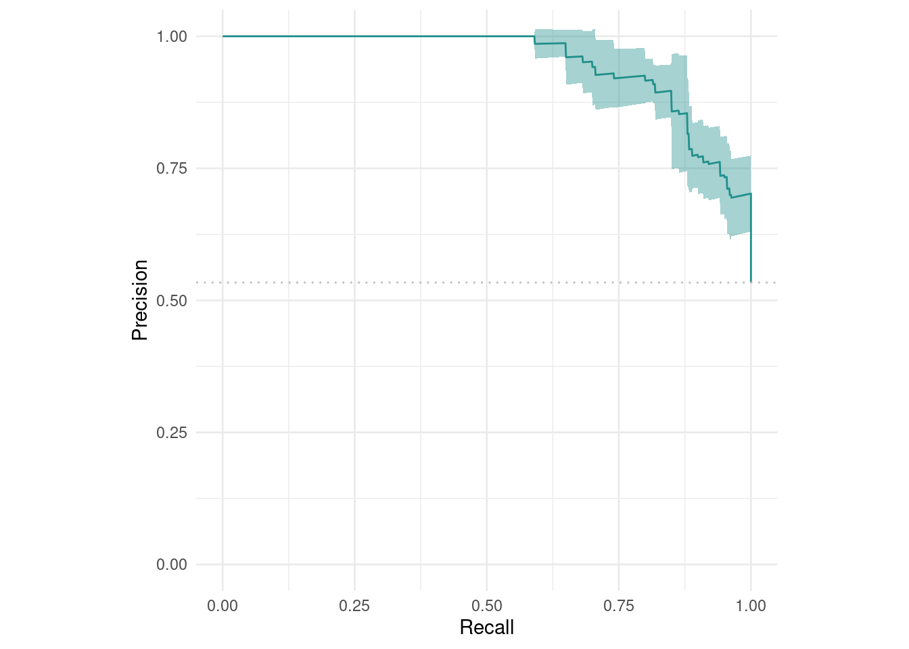
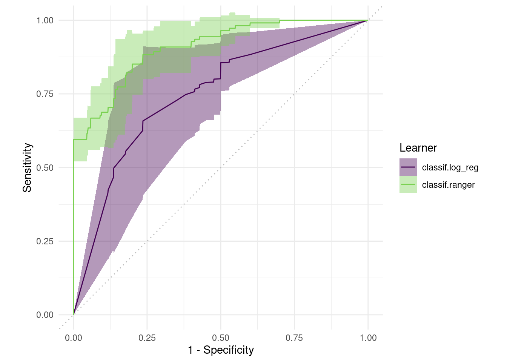

library(mlr3)
library(mlr3verse)
library(mlr3viz)mlr3 Resampling & benchmarking
mlr3
R
machine learning
mlr3를 활용한 validation 및 모델 벤치마킹
JYH ![]()
3. Resampling
# holdout: train-test split
# Instantiate: F --> 아직 resample 안됨.
task_sonar <- tsk("sonar")
lrn_rf <- lrn("classif.ranger", predict_type="prob")
resamp <- rsmp("holdout")
measures <- msrs(c("classif.acc",
"classif.sensitivity",
"classif.specificity",
"classif.auc"))
print(resamp)<ResamplingHoldout>: Holdout
* Iterations: 1
* Instantiated: FALSE
* Parameters: ratio=0.6667resamp$instantiate(task_sonar)
train <- resamp$train_set(1)
test <- resamp$test_set(1)
resamp <- rsmp('cv', folds=5)
rr <- resample(task_sonar, lrn_rf, resamp, store_models = T)INFO [09:20:52.817] [mlr3] Applying learner 'classif.ranger' on task 'sonar' (iter 1/5)
INFO [09:20:53.873] [mlr3] Applying learner 'classif.ranger' on task 'sonar' (iter 2/5)
INFO [09:20:54.000] [mlr3] Applying learner 'classif.ranger' on task 'sonar' (iter 3/5)
INFO [09:20:54.119] [mlr3] Applying learner 'classif.ranger' on task 'sonar' (iter 4/5)
INFO [09:20:54.243] [mlr3] Applying learner 'classif.ranger' on task 'sonar' (iter 5/5)rr$aggregate(measures) classif.acc classif.sensitivity classif.specificity classif.auc
0.8225319 0.8877092 0.7359691 0.9342266 autoplot(rr, type='prc')
4. Benchmarking
different learners on multiple tasks and/or different resampling
1) Design
library(mlr3)
library(mlr3learners)
design <- benchmark_grid(
tasks = tsk('sonar'),
learners = lrns(c('classif.log_reg','classif.ranger'),
predict_type='prob',
predict_sets=c('train','test')),
resamplings = rsmps('cv',folds=5)
)
design task learner resampling
1: <TaskClassif[50]> <LearnerClassifLogReg[37]> <ResamplingCV[20]>
2: <TaskClassif[50]> <LearnerClassifRanger[38]> <ResamplingCV[20]>2) Execution
bmr <- benchmark(design, store_models = T)INFO [09:20:55.187] [mlr3] Running benchmark with 10 resampling iterations
INFO [09:20:55.192] [mlr3] Applying learner 'classif.log_reg' on task 'sonar' (iter 1/5)
INFO [09:20:55.266] [mlr3] Applying learner 'classif.log_reg' on task 'sonar' (iter 2/5)
INFO [09:20:55.329] [mlr3] Applying learner 'classif.log_reg' on task 'sonar' (iter 3/5)
INFO [09:20:55.394] [mlr3] Applying learner 'classif.log_reg' on task 'sonar' (iter 4/5)
INFO [09:20:55.490] [mlr3] Applying learner 'classif.log_reg' on task 'sonar' (iter 5/5)
INFO [09:20:55.550] [mlr3] Applying learner 'classif.ranger' on task 'sonar' (iter 1/5)
INFO [09:20:55.702] [mlr3] Applying learner 'classif.ranger' on task 'sonar' (iter 2/5)
INFO [09:20:55.854] [mlr3] Applying learner 'classif.ranger' on task 'sonar' (iter 3/5)
INFO [09:20:56.004] [mlr3] Applying learner 'classif.ranger' on task 'sonar' (iter 4/5)
INFO [09:20:56.155] [mlr3] Applying learner 'classif.ranger' on task 'sonar' (iter 5/5)
INFO [09:20:56.530] [mlr3] Finished benchmarkmeasures <- list(
msr('classif.acc',id='accuracy'),
msr('classif.auc',id='AUC'),
msr('classif.prauc',id='PRC')
)
bmr$aggregate(measures) nr resample_result task_id learner_id resampling_id iters
1: 1 <ResampleResult[21]> sonar classif.log_reg cv 5
2: 2 <ResampleResult[21]> sonar classif.ranger cv 5
accuracy AUC PRC
1: 0.7252033 0.7470485 0.7297044
2: 0.8032520 0.9076560 0.92584713) Plotting
require(ggthemes)
require(ggpubr)
autoplot(bmr, type='roc')
4. Hyperparameter tuning
lrn_rf$param_set<ParamSet>
id class lower upper nlevels default
1: alpha ParamDbl -Inf Inf Inf 0.5
2: always.split.variables ParamUty NA NA Inf <NoDefault[3]>
3: class.weights ParamUty NA NA Inf
4: holdout ParamLgl NA NA 2 FALSE
5: importance ParamFct NA NA 4 <NoDefault[3]>
6: keep.inbag ParamLgl NA NA 2 FALSE
7: max.depth ParamInt 0 Inf Inf
8: min.node.size ParamInt 1 Inf Inf
9: min.prop ParamDbl -Inf Inf Inf 0.1
10: minprop ParamDbl -Inf Inf Inf 0.1
11: mtry ParamInt 1 Inf Inf <NoDefault[3]>
12: mtry.ratio ParamDbl 0 1 Inf <NoDefault[3]>
13: num.random.splits ParamInt 1 Inf Inf 1
14: num.threads ParamInt 1 Inf Inf 1
15: num.trees ParamInt 1 Inf Inf 500
16: oob.error ParamLgl NA NA 2 TRUE
17: regularization.factor ParamUty NA NA Inf 1
18: regularization.usedepth ParamLgl NA NA 2 FALSE
19: replace ParamLgl NA NA 2 TRUE
20: respect.unordered.factors ParamFct NA NA 3 ignore
21: sample.fraction ParamDbl 0 1 Inf <NoDefault[3]>
22: save.memory ParamLgl NA NA 2 FALSE
23: scale.permutation.importance ParamLgl NA NA 2 FALSE
24: se.method ParamFct NA NA 2 infjack
25: seed ParamInt -Inf Inf Inf
26: split.select.weights ParamUty NA NA Inf
27: splitrule ParamFct NA NA 3 gini
28: verbose ParamLgl NA NA 2 TRUE
29: write.forest ParamLgl NA NA 2 TRUE
id class lower upper nlevels default
parents value
1:
2:
3:
4:
5:
6:
7:
8:
9:
10:
11:
12:
13: splitrule
14: 1
15:
16:
17:
18:
19:
20:
21:
22:
23: importance
24:
25:
26:
27:
28:
29:
parents valuerequire(paradox)
lrn_rf <- lrn('classif.ranger',
max.depth=to_tune(10,50),
mtry = to_tune(5,20),
num.trees = to_tune(30,100)
)
# ti: TuningInstance
instance <- ti(
task = task_sonar,
learner = lrn_rf,
resampling = rsmp('cv',folds=5),
measures = msrs(c('classif.sensitivity',
'classif.specificity')),
terminator = trm('evals',n_evals=100)
)
instance<TuningInstanceMultiCrit>
* State: Not optimized
* Objective: <ObjectiveTuning:classif.ranger_on_sonar>
* Search Space:
id class lower upper nlevels
1: max.depth ParamInt 10 50 41
2: mtry ParamInt 5 20 16
3: num.trees ParamInt 30 100 71
* Terminator: <TerminatorEvals>tuner = tnr('random_search')
tuner$optimize(instance)INFO [09:20:57.835] [bbotk] Starting to optimize 3 parameter(s) with '<OptimizerRandomSearch>' and '<TerminatorEvals> [n_evals=100, k=0]'
INFO [09:20:57.852] [bbotk] Evaluating 1 configuration(s)
INFO [09:20:57.884] [mlr3] Running benchmark with 5 resampling iterations
INFO [09:20:57.889] [mlr3] Applying learner 'classif.ranger' on task 'sonar' (iter 1/5)
INFO [09:20:57.945] [mlr3] Applying learner 'classif.ranger' on task 'sonar' (iter 2/5)
INFO [09:20:57.993] [mlr3] Applying learner 'classif.ranger' on task 'sonar' (iter 3/5)
INFO [09:20:58.045] [mlr3] Applying learner 'classif.ranger' on task 'sonar' (iter 4/5)
INFO [09:20:58.099] [mlr3] Applying learner 'classif.ranger' on task 'sonar' (iter 5/5)
INFO [09:20:58.149] [mlr3] Finished benchmark
INFO [09:20:58.190] [bbotk] Result of batch 1:
INFO [09:20:58.192] [bbotk] max.depth mtry num.trees classif.sensitivity classif.specificity warnings
INFO [09:20:58.192] [bbotk] 36 9 100 0.8728788 0.7624228 0
INFO [09:20:58.192] [bbotk] errors runtime_learners uhash
INFO [09:20:58.192] [bbotk] 0 0.197 d78ca64f-cd5e-4860-8e83-5815b502412f
INFO [09:20:58.196] [bbotk] Evaluating 1 configuration(s)
INFO [09:20:58.220] [mlr3] Running benchmark with 5 resampling iterations
INFO [09:20:58.226] [mlr3] Applying learner 'classif.ranger' on task 'sonar' (iter 1/5)
INFO [09:20:58.315] [mlr3] Applying learner 'classif.ranger' on task 'sonar' (iter 2/5)
INFO [09:20:58.359] [mlr3] Applying learner 'classif.ranger' on task 'sonar' (iter 3/5)
INFO [09:20:58.396] [mlr3] Applying learner 'classif.ranger' on task 'sonar' (iter 4/5)
INFO [09:20:58.431] [mlr3] Applying learner 'classif.ranger' on task 'sonar' (iter 5/5)
INFO [09:20:58.466] [mlr3] Finished benchmark
INFO [09:20:58.506] [bbotk] Result of batch 2:
INFO [09:20:58.507] [bbotk] max.depth mtry num.trees classif.sensitivity classif.specificity warnings
INFO [09:20:58.507] [bbotk] 43 6 52 0.8902862 0.7393742 0
INFO [09:20:58.507] [bbotk] errors runtime_learners uhash
INFO [09:20:58.507] [bbotk] 0 0.133 01e57182-9e38-4804-8336-dfd044bbe35c
INFO [09:20:58.511] [bbotk] Evaluating 1 configuration(s)
INFO [09:20:58.532] [mlr3] Running benchmark with 5 resampling iterations
INFO [09:20:58.537] [mlr3] Applying learner 'classif.ranger' on task 'sonar' (iter 1/5)
INFO [09:20:58.830] [mlr3] Applying learner 'classif.ranger' on task 'sonar' (iter 2/5)
INFO [09:20:58.880] [mlr3] Applying learner 'classif.ranger' on task 'sonar' (iter 3/5)
INFO [09:20:58.924] [mlr3] Applying learner 'classif.ranger' on task 'sonar' (iter 4/5)
INFO [09:20:58.972] [mlr3] Applying learner 'classif.ranger' on task 'sonar' (iter 5/5)
INFO [09:20:59.021] [mlr3] Finished benchmark
INFO [09:20:59.060] [bbotk] Result of batch 3:
INFO [09:20:59.062] [bbotk] max.depth mtry num.trees classif.sensitivity classif.specificity warnings
INFO [09:20:59.062] [bbotk] 16 15 56 0.8936364 0.7401773 0
INFO [09:20:59.062] [bbotk] errors runtime_learners uhash
INFO [09:20:59.062] [bbotk] 0 0.424 00478c47-6130-4fd2-80aa-642d798bd7f4
INFO [09:20:59.065] [bbotk] Evaluating 1 configuration(s)
INFO [09:20:59.086] [mlr3] Running benchmark with 5 resampling iterations
INFO [09:20:59.091] [mlr3] Applying learner 'classif.ranger' on task 'sonar' (iter 1/5)
INFO [09:20:59.143] [mlr3] Applying learner 'classif.ranger' on task 'sonar' (iter 2/5)
INFO [09:20:59.188] [mlr3] Applying learner 'classif.ranger' on task 'sonar' (iter 3/5)
INFO [09:20:59.240] [mlr3] Applying learner 'classif.ranger' on task 'sonar' (iter 4/5)
INFO [09:20:59.296] [mlr3] Applying learner 'classif.ranger' on task 'sonar' (iter 5/5)
INFO [09:20:59.346] [mlr3] Finished benchmark
INFO [09:20:59.385] [bbotk] Result of batch 4:
INFO [09:20:59.387] [bbotk] max.depth mtry num.trees classif.sensitivity classif.specificity warnings
INFO [09:20:59.387] [bbotk] 31 8 94 0.8908586 0.7501773 0
INFO [09:20:59.387] [bbotk] errors runtime_learners uhash
INFO [09:20:59.387] [bbotk] 0 0.186 957ccfe0-90a8-4cf3-a491-c4e96f2d0c14
INFO [09:20:59.390] [bbotk] Evaluating 1 configuration(s)
INFO [09:20:59.411] [mlr3] Running benchmark with 5 resampling iterations
INFO [09:20:59.416] [mlr3] Applying learner 'classif.ranger' on task 'sonar' (iter 1/5)
INFO [09:20:59.462] [mlr3] Applying learner 'classif.ranger' on task 'sonar' (iter 2/5)
INFO [09:20:59.502] [mlr3] Applying learner 'classif.ranger' on task 'sonar' (iter 3/5)
INFO [09:20:59.543] [mlr3] Applying learner 'classif.ranger' on task 'sonar' (iter 4/5)
INFO [09:20:59.584] [mlr3] Applying learner 'classif.ranger' on task 'sonar' (iter 5/5)
INFO [09:20:59.624] [mlr3] Finished benchmark
INFO [09:20:59.664] [bbotk] Result of batch 5:
INFO [09:20:59.666] [bbotk] max.depth mtry num.trees classif.sensitivity classif.specificity warnings
INFO [09:20:59.666] [bbotk] 27 5 90 0.9209091 0.8011835 0
INFO [09:20:59.666] [bbotk] errors runtime_learners uhash
INFO [09:20:59.666] [bbotk] 0 0.152 e4e7855c-27ef-4783-b6cb-0385823dc015
INFO [09:20:59.670] [bbotk] Evaluating 1 configuration(s)
INFO [09:20:59.697] [mlr3] Running benchmark with 5 resampling iterations
INFO [09:20:59.702] [mlr3] Applying learner 'classif.ranger' on task 'sonar' (iter 1/5)
INFO [09:20:59.770] [mlr3] Applying learner 'classif.ranger' on task 'sonar' (iter 2/5)
INFO [09:20:59.832] [mlr3] Applying learner 'classif.ranger' on task 'sonar' (iter 3/5)
INFO [09:20:59.903] [mlr3] Applying learner 'classif.ranger' on task 'sonar' (iter 4/5)
INFO [09:20:59.970] [mlr3] Applying learner 'classif.ranger' on task 'sonar' (iter 5/5)
INFO [09:21:00.032] [mlr3] Finished benchmark
INFO [09:21:00.075] [bbotk] Result of batch 6:
INFO [09:21:00.077] [bbotk] max.depth mtry num.trees classif.sensitivity classif.specificity warnings
INFO [09:21:00.077] [bbotk] 33 17 96 0.9210606 0.7843846 0
INFO [09:21:00.077] [bbotk] errors runtime_learners uhash
INFO [09:21:00.077] [bbotk] 0 0.251 7491243f-ebcd-4ef8-8559-5718d48ad78d
INFO [09:21:00.082] [bbotk] Evaluating 1 configuration(s)
INFO [09:21:00.106] [mlr3] Running benchmark with 5 resampling iterations
INFO [09:21:00.112] [mlr3] Applying learner 'classif.ranger' on task 'sonar' (iter 1/5)
INFO [09:21:00.166] [mlr3] Applying learner 'classif.ranger' on task 'sonar' (iter 2/5)
INFO [09:21:00.228] [mlr3] Applying learner 'classif.ranger' on task 'sonar' (iter 3/5)
INFO [09:21:00.281] [mlr3] Applying learner 'classif.ranger' on task 'sonar' (iter 4/5)
INFO [09:21:00.325] [mlr3] Applying learner 'classif.ranger' on task 'sonar' (iter 5/5)
INFO [09:21:00.371] [mlr3] Finished benchmark
INFO [09:21:00.410] [bbotk] Result of batch 7:
INFO [09:21:00.412] [bbotk] max.depth mtry num.trees classif.sensitivity classif.specificity warnings
INFO [09:21:00.412] [bbotk] 29 17 58 0.8777104 0.7652754 0
INFO [09:21:00.412] [bbotk] errors runtime_learners uhash
INFO [09:21:00.412] [bbotk] 0 0.198 40b140f3-a5bd-411c-9741-ba77a662086a
INFO [09:21:00.416] [bbotk] Evaluating 1 configuration(s)
INFO [09:21:00.436] [mlr3] Running benchmark with 5 resampling iterations
INFO [09:21:00.441] [mlr3] Applying learner 'classif.ranger' on task 'sonar' (iter 1/5)
INFO [09:21:00.487] [mlr3] Applying learner 'classif.ranger' on task 'sonar' (iter 2/5)
INFO [09:21:00.530] [mlr3] Applying learner 'classif.ranger' on task 'sonar' (iter 3/5)
INFO [09:21:00.573] [mlr3] Applying learner 'classif.ranger' on task 'sonar' (iter 4/5)
INFO [09:21:00.615] [mlr3] Applying learner 'classif.ranger' on task 'sonar' (iter 5/5)
INFO [09:21:00.662] [mlr3] Finished benchmark
INFO [09:21:00.701] [bbotk] Result of batch 8:
INFO [09:21:00.703] [bbotk] max.depth mtry num.trees classif.sensitivity classif.specificity warnings
INFO [09:21:00.703] [bbotk] 21 15 44 0.8919697 0.7649451 0
INFO [09:21:00.703] [bbotk] errors runtime_learners uhash
INFO [09:21:00.703] [bbotk] 0 0.152 0e6e887d-a48e-4ae4-906c-d65d49619a51
INFO [09:21:00.706] [bbotk] Evaluating 1 configuration(s)
INFO [09:21:00.727] [mlr3] Running benchmark with 5 resampling iterations
INFO [09:21:00.732] [mlr3] Applying learner 'classif.ranger' on task 'sonar' (iter 1/5)
INFO [09:21:00.788] [mlr3] Applying learner 'classif.ranger' on task 'sonar' (iter 2/5)
INFO [09:21:00.839] [mlr3] Applying learner 'classif.ranger' on task 'sonar' (iter 3/5)
INFO [09:21:00.890] [mlr3] Applying learner 'classif.ranger' on task 'sonar' (iter 4/5)
INFO [09:21:00.940] [mlr3] Applying learner 'classif.ranger' on task 'sonar' (iter 5/5)
INFO [09:21:00.989] [mlr3] Finished benchmark
INFO [09:21:01.030] [bbotk] Result of batch 9:
INFO [09:21:01.032] [bbotk] max.depth mtry num.trees classif.sensitivity classif.specificity warnings
INFO [09:21:01.032] [bbotk] 35 11 85 0.88867 0.7473248 0
INFO [09:21:01.032] [bbotk] errors runtime_learners uhash
INFO [09:21:01.032] [bbotk] 0 0.194 3c10560c-b5b5-4d31-bf6b-d26b1bfcec8c
INFO [09:21:01.036] [bbotk] Evaluating 1 configuration(s)
INFO [09:21:01.064] [mlr3] Running benchmark with 5 resampling iterations
INFO [09:21:01.069] [mlr3] Applying learner 'classif.ranger' on task 'sonar' (iter 1/5)
INFO [09:21:01.107] [mlr3] Applying learner 'classif.ranger' on task 'sonar' (iter 2/5)
INFO [09:21:01.140] [mlr3] Applying learner 'classif.ranger' on task 'sonar' (iter 3/5)
INFO [09:21:01.177] [mlr3] Applying learner 'classif.ranger' on task 'sonar' (iter 4/5)
INFO [09:21:01.212] [mlr3] Applying learner 'classif.ranger' on task 'sonar' (iter 5/5)
INFO [09:21:01.246] [mlr3] Finished benchmark
INFO [09:21:01.285] [bbotk] Result of batch 10:
INFO [09:21:01.287] [bbotk] max.depth mtry num.trees classif.sensitivity classif.specificity warnings
INFO [09:21:01.287] [bbotk] 49 6 40 0.8897643 0.6819842 0
INFO [09:21:01.287] [bbotk] errors runtime_learners uhash
INFO [09:21:01.287] [bbotk] 0 0.12 5a995ffc-48be-40f3-b686-b33b14693355
INFO [09:21:01.291] [bbotk] Evaluating 1 configuration(s)
INFO [09:21:01.311] [mlr3] Running benchmark with 5 resampling iterations
INFO [09:21:01.316] [mlr3] Applying learner 'classif.ranger' on task 'sonar' (iter 1/5)
INFO [09:21:01.372] [mlr3] Applying learner 'classif.ranger' on task 'sonar' (iter 2/5)
INFO [09:21:01.423] [mlr3] Applying learner 'classif.ranger' on task 'sonar' (iter 3/5)
INFO [09:21:01.483] [mlr3] Applying learner 'classif.ranger' on task 'sonar' (iter 4/5)
INFO [09:21:01.534] [mlr3] Applying learner 'classif.ranger' on task 'sonar' (iter 5/5)
INFO [09:21:01.585] [mlr3] Finished benchmark
INFO [09:21:01.624] [bbotk] Result of batch 11:
INFO [09:21:01.626] [bbotk] max.depth mtry num.trees classif.sensitivity classif.specificity warnings
INFO [09:21:01.626] [bbotk] 11 19 55 0.918468 0.7699451 0
INFO [09:21:01.626] [bbotk] errors runtime_learners uhash
INFO [09:21:01.626] [bbotk] 0 0.197 341ebb50-35ee-4a25-a92b-270f72b37aed
INFO [09:21:01.630] [bbotk] Evaluating 1 configuration(s)
INFO [09:21:01.650] [mlr3] Running benchmark with 5 resampling iterations
INFO [09:21:01.655] [mlr3] Applying learner 'classif.ranger' on task 'sonar' (iter 1/5)
INFO [09:21:01.716] [mlr3] Applying learner 'classif.ranger' on task 'sonar' (iter 2/5)
INFO [09:21:01.775] [mlr3] Applying learner 'classif.ranger' on task 'sonar' (iter 3/5)
INFO [09:21:01.836] [mlr3] Applying learner 'classif.ranger' on task 'sonar' (iter 4/5)
INFO [09:21:01.897] [mlr3] Applying learner 'classif.ranger' on task 'sonar' (iter 5/5)
INFO [09:21:01.956] [mlr3] Finished benchmark
INFO [09:21:02.002] [bbotk] Result of batch 12:
INFO [09:21:02.004] [bbotk] max.depth mtry num.trees classif.sensitivity classif.specificity warnings
INFO [09:21:02.004] [bbotk] 44 18 81 0.9110606 0.7827976 0
INFO [09:21:02.004] [bbotk] errors runtime_learners uhash
INFO [09:21:02.004] [bbotk] 0 0.231 4bdb31ef-4c0c-4bdc-baa5-eb455766f38b
INFO [09:21:02.008] [bbotk] Evaluating 1 configuration(s)
INFO [09:21:02.028] [mlr3] Running benchmark with 5 resampling iterations
INFO [09:21:02.033] [mlr3] Applying learner 'classif.ranger' on task 'sonar' (iter 1/5)
INFO [09:21:02.087] [mlr3] Applying learner 'classif.ranger' on task 'sonar' (iter 2/5)
INFO [09:21:02.140] [mlr3] Applying learner 'classif.ranger' on task 'sonar' (iter 3/5)
INFO [09:21:02.190] [mlr3] Applying learner 'classif.ranger' on task 'sonar' (iter 4/5)
INFO [09:21:02.240] [mlr3] Applying learner 'classif.ranger' on task 'sonar' (iter 5/5)
INFO [09:21:02.289] [mlr3] Finished benchmark
INFO [09:21:02.332] [bbotk] Result of batch 13:
INFO [09:21:02.334] [bbotk] max.depth mtry num.trees classif.sensitivity classif.specificity warnings
INFO [09:21:02.334] [bbotk] 36 14 69 0.8736364 0.7464157 0
INFO [09:21:02.334] [bbotk] errors runtime_learners uhash
INFO [09:21:02.334] [bbotk] 0 0.191 c78347f4-d2b3-41e2-91c9-b43e251a1eca
INFO [09:21:02.338] [bbotk] Evaluating 1 configuration(s)
INFO [09:21:02.371] [mlr3] Running benchmark with 5 resampling iterations
INFO [09:21:02.377] [mlr3] Applying learner 'classif.ranger' on task 'sonar' (iter 1/5)
INFO [09:21:02.420] [mlr3] Applying learner 'classif.ranger' on task 'sonar' (iter 2/5)
INFO [09:21:02.461] [mlr3] Applying learner 'classif.ranger' on task 'sonar' (iter 3/5)
INFO [09:21:02.501] [mlr3] Applying learner 'classif.ranger' on task 'sonar' (iter 4/5)
INFO [09:21:02.540] [mlr3] Applying learner 'classif.ranger' on task 'sonar' (iter 5/5)
INFO [09:21:02.577] [mlr3] Finished benchmark
INFO [09:21:02.617] [bbotk] Result of batch 14:
INFO [09:21:02.618] [bbotk] max.depth mtry num.trees classif.sensitivity classif.specificity warnings
INFO [09:21:02.618] [bbotk] 48 7 54 0.8953199 0.7435632 0
INFO [09:21:02.618] [bbotk] errors runtime_learners uhash
INFO [09:21:02.618] [bbotk] 0 0.139 9d4f1396-6f9d-4cb1-a8bc-0fc56210866b
INFO [09:21:02.622] [bbotk] Evaluating 1 configuration(s)
INFO [09:21:02.643] [mlr3] Running benchmark with 5 resampling iterations
INFO [09:21:02.648] [mlr3] Applying learner 'classif.ranger' on task 'sonar' (iter 1/5)
INFO [09:21:02.708] [mlr3] Applying learner 'classif.ranger' on task 'sonar' (iter 2/5)
INFO [09:21:02.770] [mlr3] Applying learner 'classif.ranger' on task 'sonar' (iter 3/5)
INFO [09:21:02.828] [mlr3] Applying learner 'classif.ranger' on task 'sonar' (iter 4/5)
INFO [09:21:02.884] [mlr3] Applying learner 'classif.ranger' on task 'sonar' (iter 5/5)
INFO [09:21:02.942] [mlr3] Finished benchmark
INFO [09:21:02.981] [bbotk] Result of batch 15:
INFO [09:21:02.983] [bbotk] max.depth mtry num.trees classif.sensitivity classif.specificity warnings
INFO [09:21:02.983] [bbotk] 31 13 100 0.9093771 0.7585106 0
INFO [09:21:02.983] [bbotk] errors runtime_learners uhash
INFO [09:21:02.983] [bbotk] 0 0.22 c0689546-de20-483e-863d-164d6acd3468
INFO [09:21:02.987] [bbotk] Evaluating 1 configuration(s)
INFO [09:21:03.007] [mlr3] Running benchmark with 5 resampling iterations
INFO [09:21:03.012] [mlr3] Applying learner 'classif.ranger' on task 'sonar' (iter 1/5)
INFO [09:21:03.062] [mlr3] Applying learner 'classif.ranger' on task 'sonar' (iter 2/5)
INFO [09:21:03.105] [mlr3] Applying learner 'classif.ranger' on task 'sonar' (iter 3/5)
INFO [09:21:03.153] [mlr3] Applying learner 'classif.ranger' on task 'sonar' (iter 4/5)
INFO [09:21:03.200] [mlr3] Applying learner 'classif.ranger' on task 'sonar' (iter 5/5)
INFO [09:21:03.270] [mlr3] Finished benchmark
INFO [09:21:03.310] [bbotk] Result of batch 16:
INFO [09:21:03.311] [bbotk] max.depth mtry num.trees classif.sensitivity classif.specificity warnings
INFO [09:21:03.311] [bbotk] 27 6 94 0.885303 0.7330026 0
INFO [09:21:03.311] [bbotk] errors runtime_learners uhash
INFO [09:21:03.311] [bbotk] 0 0.171 06b2e4f4-301f-4a13-83d2-4c0a6dc52a49
INFO [09:21:03.315] [bbotk] Evaluating 1 configuration(s)
INFO [09:21:03.336] [mlr3] Running benchmark with 5 resampling iterations
INFO [09:21:03.341] [mlr3] Applying learner 'classif.ranger' on task 'sonar' (iter 1/5)
INFO [09:21:03.395] [mlr3] Applying learner 'classif.ranger' on task 'sonar' (iter 2/5)
INFO [09:21:03.446] [mlr3] Applying learner 'classif.ranger' on task 'sonar' (iter 3/5)
INFO [09:21:03.495] [mlr3] Applying learner 'classif.ranger' on task 'sonar' (iter 4/5)
INFO [09:21:03.544] [mlr3] Applying learner 'classif.ranger' on task 'sonar' (iter 5/5)
INFO [09:21:03.589] [mlr3] Finished benchmark
INFO [09:21:03.630] [bbotk] Result of batch 17:
INFO [09:21:03.632] [bbotk] max.depth mtry num.trees classif.sensitivity classif.specificity warnings
INFO [09:21:03.632] [bbotk] 28 16 64 0.8742088 0.7458894 0
INFO [09:21:03.632] [bbotk] errors runtime_learners uhash
INFO [09:21:03.632] [bbotk] 0 0.186 52577e20-90a3-4e95-ac90-453e2c274001
INFO [09:21:03.636] [bbotk] Evaluating 1 configuration(s)
INFO [09:21:03.668] [mlr3] Running benchmark with 5 resampling iterations
INFO [09:21:03.673] [mlr3] Applying learner 'classif.ranger' on task 'sonar' (iter 1/5)
INFO [09:21:03.730] [mlr3] Applying learner 'classif.ranger' on task 'sonar' (iter 2/5)
INFO [09:21:03.785] [mlr3] Applying learner 'classif.ranger' on task 'sonar' (iter 3/5)
INFO [09:21:03.836] [mlr3] Applying learner 'classif.ranger' on task 'sonar' (iter 4/5)
INFO [09:21:03.889] [mlr3] Applying learner 'classif.ranger' on task 'sonar' (iter 5/5)
INFO [09:21:03.939] [mlr3] Finished benchmark
INFO [09:21:03.979] [bbotk] Result of batch 18:
INFO [09:21:03.980] [bbotk] max.depth mtry num.trees classif.sensitivity classif.specificity warnings
INFO [09:21:03.980] [bbotk] 16 16 74 0.8469529 0.7376095 0
INFO [09:21:03.980] [bbotk] errors runtime_learners uhash
INFO [09:21:03.980] [bbotk] 0 0.199 131afaf4-614b-4a56-81af-940c220bbe0a
INFO [09:21:03.984] [bbotk] Evaluating 1 configuration(s)
INFO [09:21:04.006] [mlr3] Running benchmark with 5 resampling iterations
INFO [09:21:04.011] [mlr3] Applying learner 'classif.ranger' on task 'sonar' (iter 1/5)
INFO [09:21:04.061] [mlr3] Applying learner 'classif.ranger' on task 'sonar' (iter 2/5)
INFO [09:21:04.111] [mlr3] Applying learner 'classif.ranger' on task 'sonar' (iter 3/5)
INFO [09:21:04.171] [mlr3] Applying learner 'classif.ranger' on task 'sonar' (iter 4/5)
INFO [09:21:04.219] [mlr3] Applying learner 'classif.ranger' on task 'sonar' (iter 5/5)
INFO [09:21:04.261] [mlr3] Finished benchmark
INFO [09:21:04.301] [bbotk] Result of batch 19:
INFO [09:21:04.302] [bbotk] max.depth mtry num.trees classif.sensitivity classif.specificity warnings
INFO [09:21:04.302] [bbotk] 17 19 49 0.8567845 0.7361844 0
INFO [09:21:04.302] [bbotk] errors runtime_learners uhash
INFO [09:21:04.302] [bbotk] 0 0.181 1b2476fc-69b9-47c9-a0c4-7c0590dc98bf
INFO [09:21:04.306] [bbotk] Evaluating 1 configuration(s)
INFO [09:21:04.327] [mlr3] Running benchmark with 5 resampling iterations
INFO [09:21:04.332] [mlr3] Applying learner 'classif.ranger' on task 'sonar' (iter 1/5)
INFO [09:21:04.401] [mlr3] Applying learner 'classif.ranger' on task 'sonar' (iter 2/5)
INFO [09:21:04.463] [mlr3] Applying learner 'classif.ranger' on task 'sonar' (iter 3/5)
INFO [09:21:04.526] [mlr3] Applying learner 'classif.ranger' on task 'sonar' (iter 4/5)
INFO [09:21:04.590] [mlr3] Applying learner 'classif.ranger' on task 'sonar' (iter 5/5)
INFO [09:21:04.656] [mlr3] Finished benchmark
INFO [09:21:04.706] [bbotk] Result of batch 20:
INFO [09:21:04.707] [bbotk] max.depth mtry num.trees classif.sensitivity classif.specificity warnings
INFO [09:21:04.707] [bbotk] 26 17 99 0.8928788 0.7316653 0
INFO [09:21:04.707] [bbotk] errors runtime_learners uhash
INFO [09:21:04.707] [bbotk] 0 0.251 3948a409-642b-4945-9b14-fd79c6d88e1a
INFO [09:21:04.711] [bbotk] Evaluating 1 configuration(s)
INFO [09:21:04.732] [mlr3] Running benchmark with 5 resampling iterations
INFO [09:21:04.737] [mlr3] Applying learner 'classif.ranger' on task 'sonar' (iter 1/5)
INFO [09:21:04.794] [mlr3] Applying learner 'classif.ranger' on task 'sonar' (iter 2/5)
INFO [09:21:04.844] [mlr3] Applying learner 'classif.ranger' on task 'sonar' (iter 3/5)
INFO [09:21:04.888] [mlr3] Applying learner 'classif.ranger' on task 'sonar' (iter 4/5)
INFO [09:21:04.933] [mlr3] Applying learner 'classif.ranger' on task 'sonar' (iter 5/5)
INFO [09:21:04.977] [mlr3] Finished benchmark
INFO [09:21:05.020] [bbotk] Result of batch 21:
INFO [09:21:05.022] [bbotk] max.depth mtry num.trees classif.sensitivity classif.specificity warnings
INFO [09:21:05.022] [bbotk] 50 11 63 0.8965825 0.7603734 0
INFO [09:21:05.022] [bbotk] errors runtime_learners uhash
INFO [09:21:05.022] [bbotk] 0 0.169 bb82e7ff-5159-439d-a2f7-512eca7ae5a3
INFO [09:21:05.026] [bbotk] Evaluating 1 configuration(s)
INFO [09:21:05.064] [mlr3] Running benchmark with 5 resampling iterations
INFO [09:21:05.070] [mlr3] Applying learner 'classif.ranger' on task 'sonar' (iter 1/5)
INFO [09:21:05.118] [mlr3] Applying learner 'classif.ranger' on task 'sonar' (iter 2/5)
INFO [09:21:05.174] [mlr3] Applying learner 'classif.ranger' on task 'sonar' (iter 3/5)
INFO [09:21:05.223] [mlr3] Applying learner 'classif.ranger' on task 'sonar' (iter 4/5)
INFO [09:21:05.273] [mlr3] Applying learner 'classif.ranger' on task 'sonar' (iter 5/5)
INFO [09:21:05.316] [mlr3] Finished benchmark
INFO [09:21:05.356] [bbotk] Result of batch 22:
INFO [09:21:05.358] [bbotk] max.depth mtry num.trees classif.sensitivity classif.specificity warnings
INFO [09:21:05.358] [bbotk] 25 19 45 0.9045623 0.7168965 0
INFO [09:21:05.358] [bbotk] errors runtime_learners uhash
INFO [09:21:05.358] [bbotk] 0 0.179 acf15c86-ae6c-4a59-8f52-078fef5fcc34
INFO [09:21:05.362] [bbotk] Evaluating 1 configuration(s)
INFO [09:21:05.383] [mlr3] Running benchmark with 5 resampling iterations
INFO [09:21:05.388] [mlr3] Applying learner 'classif.ranger' on task 'sonar' (iter 1/5)
INFO [09:21:05.439] [mlr3] Applying learner 'classif.ranger' on task 'sonar' (iter 2/5)
INFO [09:21:05.491] [mlr3] Applying learner 'classif.ranger' on task 'sonar' (iter 3/5)
INFO [09:21:05.548] [mlr3] Applying learner 'classif.ranger' on task 'sonar' (iter 4/5)
INFO [09:21:05.598] [mlr3] Applying learner 'classif.ranger' on task 'sonar' (iter 5/5)
INFO [09:21:05.640] [mlr3] Finished benchmark
INFO [09:21:05.679] [bbotk] Result of batch 23:
INFO [09:21:05.681] [bbotk] max.depth mtry num.trees classif.sensitivity classif.specificity warnings
INFO [09:21:05.681] [bbotk] 45 17 49 0.8788215 0.707458 0
INFO [09:21:05.681] [bbotk] errors runtime_learners uhash
INFO [09:21:05.681] [bbotk] 0 0.19 cf70eda4-ebc1-46d7-8730-d10108ce1a2d
INFO [09:21:05.685] [bbotk] Evaluating 1 configuration(s)
INFO [09:21:05.705] [mlr3] Running benchmark with 5 resampling iterations
INFO [09:21:05.710] [mlr3] Applying learner 'classif.ranger' on task 'sonar' (iter 1/5)
INFO [09:21:05.756] [mlr3] Applying learner 'classif.ranger' on task 'sonar' (iter 2/5)
INFO [09:21:05.798] [mlr3] Applying learner 'classif.ranger' on task 'sonar' (iter 3/5)
INFO [09:21:05.840] [mlr3] Applying learner 'classif.ranger' on task 'sonar' (iter 4/5)
INFO [09:21:05.883] [mlr3] Applying learner 'classif.ranger' on task 'sonar' (iter 5/5)
INFO [09:21:05.926] [mlr3] Finished benchmark
INFO [09:21:05.976] [bbotk] Result of batch 24:
INFO [09:21:05.977] [bbotk] max.depth mtry num.trees classif.sensitivity classif.specificity warnings
INFO [09:21:05.977] [bbotk] 35 6 85 0.8816162 0.7274228 0
INFO [09:21:05.977] [bbotk] errors runtime_learners uhash
INFO [09:21:05.977] [bbotk] 0 0.156 83b5c382-0091-4a61-ade2-208859f2f710
INFO [09:21:05.981] [bbotk] Evaluating 1 configuration(s)
INFO [09:21:06.002] [mlr3] Running benchmark with 5 resampling iterations
INFO [09:21:06.007] [mlr3] Applying learner 'classif.ranger' on task 'sonar' (iter 1/5)
INFO [09:21:06.044] [mlr3] Applying learner 'classif.ranger' on task 'sonar' (iter 2/5)
INFO [09:21:06.080] [mlr3] Applying learner 'classif.ranger' on task 'sonar' (iter 3/5)
INFO [09:21:06.114] [mlr3] Applying learner 'classif.ranger' on task 'sonar' (iter 4/5)
INFO [09:21:06.150] [mlr3] Applying learner 'classif.ranger' on task 'sonar' (iter 5/5)
INFO [09:21:06.183] [mlr3] Finished benchmark
INFO [09:21:06.224] [bbotk] Result of batch 25:
INFO [09:21:06.226] [bbotk] max.depth mtry num.trees classif.sensitivity classif.specificity warnings
INFO [09:21:06.226] [bbotk] 46 9 36 0.868468 0.7687067 0
INFO [09:21:06.226] [bbotk] errors runtime_learners uhash
INFO [09:21:06.226] [bbotk] 0 0.121 2c35dd8d-df0a-4925-be50-1dde1e7ea48e
INFO [09:21:06.230] [bbotk] Evaluating 1 configuration(s)
INFO [09:21:06.262] [mlr3] Running benchmark with 5 resampling iterations
INFO [09:21:06.267] [mlr3] Applying learner 'classif.ranger' on task 'sonar' (iter 1/5)
INFO [09:21:06.324] [mlr3] Applying learner 'classif.ranger' on task 'sonar' (iter 2/5)
INFO [09:21:06.374] [mlr3] Applying learner 'classif.ranger' on task 'sonar' (iter 3/5)
INFO [09:21:06.429] [mlr3] Applying learner 'classif.ranger' on task 'sonar' (iter 4/5)
INFO [09:21:06.479] [mlr3] Applying learner 'classif.ranger' on task 'sonar' (iter 5/5)
INFO [09:21:06.529] [mlr3] Finished benchmark
INFO [09:21:06.568] [bbotk] Result of batch 26:
INFO [09:21:06.570] [bbotk] max.depth mtry num.trees classif.sensitivity classif.specificity warnings
INFO [09:21:06.570] [bbotk] 31 18 64 0.8851178 0.7529843 0
INFO [09:21:06.570] [bbotk] errors runtime_learners uhash
INFO [09:21:06.570] [bbotk] 0 0.195 ae132c42-e49e-44cd-b4e9-4d3d3ed9207e
INFO [09:21:06.574] [bbotk] Evaluating 1 configuration(s)
INFO [09:21:06.595] [mlr3] Running benchmark with 5 resampling iterations
INFO [09:21:06.600] [mlr3] Applying learner 'classif.ranger' on task 'sonar' (iter 1/5)
INFO [09:21:06.641] [mlr3] Applying learner 'classif.ranger' on task 'sonar' (iter 2/5)
INFO [09:21:06.687] [mlr3] Applying learner 'classif.ranger' on task 'sonar' (iter 3/5)
INFO [09:21:06.731] [mlr3] Applying learner 'classif.ranger' on task 'sonar' (iter 4/5)
INFO [09:21:06.769] [mlr3] Applying learner 'classif.ranger' on task 'sonar' (iter 5/5)
INFO [09:21:06.808] [mlr3] Finished benchmark
INFO [09:21:06.848] [bbotk] Result of batch 27:
INFO [09:21:06.850] [bbotk] max.depth mtry num.trees classif.sensitivity classif.specificity warnings
INFO [09:21:06.850] [bbotk] 25 6 62 0.9007071 0.7050521 0
INFO [09:21:06.850] [bbotk] errors runtime_learners uhash
INFO [09:21:06.850] [bbotk] 0 0.149 9429c2f3-3e83-418c-9286-ec9b41c16f0f
INFO [09:21:06.854] [bbotk] Evaluating 1 configuration(s)
INFO [09:21:06.875] [mlr3] Running benchmark with 5 resampling iterations
INFO [09:21:06.880] [mlr3] Applying learner 'classif.ranger' on task 'sonar' (iter 1/5)
INFO [09:21:06.924] [mlr3] Applying learner 'classif.ranger' on task 'sonar' (iter 2/5)
INFO [09:21:06.962] [mlr3] Applying learner 'classif.ranger' on task 'sonar' (iter 3/5)
INFO [09:21:07.000] [mlr3] Applying learner 'classif.ranger' on task 'sonar' (iter 4/5)
INFO [09:21:07.040] [mlr3] Applying learner 'classif.ranger' on task 'sonar' (iter 5/5)
INFO [09:21:07.089] [mlr3] Finished benchmark
INFO [09:21:07.129] [bbotk] Result of batch 28:
INFO [09:21:07.130] [bbotk] max.depth mtry num.trees classif.sensitivity classif.specificity warnings
INFO [09:21:07.130] [bbotk] 28 15 38 0.8962458 0.7164157 0
INFO [09:21:07.130] [bbotk] errors runtime_learners uhash
INFO [09:21:07.130] [bbotk] 0 0.14 4b9bcf0d-6a8d-4c5d-a552-9cae8eb38609
INFO [09:21:07.134] [bbotk] Evaluating 1 configuration(s)
INFO [09:21:07.155] [mlr3] Running benchmark with 5 resampling iterations
INFO [09:21:07.161] [mlr3] Applying learner 'classif.ranger' on task 'sonar' (iter 1/5)
INFO [09:21:07.208] [mlr3] Applying learner 'classif.ranger' on task 'sonar' (iter 2/5)
INFO [09:21:07.247] [mlr3] Applying learner 'classif.ranger' on task 'sonar' (iter 3/5)
INFO [09:21:07.293] [mlr3] Applying learner 'classif.ranger' on task 'sonar' (iter 4/5)
INFO [09:21:07.336] [mlr3] Applying learner 'classif.ranger' on task 'sonar' (iter 5/5)
INFO [09:21:07.378] [mlr3] Finished benchmark
INFO [09:21:07.423] [bbotk] Result of batch 29:
INFO [09:21:07.436] [bbotk] max.depth mtry num.trees classif.sensitivity classif.specificity warnings
INFO [09:21:07.436] [bbotk] 26 13 46 0.8668013 0.7576996 0
INFO [09:21:07.436] [bbotk] errors runtime_learners uhash
INFO [09:21:07.436] [bbotk] 0 0.154 51b0276c-4c02-42d0-954a-ea3052618b35
INFO [09:21:07.443] [bbotk] Evaluating 1 configuration(s)
INFO [09:21:07.467] [mlr3] Running benchmark with 5 resampling iterations
INFO [09:21:07.473] [mlr3] Applying learner 'classif.ranger' on task 'sonar' (iter 1/5)
INFO [09:21:07.516] [mlr3] Applying learner 'classif.ranger' on task 'sonar' (iter 2/5)
INFO [09:21:07.554] [mlr3] Applying learner 'classif.ranger' on task 'sonar' (iter 3/5)
INFO [09:21:07.594] [mlr3] Applying learner 'classif.ranger' on task 'sonar' (iter 4/5)
INFO [09:21:07.633] [mlr3] Applying learner 'classif.ranger' on task 'sonar' (iter 5/5)
INFO [09:21:07.671] [mlr3] Finished benchmark
INFO [09:21:07.713] [bbotk] Result of batch 30:
INFO [09:21:07.714] [bbotk] max.depth mtry num.trees classif.sensitivity classif.specificity warnings
INFO [09:21:07.714] [bbotk] 22 14 37 0.8884512 0.7333671 0
INFO [09:21:07.714] [bbotk] errors runtime_learners uhash
INFO [09:21:07.714] [bbotk] 0 0.141 da939341-4262-4748-a34c-760106a9e64b
INFO [09:21:07.718] [bbotk] Evaluating 1 configuration(s)
INFO [09:21:07.740] [mlr3] Running benchmark with 5 resampling iterations
INFO [09:21:07.745] [mlr3] Applying learner 'classif.ranger' on task 'sonar' (iter 1/5)
INFO [09:21:07.804] [mlr3] Applying learner 'classif.ranger' on task 'sonar' (iter 2/5)
INFO [09:21:07.849] [mlr3] Applying learner 'classif.ranger' on task 'sonar' (iter 3/5)
INFO [09:21:07.892] [mlr3] Applying learner 'classif.ranger' on task 'sonar' (iter 4/5)
INFO [09:21:07.934] [mlr3] Applying learner 'classif.ranger' on task 'sonar' (iter 5/5)
INFO [09:21:07.975] [mlr3] Finished benchmark
INFO [09:21:08.016] [bbotk] Result of batch 31:
INFO [09:21:08.018] [bbotk] max.depth mtry num.trees classif.sensitivity classif.specificity warnings
INFO [09:21:08.018] [bbotk] 50 5 96 0.9118182 0.7589915 0
INFO [09:21:08.018] [bbotk] errors runtime_learners uhash
INFO [09:21:08.018] [bbotk] 0 0.161 24a24413-e93e-40b7-b400-68458873b959
INFO [09:21:08.022] [bbotk] Evaluating 1 configuration(s)
INFO [09:21:08.043] [mlr3] Running benchmark with 5 resampling iterations
INFO [09:21:08.048] [mlr3] Applying learner 'classif.ranger' on task 'sonar' (iter 1/5)
INFO [09:21:08.103] [mlr3] Applying learner 'classif.ranger' on task 'sonar' (iter 2/5)
INFO [09:21:08.151] [mlr3] Applying learner 'classif.ranger' on task 'sonar' (iter 3/5)
INFO [09:21:08.210] [mlr3] Applying learner 'classif.ranger' on task 'sonar' (iter 4/5)
INFO [09:21:08.265] [mlr3] Applying learner 'classif.ranger' on task 'sonar' (iter 5/5)
INFO [09:21:08.310] [mlr3] Finished benchmark
INFO [09:21:08.350] [bbotk] Result of batch 32:
INFO [09:21:08.352] [bbotk] max.depth mtry num.trees classif.sensitivity classif.specificity warnings
INFO [09:21:08.352] [bbotk] 50 12 79 0.908468 0.761745 0
INFO [09:21:08.352] [bbotk] errors runtime_learners uhash
INFO [09:21:08.352] [bbotk] 0 0.198 47182c0c-93f3-4ca7-9dc0-4c8c766fca96
INFO [09:21:08.355] [bbotk] Evaluating 1 configuration(s)
INFO [09:21:08.376] [mlr3] Running benchmark with 5 resampling iterations
INFO [09:21:08.381] [mlr3] Applying learner 'classif.ranger' on task 'sonar' (iter 1/5)
INFO [09:21:08.432] [mlr3] Applying learner 'classif.ranger' on task 'sonar' (iter 2/5)
INFO [09:21:08.481] [mlr3] Applying learner 'classif.ranger' on task 'sonar' (iter 3/5)
INFO [09:21:08.532] [mlr3] Applying learner 'classif.ranger' on task 'sonar' (iter 4/5)
INFO [09:21:08.581] [mlr3] Applying learner 'classif.ranger' on task 'sonar' (iter 5/5)
INFO [09:21:08.630] [mlr3] Finished benchmark
INFO [09:21:08.681] [bbotk] Result of batch 33:
INFO [09:21:08.683] [bbotk] max.depth mtry num.trees classif.sensitivity classif.specificity warnings
INFO [09:21:08.683] [bbotk] 15 8 89 0.8869865 0.7896158 0
INFO [09:21:08.683] [bbotk] errors runtime_learners uhash
INFO [09:21:08.683] [bbotk] 0 0.184 c2bd8632-a8d6-4640-871d-e886abe80e3e
INFO [09:21:08.686] [bbotk] Evaluating 1 configuration(s)
INFO [09:21:08.707] [mlr3] Running benchmark with 5 resampling iterations
INFO [09:21:08.712] [mlr3] Applying learner 'classif.ranger' on task 'sonar' (iter 1/5)
INFO [09:21:08.764] [mlr3] Applying learner 'classif.ranger' on task 'sonar' (iter 2/5)
INFO [09:21:08.812] [mlr3] Applying learner 'classif.ranger' on task 'sonar' (iter 3/5)
INFO [09:21:08.863] [mlr3] Applying learner 'classif.ranger' on task 'sonar' (iter 4/5)
INFO [09:21:08.912] [mlr3] Applying learner 'classif.ranger' on task 'sonar' (iter 5/5)
INFO [09:21:08.960] [mlr3] Finished benchmark
INFO [09:21:09.002] [bbotk] Result of batch 34:
INFO [09:21:09.004] [bbotk] max.depth mtry num.trees classif.sensitivity classif.specificity warnings
INFO [09:21:09.004] [bbotk] 19 16 59 0.8945623 0.7508017 0
INFO [09:21:09.004] [bbotk] errors runtime_learners uhash
INFO [09:21:09.004] [bbotk] 0 0.186 21e7a3f2-96e4-429a-a3a4-9050b71af289
INFO [09:21:09.015] [bbotk] Evaluating 1 configuration(s)
INFO [09:21:09.039] [mlr3] Running benchmark with 5 resampling iterations
INFO [09:21:09.045] [mlr3] Applying learner 'classif.ranger' on task 'sonar' (iter 1/5)
INFO [09:21:09.088] [mlr3] Applying learner 'classif.ranger' on task 'sonar' (iter 2/5)
INFO [09:21:09.126] [mlr3] Applying learner 'classif.ranger' on task 'sonar' (iter 3/5)
INFO [09:21:09.165] [mlr3] Applying learner 'classif.ranger' on task 'sonar' (iter 4/5)
INFO [09:21:09.207] [mlr3] Applying learner 'classif.ranger' on task 'sonar' (iter 5/5)
INFO [09:21:09.244] [mlr3] Finished benchmark
INFO [09:21:09.286] [bbotk] Result of batch 35:
INFO [09:21:09.287] [bbotk] max.depth mtry num.trees classif.sensitivity classif.specificity warnings
INFO [09:21:09.287] [bbotk] 15 8 59 0.8630976 0.7619955 0
INFO [09:21:09.287] [bbotk] errors runtime_learners uhash
INFO [09:21:09.287] [bbotk] 0 0.142 ad8c52cd-ebe2-4e72-9fac-4bb1d016fbb5
INFO [09:21:09.291] [bbotk] Evaluating 1 configuration(s)
INFO [09:21:09.313] [mlr3] Running benchmark with 5 resampling iterations
INFO [09:21:09.319] [mlr3] Applying learner 'classif.ranger' on task 'sonar' (iter 1/5)
INFO [09:21:09.388] [mlr3] Applying learner 'classif.ranger' on task 'sonar' (iter 2/5)
INFO [09:21:09.447] [mlr3] Applying learner 'classif.ranger' on task 'sonar' (iter 3/5)
INFO [09:21:09.501] [mlr3] Applying learner 'classif.ranger' on task 'sonar' (iter 4/5)
INFO [09:21:09.554] [mlr3] Applying learner 'classif.ranger' on task 'sonar' (iter 5/5)
INFO [09:21:09.606] [mlr3] Finished benchmark
INFO [09:21:09.646] [bbotk] Result of batch 36:
INFO [09:21:09.648] [bbotk] max.depth mtry num.trees classif.sensitivity classif.specificity warnings
INFO [09:21:09.648] [bbotk] 35 14 85 0.8878956 0.7769946 0
INFO [09:21:09.648] [bbotk] errors runtime_learners uhash
INFO [09:21:09.648] [bbotk] 0 0.222 27b7e842-2d0d-40d2-ae7c-471280f53e4c
INFO [09:21:09.652] [bbotk] Evaluating 1 configuration(s)
INFO [09:21:09.673] [mlr3] Running benchmark with 5 resampling iterations
INFO [09:21:09.678] [mlr3] Applying learner 'classif.ranger' on task 'sonar' (iter 1/5)
INFO [09:21:09.741] [mlr3] Applying learner 'classif.ranger' on task 'sonar' (iter 2/5)
INFO [09:21:09.799] [mlr3] Applying learner 'classif.ranger' on task 'sonar' (iter 3/5)
INFO [09:21:09.866] [mlr3] Applying learner 'classif.ranger' on task 'sonar' (iter 4/5)
INFO [09:21:09.921] [mlr3] Applying learner 'classif.ranger' on task 'sonar' (iter 5/5)
INFO [09:21:09.976] [mlr3] Finished benchmark
INFO [09:21:10.017] [bbotk] Result of batch 37:
INFO [09:21:10.018] [bbotk] max.depth mtry num.trees classif.sensitivity classif.specificity warnings
INFO [09:21:10.018] [bbotk] 45 17 77 0.8807071 0.7727521 0
INFO [09:21:10.018] [bbotk] errors runtime_learners uhash
INFO [09:21:10.018] [bbotk] 0 0.229 0f9ca359-0f50-4607-bd66-a7e024d2ec6c
INFO [09:21:10.022] [bbotk] Evaluating 1 configuration(s)
INFO [09:21:10.043] [mlr3] Running benchmark with 5 resampling iterations
INFO [09:21:10.048] [mlr3] Applying learner 'classif.ranger' on task 'sonar' (iter 1/5)
INFO [09:21:10.097] [mlr3] Applying learner 'classif.ranger' on task 'sonar' (iter 2/5)
INFO [09:21:10.141] [mlr3] Applying learner 'classif.ranger' on task 'sonar' (iter 3/5)
INFO [09:21:10.188] [mlr3] Applying learner 'classif.ranger' on task 'sonar' (iter 4/5)
INFO [09:21:10.231] [mlr3] Applying learner 'classif.ranger' on task 'sonar' (iter 5/5)
INFO [09:21:10.286] [mlr3] Finished benchmark
INFO [09:21:10.326] [bbotk] Result of batch 38:
INFO [09:21:10.332] [bbotk] max.depth mtry num.trees classif.sensitivity classif.specificity warnings
INFO [09:21:10.332] [bbotk] 38 17 47 0.8942088 0.7257107 0
INFO [09:21:10.332] [bbotk] errors runtime_learners uhash
INFO [09:21:10.332] [bbotk] 0 0.176 a39417ad-be50-4104-a0c1-cc611c0f0fb8
INFO [09:21:10.336] [bbotk] Evaluating 1 configuration(s)
INFO [09:21:10.361] [mlr3] Running benchmark with 5 resampling iterations
INFO [09:21:10.369] [mlr3] Applying learner 'classif.ranger' on task 'sonar' (iter 1/5)
INFO [09:21:10.421] [mlr3] Applying learner 'classif.ranger' on task 'sonar' (iter 2/5)
INFO [09:21:10.468] [mlr3] Applying learner 'classif.ranger' on task 'sonar' (iter 3/5)
INFO [09:21:10.516] [mlr3] Applying learner 'classif.ranger' on task 'sonar' (iter 4/5)
INFO [09:21:10.568] [mlr3] Applying learner 'classif.ranger' on task 'sonar' (iter 5/5)
INFO [09:21:10.616] [mlr3] Finished benchmark
INFO [09:21:10.674] [bbotk] Result of batch 39:
INFO [09:21:10.676] [bbotk] max.depth mtry num.trees classif.sensitivity classif.specificity warnings
INFO [09:21:10.676] [bbotk] 16 7 98 0.9073906 0.8051421 0
INFO [09:21:10.676] [bbotk] errors runtime_learners uhash
INFO [09:21:10.676] [bbotk] 0 0.178 9c1352e4-c1e8-4c29-b817-0387be40c084
INFO [09:21:10.680] [bbotk] Evaluating 1 configuration(s)
INFO [09:21:10.701] [mlr3] Running benchmark with 5 resampling iterations
INFO [09:21:10.706] [mlr3] Applying learner 'classif.ranger' on task 'sonar' (iter 1/5)
INFO [09:21:10.749] [mlr3] Applying learner 'classif.ranger' on task 'sonar' (iter 2/5)
INFO [09:21:10.786] [mlr3] Applying learner 'classif.ranger' on task 'sonar' (iter 3/5)
INFO [09:21:10.825] [mlr3] Applying learner 'classif.ranger' on task 'sonar' (iter 4/5)
INFO [09:21:10.864] [mlr3] Applying learner 'classif.ranger' on task 'sonar' (iter 5/5)
INFO [09:21:10.901] [mlr3] Finished benchmark
INFO [09:21:10.943] [bbotk] Result of batch 40:
INFO [09:21:10.945] [bbotk] max.depth mtry num.trees classif.sensitivity classif.specificity warnings
INFO [09:21:10.945] [bbotk] 25 15 36 0.8460269 0.754749 0
INFO [09:21:10.945] [bbotk] errors runtime_learners uhash
INFO [09:21:10.945] [bbotk] 0 0.137 88b01091-e7b1-475f-a544-660609f0e1d1
INFO [09:21:10.949] [bbotk] Evaluating 1 configuration(s)
INFO [09:21:10.981] [mlr3] Running benchmark with 5 resampling iterations
INFO [09:21:10.986] [mlr3] Applying learner 'classif.ranger' on task 'sonar' (iter 1/5)
INFO [09:21:11.034] [mlr3] Applying learner 'classif.ranger' on task 'sonar' (iter 2/5)
INFO [09:21:11.077] [mlr3] Applying learner 'classif.ranger' on task 'sonar' (iter 3/5)
INFO [09:21:11.122] [mlr3] Applying learner 'classif.ranger' on task 'sonar' (iter 4/5)
INFO [09:21:11.166] [mlr3] Applying learner 'classif.ranger' on task 'sonar' (iter 5/5)
INFO [09:21:11.209] [mlr3] Finished benchmark
INFO [09:21:11.250] [bbotk] Result of batch 41:
INFO [09:21:11.252] [bbotk] max.depth mtry num.trees classif.sensitivity classif.specificity warnings
INFO [09:21:11.252] [bbotk] 19 7 89 0.9192424 0.7535289 0
INFO [09:21:11.252] [bbotk] errors runtime_learners uhash
INFO [09:21:11.252] [bbotk] 0 0.164 17ba36db-02ed-47af-817f-e0ae959de1ca
INFO [09:21:11.256] [bbotk] Evaluating 1 configuration(s)
INFO [09:21:11.278] [mlr3] Running benchmark with 5 resampling iterations
INFO [09:21:11.283] [mlr3] Applying learner 'classif.ranger' on task 'sonar' (iter 1/5)
INFO [09:21:11.347] [mlr3] Applying learner 'classif.ranger' on task 'sonar' (iter 2/5)
INFO [09:21:11.392] [mlr3] Applying learner 'classif.ranger' on task 'sonar' (iter 3/5)
INFO [09:21:11.442] [mlr3] Applying learner 'classif.ranger' on task 'sonar' (iter 4/5)
INFO [09:21:11.493] [mlr3] Applying learner 'classif.ranger' on task 'sonar' (iter 5/5)
INFO [09:21:11.541] [mlr3] Finished benchmark
INFO [09:21:11.582] [bbotk] Result of batch 42:
INFO [09:21:11.584] [bbotk] max.depth mtry num.trees classif.sensitivity classif.specificity warnings
INFO [09:21:11.584] [bbotk] 12 19 58 0.8999327 0.7596158 0
INFO [09:21:11.584] [bbotk] errors runtime_learners uhash
INFO [09:21:11.584] [bbotk] 0 0.194 7af26cb5-9084-46c1-a4c3-2426fbbd1118
INFO [09:21:11.588] [bbotk] Evaluating 1 configuration(s)
INFO [09:21:11.609] [mlr3] Running benchmark with 5 resampling iterations
INFO [09:21:11.615] [mlr3] Applying learner 'classif.ranger' on task 'sonar' (iter 1/5)
INFO [09:21:11.668] [mlr3] Applying learner 'classif.ranger' on task 'sonar' (iter 2/5)
INFO [09:21:11.749] [mlr3] Applying learner 'classif.ranger' on task 'sonar' (iter 3/5)
INFO [09:21:11.812] [mlr3] Applying learner 'classif.ranger' on task 'sonar' (iter 4/5)
INFO [09:21:11.867] [mlr3] Applying learner 'classif.ranger' on task 'sonar' (iter 5/5)
INFO [09:21:11.914] [mlr3] Finished benchmark
INFO [09:21:11.955] [bbotk] Result of batch 43:
INFO [09:21:11.957] [bbotk] max.depth mtry num.trees classif.sensitivity classif.specificity warnings
INFO [09:21:11.957] [bbotk] 49 19 55 0.9056734 0.7749451 0
INFO [09:21:11.957] [bbotk] errors runtime_learners uhash
INFO [09:21:11.957] [bbotk] 0 0.194 39df2958-ae7e-40b0-b0c3-15e6db56a002
INFO [09:21:11.961] [bbotk] Evaluating 1 configuration(s)
INFO [09:21:11.982] [mlr3] Running benchmark with 5 resampling iterations
INFO [09:21:11.988] [mlr3] Applying learner 'classif.ranger' on task 'sonar' (iter 1/5)
INFO [09:21:12.038] [mlr3] Applying learner 'classif.ranger' on task 'sonar' (iter 2/5)
INFO [09:21:12.085] [mlr3] Applying learner 'classif.ranger' on task 'sonar' (iter 3/5)
INFO [09:21:12.135] [mlr3] Applying learner 'classif.ranger' on task 'sonar' (iter 4/5)
INFO [09:21:12.184] [mlr3] Applying learner 'classif.ranger' on task 'sonar' (iter 5/5)
INFO [09:21:12.228] [mlr3] Finished benchmark
INFO [09:21:12.288] [bbotk] Result of batch 44:
INFO [09:21:12.289] [bbotk] max.depth mtry num.trees classif.sensitivity classif.specificity warnings
INFO [09:21:12.289] [bbotk] 21 11 54 0.877138 0.7561389 0
INFO [09:21:12.289] [bbotk] errors runtime_learners uhash
INFO [09:21:12.289] [bbotk] 0 0.175 c8cc1c5f-ea96-42c4-a188-3206e6745770
INFO [09:21:12.293] [bbotk] Evaluating 1 configuration(s)
INFO [09:21:12.314] [mlr3] Running benchmark with 5 resampling iterations
INFO [09:21:12.319] [mlr3] Applying learner 'classif.ranger' on task 'sonar' (iter 1/5)
INFO [09:21:12.360] [mlr3] Applying learner 'classif.ranger' on task 'sonar' (iter 2/5)
INFO [09:21:12.397] [mlr3] Applying learner 'classif.ranger' on task 'sonar' (iter 3/5)
INFO [09:21:12.436] [mlr3] Applying learner 'classif.ranger' on task 'sonar' (iter 4/5)
INFO [09:21:12.473] [mlr3] Applying learner 'classif.ranger' on task 'sonar' (iter 5/5)
INFO [09:21:12.507] [mlr3] Finished benchmark
INFO [09:21:12.548] [bbotk] Result of batch 45:
INFO [09:21:12.550] [bbotk] max.depth mtry num.trees classif.sensitivity classif.specificity warnings
INFO [09:21:12.550] [bbotk] 47 11 40 0.886229 0.7687602 0
INFO [09:21:12.550] [bbotk] errors runtime_learners uhash
INFO [09:21:12.550] [bbotk] 0 0.132 596354e9-5663-4ad2-96c7-5e9035f0e1fe
INFO [09:21:12.554] [bbotk] Evaluating 1 configuration(s)
INFO [09:21:12.588] [mlr3] Running benchmark with 5 resampling iterations
INFO [09:21:12.595] [mlr3] Applying learner 'classif.ranger' on task 'sonar' (iter 1/5)
INFO [09:21:12.648] [mlr3] Applying learner 'classif.ranger' on task 'sonar' (iter 2/5)
INFO [09:21:12.696] [mlr3] Applying learner 'classif.ranger' on task 'sonar' (iter 3/5)
INFO [09:21:12.741] [mlr3] Applying learner 'classif.ranger' on task 'sonar' (iter 4/5)
INFO [09:21:12.788] [mlr3] Applying learner 'classif.ranger' on task 'sonar' (iter 5/5)
INFO [09:21:12.836] [mlr3] Finished benchmark
INFO [09:21:12.876] [bbotk] Result of batch 46:
INFO [09:21:12.878] [bbotk] max.depth mtry num.trees classif.sensitivity classif.specificity warnings
INFO [09:21:12.878] [bbotk] 45 17 57 0.8832997 0.7408894 0
INFO [09:21:12.878] [bbotk] errors runtime_learners uhash
INFO [09:21:12.878] [bbotk] 0 0.179 be048197-0691-4570-ba56-50c01b35645d
INFO [09:21:12.882] [bbotk] Evaluating 1 configuration(s)
INFO [09:21:12.903] [mlr3] Running benchmark with 5 resampling iterations
INFO [09:21:12.909] [mlr3] Applying learner 'classif.ranger' on task 'sonar' (iter 1/5)
INFO [09:21:12.964] [mlr3] Applying learner 'classif.ranger' on task 'sonar' (iter 2/5)
INFO [09:21:13.025] [mlr3] Applying learner 'classif.ranger' on task 'sonar' (iter 3/5)
INFO [09:21:13.087] [mlr3] Applying learner 'classif.ranger' on task 'sonar' (iter 4/5)
INFO [09:21:13.145] [mlr3] Applying learner 'classif.ranger' on task 'sonar' (iter 5/5)
INFO [09:21:13.196] [mlr3] Finished benchmark
INFO [09:21:13.236] [bbotk] Result of batch 47:
INFO [09:21:13.238] [bbotk] max.depth mtry num.trees classif.sensitivity classif.specificity warnings
INFO [09:21:13.238] [bbotk] 45 10 99 0.8827273 0.7490895 0
INFO [09:21:13.238] [bbotk] errors runtime_learners uhash
INFO [09:21:13.238] [bbotk] 0 0.209 5a093e59-715c-4111-8734-dc889438ca25
INFO [09:21:13.242] [bbotk] Evaluating 1 configuration(s)
INFO [09:21:13.263] [mlr3] Running benchmark with 5 resampling iterations
INFO [09:21:13.268] [mlr3] Applying learner 'classif.ranger' on task 'sonar' (iter 1/5)
INFO [09:21:13.312] [mlr3] Applying learner 'classif.ranger' on task 'sonar' (iter 2/5)
INFO [09:21:13.363] [mlr3] Applying learner 'classif.ranger' on task 'sonar' (iter 3/5)
INFO [09:21:13.409] [mlr3] Applying learner 'classif.ranger' on task 'sonar' (iter 4/5)
INFO [09:21:13.447] [mlr3] Applying learner 'classif.ranger' on task 'sonar' (iter 5/5)
INFO [09:21:13.499] [mlr3] Finished benchmark
INFO [09:21:13.554] [bbotk] Result of batch 48:
INFO [09:21:13.556] [bbotk] max.depth mtry num.trees classif.sensitivity classif.specificity warnings
INFO [09:21:13.556] [bbotk] 38 6 64 0.9090404 0.7791875 0
INFO [09:21:13.556] [bbotk] errors runtime_learners uhash
INFO [09:21:13.556] [bbotk] 0 0.157 6c1d505e-bf88-4e83-a2e8-8cdf0b7e00a2
INFO [09:21:13.560] [bbotk] Evaluating 1 configuration(s)
INFO [09:21:13.582] [mlr3] Running benchmark with 5 resampling iterations
INFO [09:21:13.587] [mlr3] Applying learner 'classif.ranger' on task 'sonar' (iter 1/5)
INFO [09:21:13.635] [mlr3] Applying learner 'classif.ranger' on task 'sonar' (iter 2/5)
INFO [09:21:13.687] [mlr3] Applying learner 'classif.ranger' on task 'sonar' (iter 3/5)
INFO [09:21:13.735] [mlr3] Applying learner 'classif.ranger' on task 'sonar' (iter 4/5)
INFO [09:21:13.777] [mlr3] Applying learner 'classif.ranger' on task 'sonar' (iter 5/5)
INFO [09:21:13.817] [mlr3] Finished benchmark
INFO [09:21:13.859] [bbotk] Result of batch 49:
INFO [09:21:13.861] [bbotk] max.depth mtry num.trees classif.sensitivity classif.specificity warnings
INFO [09:21:13.861] [bbotk] 22 18 42 0.9018013 0.7403105 0
INFO [09:21:13.861] [bbotk] errors runtime_learners uhash
INFO [09:21:13.861] [bbotk] 0 0.164 07319dac-5cbd-4c03-a244-1ae9b5a345f1
INFO [09:21:13.865] [bbotk] Evaluating 1 configuration(s)
INFO [09:21:13.903] [mlr3] Running benchmark with 5 resampling iterations
INFO [09:21:13.909] [mlr3] Applying learner 'classif.ranger' on task 'sonar' (iter 1/5)
INFO [09:21:13.957] [mlr3] Applying learner 'classif.ranger' on task 'sonar' (iter 2/5)
INFO [09:21:13.999] [mlr3] Applying learner 'classif.ranger' on task 'sonar' (iter 3/5)
INFO [09:21:14.041] [mlr3] Applying learner 'classif.ranger' on task 'sonar' (iter 4/5)
INFO [09:21:14.079] [mlr3] Applying learner 'classif.ranger' on task 'sonar' (iter 5/5)
INFO [09:21:14.118] [mlr3] Finished benchmark
INFO [09:21:14.159] [bbotk] Result of batch 50:
INFO [09:21:14.161] [bbotk] max.depth mtry num.trees classif.sensitivity classif.specificity warnings
INFO [09:21:14.161] [bbotk] 11 7 69 0.8799495 0.7577531 0
INFO [09:21:14.161] [bbotk] errors runtime_learners uhash
INFO [09:21:14.161] [bbotk] 0 0.148 77c961ac-fcdf-4152-8fbe-fa134c708da5
INFO [09:21:14.165] [bbotk] Evaluating 1 configuration(s)
INFO [09:21:14.187] [mlr3] Running benchmark with 5 resampling iterations
INFO [09:21:14.192] [mlr3] Applying learner 'classif.ranger' on task 'sonar' (iter 1/5)
INFO [09:21:14.237] [mlr3] Applying learner 'classif.ranger' on task 'sonar' (iter 2/5)
INFO [09:21:14.293] [mlr3] Applying learner 'classif.ranger' on task 'sonar' (iter 3/5)
INFO [09:21:14.340] [mlr3] Applying learner 'classif.ranger' on task 'sonar' (iter 4/5)
INFO [09:21:14.382] [mlr3] Applying learner 'classif.ranger' on task 'sonar' (iter 5/5)
INFO [09:21:14.419] [mlr3] Finished benchmark
INFO [09:21:14.461] [bbotk] Result of batch 51:
INFO [09:21:14.462] [bbotk] max.depth mtry num.trees classif.sensitivity classif.specificity warnings
INFO [09:21:14.462] [bbotk] 19 19 33 0.9062458 0.7262825 0
INFO [09:21:14.462] [bbotk] errors runtime_learners uhash
INFO [09:21:14.462] [bbotk] 0 0.155 d2d2561c-f48c-44e2-8fc0-544e21299d7a
INFO [09:21:14.466] [bbotk] Evaluating 1 configuration(s)
INFO [09:21:14.488] [mlr3] Running benchmark with 5 resampling iterations
INFO [09:21:14.493] [mlr3] Applying learner 'classif.ranger' on task 'sonar' (iter 1/5)
INFO [09:21:14.545] [mlr3] Applying learner 'classif.ranger' on task 'sonar' (iter 2/5)
INFO [09:21:14.592] [mlr3] Applying learner 'classif.ranger' on task 'sonar' (iter 3/5)
INFO [09:21:14.643] [mlr3] Applying learner 'classif.ranger' on task 'sonar' (iter 4/5)
INFO [09:21:14.703] [mlr3] Applying learner 'classif.ranger' on task 'sonar' (iter 5/5)
INFO [09:21:14.758] [mlr3] Finished benchmark
INFO [09:21:14.802] [bbotk] Result of batch 52:
INFO [09:21:14.804] [bbotk] max.depth mtry num.trees classif.sensitivity classif.specificity warnings
INFO [09:21:14.804] [bbotk] 11 14 67 0.8717677 0.7213177 0
INFO [09:21:14.804] [bbotk] errors runtime_learners uhash
INFO [09:21:14.804] [bbotk] 0 0.194 6937e64c-08d7-4155-886e-b441e138df98
INFO [09:21:14.808] [bbotk] Evaluating 1 configuration(s)
INFO [09:21:14.829] [mlr3] Running benchmark with 5 resampling iterations
INFO [09:21:14.834] [mlr3] Applying learner 'classif.ranger' on task 'sonar' (iter 1/5)
INFO [09:21:14.885] [mlr3] Applying learner 'classif.ranger' on task 'sonar' (iter 2/5)
INFO [09:21:14.935] [mlr3] Applying learner 'classif.ranger' on task 'sonar' (iter 3/5)
INFO [09:21:14.983] [mlr3] Applying learner 'classif.ranger' on task 'sonar' (iter 4/5)
INFO [09:21:15.029] [mlr3] Applying learner 'classif.ranger' on task 'sonar' (iter 5/5)
INFO [09:21:15.074] [mlr3] Finished benchmark
INFO [09:21:15.129] [bbotk] Result of batch 53:
INFO [09:21:15.132] [bbotk] max.depth mtry num.trees classif.sensitivity classif.specificity warnings
INFO [09:21:15.132] [bbotk] 14 8 85 0.9110606 0.7164692 0
INFO [09:21:15.132] [bbotk] errors runtime_learners uhash
INFO [09:21:15.132] [bbotk] 0 0.177 f90a03e3-3274-4876-b3d5-a759b1e3dd24
INFO [09:21:15.137] [bbotk] Evaluating 1 configuration(s)
INFO [09:21:15.163] [mlr3] Running benchmark with 5 resampling iterations
INFO [09:21:15.169] [mlr3] Applying learner 'classif.ranger' on task 'sonar' (iter 1/5)
INFO [09:21:15.219] [mlr3] Applying learner 'classif.ranger' on task 'sonar' (iter 2/5)
INFO [09:21:15.267] [mlr3] Applying learner 'classif.ranger' on task 'sonar' (iter 3/5)
INFO [09:21:15.315] [mlr3] Applying learner 'classif.ranger' on task 'sonar' (iter 4/5)
INFO [09:21:15.362] [mlr3] Applying learner 'classif.ranger' on task 'sonar' (iter 5/5)
INFO [09:21:15.407] [mlr3] Finished benchmark
INFO [09:21:15.449] [bbotk] Result of batch 54:
INFO [09:21:15.450] [bbotk] max.depth mtry num.trees classif.sensitivity classif.specificity warnings
INFO [09:21:15.450] [bbotk] 50 18 53 0.8834512 0.6963177 0
INFO [09:21:15.450] [bbotk] errors runtime_learners uhash
INFO [09:21:15.450] [bbotk] 0 0.175 d2b33ca8-5aca-4246-9d01-9f4723936515
INFO [09:21:15.454] [bbotk] Evaluating 1 configuration(s)
INFO [09:21:15.485] [mlr3] Running benchmark with 5 resampling iterations
INFO [09:21:15.492] [mlr3] Applying learner 'classif.ranger' on task 'sonar' (iter 1/5)
INFO [09:21:15.556] [mlr3] Applying learner 'classif.ranger' on task 'sonar' (iter 2/5)
INFO [09:21:15.612] [mlr3] Applying learner 'classif.ranger' on task 'sonar' (iter 3/5)
INFO [09:21:15.668] [mlr3] Applying learner 'classif.ranger' on task 'sonar' (iter 4/5)
INFO [09:21:15.721] [mlr3] Applying learner 'classif.ranger' on task 'sonar' (iter 5/5)
INFO [09:21:15.774] [mlr3] Finished benchmark
INFO [09:21:15.816] [bbotk] Result of batch 55:
INFO [09:21:15.817] [bbotk] max.depth mtry num.trees classif.sensitivity classif.specificity warnings
INFO [09:21:15.817] [bbotk] 20 20 66 0.8736364 0.7097045 0
INFO [09:21:15.817] [bbotk] errors runtime_learners uhash
INFO [09:21:15.817] [bbotk] 0 0.211 0f5b66ec-3cd1-4617-a88a-a90f4295b1a6
INFO [09:21:15.821] [bbotk] Evaluating 1 configuration(s)
INFO [09:21:15.843] [mlr3] Running benchmark with 5 resampling iterations
INFO [09:21:15.848] [mlr3] Applying learner 'classif.ranger' on task 'sonar' (iter 1/5)
INFO [09:21:15.893] [mlr3] Applying learner 'classif.ranger' on task 'sonar' (iter 2/5)
INFO [09:21:15.944] [mlr3] Applying learner 'classif.ranger' on task 'sonar' (iter 3/5)
INFO [09:21:15.997] [mlr3] Applying learner 'classif.ranger' on task 'sonar' (iter 4/5)
INFO [09:21:16.044] [mlr3] Applying learner 'classif.ranger' on task 'sonar' (iter 5/5)
INFO [09:21:16.085] [mlr3] Finished benchmark
INFO [09:21:16.126] [bbotk] Result of batch 56:
INFO [09:21:16.127] [bbotk] max.depth mtry num.trees classif.sensitivity classif.specificity warnings
INFO [09:21:16.127] [bbotk] 22 11 59 0.8795791 0.7367004 0
INFO [09:21:16.127] [bbotk] errors runtime_learners uhash
INFO [09:21:16.127] [bbotk] 0 0.17 43444fec-265d-405b-9e36-34f34f21e427
INFO [09:21:16.131] [bbotk] Evaluating 1 configuration(s)
INFO [09:21:16.152] [mlr3] Running benchmark with 5 resampling iterations
INFO [09:21:16.157] [mlr3] Applying learner 'classif.ranger' on task 'sonar' (iter 1/5)
INFO [09:21:16.207] [mlr3] Applying learner 'classif.ranger' on task 'sonar' (iter 2/5)
INFO [09:21:16.253] [mlr3] Applying learner 'classif.ranger' on task 'sonar' (iter 3/5)
INFO [09:21:16.299] [mlr3] Applying learner 'classif.ranger' on task 'sonar' (iter 4/5)
INFO [09:21:16.352] [mlr3] Applying learner 'classif.ranger' on task 'sonar' (iter 5/5)
INFO [09:21:16.406] [mlr3] Finished benchmark
INFO [09:21:16.452] [bbotk] Result of batch 57:
INFO [09:21:16.454] [bbotk] max.depth mtry num.trees classif.sensitivity classif.specificity warnings
INFO [09:21:16.454] [bbotk] 24 11 67 0.8523232 0.7840895 0
INFO [09:21:16.454] [bbotk] errors runtime_learners uhash
INFO [09:21:16.454] [bbotk] 0 0.176 3b00201c-88d9-4f74-980b-96fbb2e5950f
INFO [09:21:16.457] [bbotk] Evaluating 1 configuration(s)
INFO [09:21:16.479] [mlr3] Running benchmark with 5 resampling iterations
INFO [09:21:16.484] [mlr3] Applying learner 'classif.ranger' on task 'sonar' (iter 1/5)
INFO [09:21:16.549] [mlr3] Applying learner 'classif.ranger' on task 'sonar' (iter 2/5)
INFO [09:21:16.613] [mlr3] Applying learner 'classif.ranger' on task 'sonar' (iter 3/5)
INFO [09:21:16.677] [mlr3] Applying learner 'classif.ranger' on task 'sonar' (iter 4/5)
INFO [09:21:16.742] [mlr3] Applying learner 'classif.ranger' on task 'sonar' (iter 5/5)
INFO [09:21:16.805] [mlr3] Finished benchmark
INFO [09:21:16.860] [bbotk] Result of batch 58:
INFO [09:21:16.862] [bbotk] max.depth mtry num.trees classif.sensitivity classif.specificity warnings
INFO [09:21:16.862] [bbotk] 16 18 96 0.896229 0.7367985 0
INFO [09:21:16.862] [bbotk] errors runtime_learners uhash
INFO [09:21:16.862] [bbotk] 0 0.251 1a9aabaa-71a7-456a-8f83-1e338589fe13
INFO [09:21:16.867] [bbotk] Evaluating 1 configuration(s)
INFO [09:21:16.892] [mlr3] Running benchmark with 5 resampling iterations
INFO [09:21:16.897] [mlr3] Applying learner 'classif.ranger' on task 'sonar' (iter 1/5)
INFO [09:21:16.948] [mlr3] Applying learner 'classif.ranger' on task 'sonar' (iter 2/5)
INFO [09:21:16.997] [mlr3] Applying learner 'classif.ranger' on task 'sonar' (iter 3/5)
INFO [09:21:17.043] [mlr3] Applying learner 'classif.ranger' on task 'sonar' (iter 4/5)
INFO [09:21:17.089] [mlr3] Applying learner 'classif.ranger' on task 'sonar' (iter 5/5)
INFO [09:21:17.132] [mlr3] Finished benchmark
INFO [09:21:17.175] [bbotk] Result of batch 59:
INFO [09:21:17.176] [bbotk] max.depth mtry num.trees classif.sensitivity classif.specificity warnings
INFO [09:21:17.176] [bbotk] 38 17 55 0.8763805 0.7574228 0
INFO [09:21:17.176] [bbotk] errors runtime_learners uhash
INFO [09:21:17.176] [bbotk] 0 0.173 b9a11b01-af1d-49bd-9f41-f8cc46e3ae50
INFO [09:21:17.180] [bbotk] Evaluating 1 configuration(s)
INFO [09:21:17.236] [mlr3] Running benchmark with 5 resampling iterations
INFO [09:21:17.244] [mlr3] Applying learner 'classif.ranger' on task 'sonar' (iter 1/5)
INFO [09:21:17.294] [mlr3] Applying learner 'classif.ranger' on task 'sonar' (iter 2/5)
INFO [09:21:17.337] [mlr3] Applying learner 'classif.ranger' on task 'sonar' (iter 3/5)
INFO [09:21:17.374] [mlr3] Applying learner 'classif.ranger' on task 'sonar' (iter 4/5)
INFO [09:21:17.413] [mlr3] Applying learner 'classif.ranger' on task 'sonar' (iter 5/5)
INFO [09:21:17.452] [mlr3] Finished benchmark
INFO [09:21:17.494] [bbotk] Result of batch 60:
INFO [09:21:17.496] [bbotk] max.depth mtry num.trees classif.sensitivity classif.specificity warnings
INFO [09:21:17.496] [bbotk] 33 5 76 0.9036532 0.7701318 0
INFO [09:21:17.496] [bbotk] errors runtime_learners uhash
INFO [09:21:17.496] [bbotk] 0 0.145 838952b3-6264-4893-a4ad-63418642420b
INFO [09:21:17.500] [bbotk] Evaluating 1 configuration(s)
INFO [09:21:17.522] [mlr3] Running benchmark with 5 resampling iterations
INFO [09:21:17.528] [mlr3] Applying learner 'classif.ranger' on task 'sonar' (iter 1/5)
INFO [09:21:17.574] [mlr3] Applying learner 'classif.ranger' on task 'sonar' (iter 2/5)
INFO [09:21:17.635] [mlr3] Applying learner 'classif.ranger' on task 'sonar' (iter 3/5)
INFO [09:21:17.683] [mlr3] Applying learner 'classif.ranger' on task 'sonar' (iter 4/5)
INFO [09:21:17.724] [mlr3] Applying learner 'classif.ranger' on task 'sonar' (iter 5/5)
INFO [09:21:17.763] [mlr3] Finished benchmark
INFO [09:21:17.804] [bbotk] Result of batch 61:
INFO [09:21:17.806] [bbotk] max.depth mtry num.trees classif.sensitivity classif.specificity warnings
INFO [09:21:17.806] [bbotk] 18 19 35 0.8808586 0.7764157 0
INFO [09:21:17.806] [bbotk] errors runtime_learners uhash
INFO [09:21:17.806] [bbotk] 0 0.161 bf3abfb4-9c1f-4d22-a1ef-238cd739c4f5
INFO [09:21:17.810] [bbotk] Evaluating 1 configuration(s)
INFO [09:21:17.831] [mlr3] Running benchmark with 5 resampling iterations
INFO [09:21:17.836] [mlr3] Applying learner 'classif.ranger' on task 'sonar' (iter 1/5)
INFO [09:21:17.887] [mlr3] Applying learner 'classif.ranger' on task 'sonar' (iter 2/5)
INFO [09:21:17.936] [mlr3] Applying learner 'classif.ranger' on task 'sonar' (iter 3/5)
INFO [09:21:17.993] [mlr3] Applying learner 'classif.ranger' on task 'sonar' (iter 4/5)
INFO [09:21:18.051] [mlr3] Applying learner 'classif.ranger' on task 'sonar' (iter 5/5)
INFO [09:21:18.105] [mlr3] Finished benchmark
INFO [09:21:18.146] [bbotk] Result of batch 62:
INFO [09:21:18.147] [bbotk] max.depth mtry num.trees classif.sensitivity classif.specificity warnings
INFO [09:21:18.147] [bbotk] 28 18 51 0.9118182 0.7631804 0
INFO [09:21:18.147] [bbotk] errors runtime_learners uhash
INFO [09:21:18.147] [bbotk] 0 0.19 fc84f2ec-4f9b-42c7-b20b-550ca2d41f91
INFO [09:21:18.151] [bbotk] Evaluating 1 configuration(s)
INFO [09:21:18.173] [mlr3] Running benchmark with 5 resampling iterations
INFO [09:21:18.178] [mlr3] Applying learner 'classif.ranger' on task 'sonar' (iter 1/5)
INFO [09:21:18.229] [mlr3] Applying learner 'classif.ranger' on task 'sonar' (iter 2/5)
INFO [09:21:18.277] [mlr3] Applying learner 'classif.ranger' on task 'sonar' (iter 3/5)
INFO [09:21:18.323] [mlr3] Applying learner 'classif.ranger' on task 'sonar' (iter 4/5)
INFO [09:21:18.368] [mlr3] Applying learner 'classif.ranger' on task 'sonar' (iter 5/5)
INFO [09:21:18.425] [mlr3] Finished benchmark
INFO [09:21:18.475] [bbotk] Result of batch 63:
INFO [09:21:18.477] [bbotk] max.depth mtry num.trees classif.sensitivity classif.specificity warnings
INFO [09:21:18.477] [bbotk] 19 18 48 0.9192256 0.7727521 0
INFO [09:21:18.477] [bbotk] errors runtime_learners uhash
INFO [09:21:18.477] [bbotk] 0 0.184 6a42496a-307f-4852-8af9-5240fc607b9a
INFO [09:21:18.481] [bbotk] Evaluating 1 configuration(s)
INFO [09:21:18.502] [mlr3] Running benchmark with 5 resampling iterations
INFO [09:21:18.507] [mlr3] Applying learner 'classif.ranger' on task 'sonar' (iter 1/5)
INFO [09:21:18.557] [mlr3] Applying learner 'classif.ranger' on task 'sonar' (iter 2/5)
INFO [09:21:18.601] [mlr3] Applying learner 'classif.ranger' on task 'sonar' (iter 3/5)
INFO [09:21:18.651] [mlr3] Applying learner 'classif.ranger' on task 'sonar' (iter 4/5)
INFO [09:21:18.700] [mlr3] Applying learner 'classif.ranger' on task 'sonar' (iter 5/5)
INFO [09:21:18.746] [mlr3] Finished benchmark
INFO [09:21:18.799] [bbotk] Result of batch 64:
INFO [09:21:18.802] [bbotk] max.depth mtry num.trees classif.sensitivity classif.specificity warnings
INFO [09:21:18.802] [bbotk] 34 7 94 0.9101515 0.7531804 0
INFO [09:21:18.802] [bbotk] errors runtime_learners uhash
INFO [09:21:18.802] [bbotk] 0 0.179 86770247-0d86-459f-a78d-62cd1025cd49
INFO [09:21:18.807] [bbotk] Evaluating 1 configuration(s)
INFO [09:21:18.833] [mlr3] Running benchmark with 5 resampling iterations
INFO [09:21:18.838] [mlr3] Applying learner 'classif.ranger' on task 'sonar' (iter 1/5)
INFO [09:21:18.884] [mlr3] Applying learner 'classif.ranger' on task 'sonar' (iter 2/5)
INFO [09:21:18.930] [mlr3] Applying learner 'classif.ranger' on task 'sonar' (iter 3/5)
INFO [09:21:18.971] [mlr3] Applying learner 'classif.ranger' on task 'sonar' (iter 4/5)
INFO [09:21:19.013] [mlr3] Applying learner 'classif.ranger' on task 'sonar' (iter 5/5)
INFO [09:21:19.057] [mlr3] Finished benchmark
INFO [09:21:19.099] [bbotk] Result of batch 65:
INFO [09:21:19.101] [bbotk] max.depth mtry num.trees classif.sensitivity classif.specificity warnings
INFO [09:21:19.101] [bbotk] 46 7 79 0.8743939 0.7877179 0
INFO [09:21:19.101] [bbotk] errors runtime_learners uhash
INFO [09:21:19.101] [bbotk] 0 0.16 ea26af32-a298-4728-aa92-8bf54700b14d
INFO [09:21:19.105] [bbotk] Evaluating 1 configuration(s)
INFO [09:21:19.171] [mlr3] Running benchmark with 5 resampling iterations
INFO [09:21:19.178] [mlr3] Applying learner 'classif.ranger' on task 'sonar' (iter 1/5)
INFO [09:21:19.228] [mlr3] Applying learner 'classif.ranger' on task 'sonar' (iter 2/5)
INFO [09:21:19.270] [mlr3] Applying learner 'classif.ranger' on task 'sonar' (iter 3/5)
INFO [09:21:19.307] [mlr3] Applying learner 'classif.ranger' on task 'sonar' (iter 4/5)
INFO [09:21:19.346] [mlr3] Applying learner 'classif.ranger' on task 'sonar' (iter 5/5)
INFO [09:21:19.386] [mlr3] Finished benchmark
INFO [09:21:19.427] [bbotk] Result of batch 66:
INFO [09:21:19.429] [bbotk] max.depth mtry num.trees classif.sensitivity classif.specificity warnings
INFO [09:21:19.429] [bbotk] 18 6 62 0.8973569 0.7988048 0
INFO [09:21:19.429] [bbotk] errors runtime_learners uhash
INFO [09:21:19.429] [bbotk] 0 0.142 5656c779-172a-46e9-ace5-fdd24818abe8
INFO [09:21:19.433] [bbotk] Evaluating 1 configuration(s)
INFO [09:21:19.455] [mlr3] Running benchmark with 5 resampling iterations
INFO [09:21:19.460] [mlr3] Applying learner 'classif.ranger' on task 'sonar' (iter 1/5)
INFO [09:21:19.526] [mlr3] Applying learner 'classif.ranger' on task 'sonar' (iter 2/5)
INFO [09:21:19.596] [mlr3] Applying learner 'classif.ranger' on task 'sonar' (iter 3/5)
INFO [09:21:19.668] [mlr3] Applying learner 'classif.ranger' on task 'sonar' (iter 4/5)
INFO [09:21:19.737] [mlr3] Applying learner 'classif.ranger' on task 'sonar' (iter 5/5)
INFO [09:21:19.803] [mlr3] Finished benchmark
INFO [09:21:19.845] [bbotk] Result of batch 67:
INFO [09:21:19.846] [bbotk] max.depth mtry num.trees classif.sensitivity classif.specificity warnings
INFO [09:21:19.846] [bbotk] 44 19 86 0.8853199 0.7550338 0
INFO [09:21:19.846] [bbotk] errors runtime_learners uhash
INFO [09:21:19.846] [bbotk] 0 0.263 405e15aa-9112-4631-b36a-8eaee6dcfa96
INFO [09:21:19.850] [bbotk] Evaluating 1 configuration(s)
INFO [09:21:19.872] [mlr3] Running benchmark with 5 resampling iterations
INFO [09:21:19.877] [mlr3] Applying learner 'classif.ranger' on task 'sonar' (iter 1/5)
INFO [09:21:19.921] [mlr3] Applying learner 'classif.ranger' on task 'sonar' (iter 2/5)
INFO [09:21:19.961] [mlr3] Applying learner 'classif.ranger' on task 'sonar' (iter 3/5)
INFO [09:21:20.002] [mlr3] Applying learner 'classif.ranger' on task 'sonar' (iter 4/5)
INFO [09:21:20.042] [mlr3] Applying learner 'classif.ranger' on task 'sonar' (iter 5/5)
INFO [09:21:20.091] [mlr3] Finished benchmark
INFO [09:21:20.146] [bbotk] Result of batch 68:
INFO [09:21:20.148] [bbotk] max.depth mtry num.trees classif.sensitivity classif.specificity warnings
INFO [09:21:20.148] [bbotk] 49 11 53 0.8469529 0.7085632 0
INFO [09:21:20.148] [bbotk] errors runtime_learners uhash
INFO [09:21:20.148] [bbotk] 0 0.155 38a4f411-a2e6-4104-ba54-c7931e1a0382
INFO [09:21:20.152] [bbotk] Evaluating 1 configuration(s)
INFO [09:21:20.173] [mlr3] Running benchmark with 5 resampling iterations
INFO [09:21:20.178] [mlr3] Applying learner 'classif.ranger' on task 'sonar' (iter 1/5)
INFO [09:21:20.238] [mlr3] Applying learner 'classif.ranger' on task 'sonar' (iter 2/5)
INFO [09:21:20.294] [mlr3] Applying learner 'classif.ranger' on task 'sonar' (iter 3/5)
INFO [09:21:20.354] [mlr3] Applying learner 'classif.ranger' on task 'sonar' (iter 4/5)
INFO [09:21:20.414] [mlr3] Applying learner 'classif.ranger' on task 'sonar' (iter 5/5)
INFO [09:21:20.472] [mlr3] Finished benchmark
INFO [09:21:20.514] [bbotk] Result of batch 69:
INFO [09:21:20.516] [bbotk] max.depth mtry num.trees classif.sensitivity classif.specificity warnings
INFO [09:21:20.516] [bbotk] 47 15 90 0.9210606 0.7437419 0
INFO [09:21:20.516] [bbotk] errors runtime_learners uhash
INFO [09:21:20.516] [bbotk] 0 0.224 45f3486e-a582-4f52-bb1f-52f2660f3b2e
INFO [09:21:20.520] [bbotk] Evaluating 1 configuration(s)
INFO [09:21:20.560] [mlr3] Running benchmark with 5 resampling iterations
INFO [09:21:20.567] [mlr3] Applying learner 'classif.ranger' on task 'sonar' (iter 1/5)
INFO [09:21:20.615] [mlr3] Applying learner 'classif.ranger' on task 'sonar' (iter 2/5)
INFO [09:21:20.656] [mlr3] Applying learner 'classif.ranger' on task 'sonar' (iter 3/5)
INFO [09:21:20.694] [mlr3] Applying learner 'classif.ranger' on task 'sonar' (iter 4/5)
INFO [09:21:20.734] [mlr3] Applying learner 'classif.ranger' on task 'sonar' (iter 5/5)
INFO [09:21:20.773] [mlr3] Finished benchmark
INFO [09:21:20.822] [bbotk] Result of batch 70:
INFO [09:21:20.824] [bbotk] max.depth mtry num.trees classif.sensitivity classif.specificity warnings
INFO [09:21:20.824] [bbotk] 17 18 32 0.8541751 0.7575561 0
INFO [09:21:20.824] [bbotk] errors runtime_learners uhash
INFO [09:21:20.824] [bbotk] 0 0.145 7f4895fd-6dc6-445d-8e2a-af3985bffcfd
INFO [09:21:20.829] [bbotk] Evaluating 1 configuration(s)
INFO [09:21:20.854] [mlr3] Running benchmark with 5 resampling iterations
INFO [09:21:20.859] [mlr3] Applying learner 'classif.ranger' on task 'sonar' (iter 1/5)
INFO [09:21:20.940] [mlr3] Applying learner 'classif.ranger' on task 'sonar' (iter 2/5)
INFO [09:21:21.008] [mlr3] Applying learner 'classif.ranger' on task 'sonar' (iter 3/5)
INFO [09:21:21.072] [mlr3] Applying learner 'classif.ranger' on task 'sonar' (iter 4/5)
INFO [09:21:21.133] [mlr3] Applying learner 'classif.ranger' on task 'sonar' (iter 5/5)
INFO [09:21:21.188] [mlr3] Finished benchmark
INFO [09:21:21.230] [bbotk] Result of batch 71:
INFO [09:21:21.232] [bbotk] max.depth mtry num.trees classif.sensitivity classif.specificity warnings
INFO [09:21:21.232] [bbotk] 24 12 100 0.9036532 0.7727521 0
INFO [09:21:21.232] [bbotk] errors runtime_learners uhash
INFO [09:21:21.232] [bbotk] 0 0.227 75b23fc0-f1dc-4598-b147-0aa0f1f37101
INFO [09:21:21.236] [bbotk] Evaluating 1 configuration(s)
INFO [09:21:21.257] [mlr3] Running benchmark with 5 resampling iterations
INFO [09:21:21.263] [mlr3] Applying learner 'classif.ranger' on task 'sonar' (iter 1/5)
INFO [09:21:21.299] [mlr3] Applying learner 'classif.ranger' on task 'sonar' (iter 2/5)
INFO [09:21:21.335] [mlr3] Applying learner 'classif.ranger' on task 'sonar' (iter 3/5)
INFO [09:21:21.370] [mlr3] Applying learner 'classif.ranger' on task 'sonar' (iter 4/5)
INFO [09:21:21.418] [mlr3] Applying learner 'classif.ranger' on task 'sonar' (iter 5/5)
INFO [09:21:21.460] [mlr3] Finished benchmark
INFO [09:21:21.510] [bbotk] Result of batch 72:
INFO [09:21:21.512] [bbotk] max.depth mtry num.trees classif.sensitivity classif.specificity warnings
INFO [09:21:21.512] [bbotk] 18 6 34 0.8908923 0.7403288 0
INFO [09:21:21.512] [bbotk] errors runtime_learners uhash
INFO [09:21:21.512] [bbotk] 0 0.135 756203e4-04d5-4c17-908a-a506d18b4b19
INFO [09:21:21.516] [bbotk] Evaluating 1 configuration(s)
INFO [09:21:21.537] [mlr3] Running benchmark with 5 resampling iterations
INFO [09:21:21.543] [mlr3] Applying learner 'classif.ranger' on task 'sonar' (iter 1/5)
INFO [09:21:21.583] [mlr3] Applying learner 'classif.ranger' on task 'sonar' (iter 2/5)
INFO [09:21:21.621] [mlr3] Applying learner 'classif.ranger' on task 'sonar' (iter 3/5)
INFO [09:21:21.661] [mlr3] Applying learner 'classif.ranger' on task 'sonar' (iter 4/5)
INFO [09:21:21.699] [mlr3] Applying learner 'classif.ranger' on task 'sonar' (iter 5/5)
INFO [09:21:21.734] [mlr3] Finished benchmark
INFO [09:21:21.787] [bbotk] Result of batch 73:
INFO [09:21:21.790] [bbotk] max.depth mtry num.trees classif.sensitivity classif.specificity warnings
INFO [09:21:21.790] [bbotk] 12 7 54 0.8771549 0.7136167 0
INFO [09:21:21.790] [bbotk] errors runtime_learners uhash
INFO [09:21:21.790] [bbotk] 0 0.133 df8970b5-7dee-40e3-9ff1-ccfbd817b0ea
INFO [09:21:21.795] [bbotk] Evaluating 1 configuration(s)
INFO [09:21:21.827] [mlr3] Running benchmark with 5 resampling iterations
INFO [09:21:21.833] [mlr3] Applying learner 'classif.ranger' on task 'sonar' (iter 1/5)
INFO [09:21:21.895] [mlr3] Applying learner 'classif.ranger' on task 'sonar' (iter 2/5)
INFO [09:21:21.952] [mlr3] Applying learner 'classif.ranger' on task 'sonar' (iter 3/5)
INFO [09:21:22.007] [mlr3] Applying learner 'classif.ranger' on task 'sonar' (iter 4/5)
INFO [09:21:22.064] [mlr3] Applying learner 'classif.ranger' on task 'sonar' (iter 5/5)
INFO [09:21:22.119] [mlr3] Finished benchmark
INFO [09:21:22.167] [bbotk] Result of batch 74:
INFO [09:21:22.169] [bbotk] max.depth mtry num.trees classif.sensitivity classif.specificity warnings
INFO [09:21:22.169] [bbotk] 20 13 96 0.8979125 0.746647 0
INFO [09:21:22.169] [bbotk] errors runtime_learners uhash
INFO [09:21:22.169] [bbotk] 0 0.218 51dfe882-4b9d-4bc1-b47c-5407d0170bf4
INFO [09:21:22.173] [bbotk] Evaluating 1 configuration(s)
INFO [09:21:22.195] [mlr3] Running benchmark with 5 resampling iterations
INFO [09:21:22.201] [mlr3] Applying learner 'classif.ranger' on task 'sonar' (iter 1/5)
INFO [09:21:22.277] [mlr3] Applying learner 'classif.ranger' on task 'sonar' (iter 2/5)
INFO [09:21:22.346] [mlr3] Applying learner 'classif.ranger' on task 'sonar' (iter 3/5)
INFO [09:21:22.412] [mlr3] Applying learner 'classif.ranger' on task 'sonar' (iter 4/5)
INFO [09:21:22.476] [mlr3] Applying learner 'classif.ranger' on task 'sonar' (iter 5/5)
INFO [09:21:22.535] [mlr3] Finished benchmark
INFO [09:21:22.579] [bbotk] Result of batch 75:
INFO [09:21:22.581] [bbotk] max.depth mtry num.trees classif.sensitivity classif.specificity warnings
INFO [09:21:22.581] [bbotk] 32 16 90 0.8958923 0.7773248 0
INFO [09:21:22.581] [bbotk] errors runtime_learners uhash
INFO [09:21:22.581] [bbotk] 0 0.245 683dd52b-dc78-4d8b-b54a-39ac6540809a
INFO [09:21:22.585] [bbotk] Evaluating 1 configuration(s)
INFO [09:21:22.607] [mlr3] Running benchmark with 5 resampling iterations
INFO [09:21:22.613] [mlr3] Applying learner 'classif.ranger' on task 'sonar' (iter 1/5)
INFO [09:21:22.661] [mlr3] Applying learner 'classif.ranger' on task 'sonar' (iter 2/5)
INFO [09:21:22.707] [mlr3] Applying learner 'classif.ranger' on task 'sonar' (iter 3/5)
INFO [09:21:22.763] [mlr3] Applying learner 'classif.ranger' on task 'sonar' (iter 4/5)
INFO [09:21:22.813] [mlr3] Applying learner 'classif.ranger' on task 'sonar' (iter 5/5)
INFO [09:21:22.860] [mlr3] Finished benchmark
INFO [09:21:22.903] [bbotk] Result of batch 76:
INFO [09:21:22.905] [bbotk] max.depth mtry num.trees classif.sensitivity classif.specificity warnings
INFO [09:21:22.905] [bbotk] 27 5 78 0.9329461 0.7828511 0
INFO [09:21:22.905] [bbotk] errors runtime_learners uhash
INFO [09:21:22.905] [bbotk] 0 0.178 1e6336cd-99c2-4a0e-8042-acd1c2186a96
INFO [09:21:22.909] [bbotk] Evaluating 1 configuration(s)
INFO [09:21:22.931] [mlr3] Running benchmark with 5 resampling iterations
INFO [09:21:22.936] [mlr3] Applying learner 'classif.ranger' on task 'sonar' (iter 1/5)
INFO [09:21:22.981] [mlr3] Applying learner 'classif.ranger' on task 'sonar' (iter 2/5)
INFO [09:21:23.021] [mlr3] Applying learner 'classif.ranger' on task 'sonar' (iter 3/5)
INFO [09:21:23.062] [mlr3] Applying learner 'classif.ranger' on task 'sonar' (iter 4/5)
INFO [09:21:23.102] [mlr3] Applying learner 'classif.ranger' on task 'sonar' (iter 5/5)
INFO [09:21:23.141] [mlr3] Finished benchmark
INFO [09:21:23.204] [bbotk] Result of batch 77:
INFO [09:21:23.207] [bbotk] max.depth mtry num.trees classif.sensitivity classif.specificity warnings
INFO [09:21:23.207] [bbotk] 26 12 44 0.8488215 0.7311844 0
INFO [09:21:23.207] [bbotk] errors runtime_learners uhash
INFO [09:21:23.207] [bbotk] 0 0.144 be95849b-4808-4d18-b4e9-6c50ed7b53f0
INFO [09:21:23.212] [bbotk] Evaluating 1 configuration(s)
INFO [09:21:23.235] [mlr3] Running benchmark with 5 resampling iterations
INFO [09:21:23.240] [mlr3] Applying learner 'classif.ranger' on task 'sonar' (iter 1/5)
INFO [09:21:23.290] [mlr3] Applying learner 'classif.ranger' on task 'sonar' (iter 2/5)
INFO [09:21:23.334] [mlr3] Applying learner 'classif.ranger' on task 'sonar' (iter 3/5)
INFO [09:21:23.383] [mlr3] Applying learner 'classif.ranger' on task 'sonar' (iter 4/5)
INFO [09:21:23.428] [mlr3] Applying learner 'classif.ranger' on task 'sonar' (iter 5/5)
INFO [09:21:23.472] [mlr3] Finished benchmark
INFO [09:21:23.515] [bbotk] Result of batch 78:
INFO [09:21:23.517] [bbotk] max.depth mtry num.trees classif.sensitivity classif.specificity warnings
INFO [09:21:23.517] [bbotk] 18 6 94 0.8888215 0.7317985 0
INFO [09:21:23.517] [bbotk] errors runtime_learners uhash
INFO [09:21:23.517] [bbotk] 0 0.171 fe1bae94-47db-4766-ad51-9733c1615ec1
INFO [09:21:23.521] [bbotk] Evaluating 1 configuration(s)
INFO [09:21:23.561] [mlr3] Running benchmark with 5 resampling iterations
INFO [09:21:23.567] [mlr3] Applying learner 'classif.ranger' on task 'sonar' (iter 1/5)
INFO [09:21:23.626] [mlr3] Applying learner 'classif.ranger' on task 'sonar' (iter 2/5)
INFO [09:21:23.677] [mlr3] Applying learner 'classif.ranger' on task 'sonar' (iter 3/5)
INFO [09:21:23.727] [mlr3] Applying learner 'classif.ranger' on task 'sonar' (iter 4/5)
INFO [09:21:23.777] [mlr3] Applying learner 'classif.ranger' on task 'sonar' (iter 5/5)
INFO [09:21:23.827] [mlr3] Finished benchmark
INFO [09:21:23.869] [bbotk] Result of batch 79:
INFO [09:21:23.871] [bbotk] max.depth mtry num.trees classif.sensitivity classif.specificity warnings
INFO [09:21:23.871] [bbotk] 26 8 97 0.8788215 0.7636964 0
INFO [09:21:23.871] [bbotk] errors runtime_learners uhash
INFO [09:21:23.871] [bbotk] 0 0.19 7f8214de-0d7c-4895-ae44-d64122540a58
INFO [09:21:23.875] [bbotk] Evaluating 1 configuration(s)
INFO [09:21:23.898] [mlr3] Running benchmark with 5 resampling iterations
INFO [09:21:23.903] [mlr3] Applying learner 'classif.ranger' on task 'sonar' (iter 1/5)
INFO [09:21:23.958] [mlr3] Applying learner 'classif.ranger' on task 'sonar' (iter 2/5)
INFO [09:21:24.011] [mlr3] Applying learner 'classif.ranger' on task 'sonar' (iter 3/5)
INFO [09:21:24.061] [mlr3] Applying learner 'classif.ranger' on task 'sonar' (iter 4/5)
INFO [09:21:24.103] [mlr3] Applying learner 'classif.ranger' on task 'sonar' (iter 5/5)
INFO [09:21:24.140] [mlr3] Finished benchmark
INFO [09:21:24.183] [bbotk] Result of batch 80:
INFO [09:21:24.184] [bbotk] max.depth mtry num.trees classif.sensitivity classif.specificity warnings
INFO [09:21:24.184] [bbotk] 31 7 67 0.8842256 0.7266653 0
INFO [09:21:24.184] [bbotk] errors runtime_learners uhash
INFO [09:21:24.184] [bbotk] 0 0.167 e24d02b1-c6ee-492c-a386-881cbc7094ee
INFO [09:21:24.188] [bbotk] Evaluating 1 configuration(s)
INFO [09:21:24.210] [mlr3] Running benchmark with 5 resampling iterations
INFO [09:21:24.215] [mlr3] Applying learner 'classif.ranger' on task 'sonar' (iter 1/5)
INFO [09:21:24.261] [mlr3] Applying learner 'classif.ranger' on task 'sonar' (iter 2/5)
INFO [09:21:24.305] [mlr3] Applying learner 'classif.ranger' on task 'sonar' (iter 3/5)
INFO [09:21:24.357] [mlr3] Applying learner 'classif.ranger' on task 'sonar' (iter 4/5)
INFO [09:21:24.414] [mlr3] Applying learner 'classif.ranger' on task 'sonar' (iter 5/5)
INFO [09:21:24.465] [mlr3] Finished benchmark
INFO [09:21:24.509] [bbotk] Result of batch 81:
INFO [09:21:24.511] [bbotk] max.depth mtry num.trees classif.sensitivity classif.specificity warnings
INFO [09:21:24.511] [bbotk] 37 6 88 0.9019697 0.7935106 0
INFO [09:21:24.511] [bbotk] errors runtime_learners uhash
INFO [09:21:24.511] [bbotk] 0 0.182 d1c5e397-ffd5-4670-8b3d-d174632a1843
INFO [09:21:24.514] [bbotk] Evaluating 1 configuration(s)
INFO [09:21:24.536] [mlr3] Running benchmark with 5 resampling iterations
INFO [09:21:24.541] [mlr3] Applying learner 'classif.ranger' on task 'sonar' (iter 1/5)
INFO [09:21:24.593] [mlr3] Applying learner 'classif.ranger' on task 'sonar' (iter 2/5)
INFO [09:21:24.641] [mlr3] Applying learner 'classif.ranger' on task 'sonar' (iter 3/5)
INFO [09:21:24.692] [mlr3] Applying learner 'classif.ranger' on task 'sonar' (iter 4/5)
INFO [09:21:24.742] [mlr3] Applying learner 'classif.ranger' on task 'sonar' (iter 5/5)
INFO [09:21:24.798] [mlr3] Finished benchmark
INFO [09:21:24.854] [bbotk] Result of batch 82:
INFO [09:21:24.856] [bbotk] max.depth mtry num.trees classif.sensitivity classif.specificity warnings
INFO [09:21:24.856] [bbotk] 44 12 69 0.878064 0.7128056 0
INFO [09:21:24.856] [bbotk] errors runtime_learners uhash
INFO [09:21:24.856] [bbotk] 0 0.185 1f0f18df-299e-4c67-a8b4-c74b8409e1d7
INFO [09:21:24.861] [bbotk] Evaluating 1 configuration(s)
INFO [09:21:24.883] [mlr3] Running benchmark with 5 resampling iterations
INFO [09:21:24.888] [mlr3] Applying learner 'classif.ranger' on task 'sonar' (iter 1/5)
INFO [09:21:24.935] [mlr3] Applying learner 'classif.ranger' on task 'sonar' (iter 2/5)
INFO [09:21:24.980] [mlr3] Applying learner 'classif.ranger' on task 'sonar' (iter 3/5)
INFO [09:21:25.022] [mlr3] Applying learner 'classif.ranger' on task 'sonar' (iter 4/5)
INFO [09:21:25.065] [mlr3] Applying learner 'classif.ranger' on task 'sonar' (iter 5/5)
INFO [09:21:25.116] [mlr3] Finished benchmark
INFO [09:21:25.441] [bbotk] Result of batch 83:
INFO [09:21:25.442] [bbotk] max.depth mtry num.trees classif.sensitivity classif.specificity warnings
INFO [09:21:25.442] [bbotk] 41 18 43 0.8853199 0.7824674 0
INFO [09:21:25.442] [bbotk] errors runtime_learners uhash
INFO [09:21:25.442] [bbotk] 0 0.166 5a65d911-aa9b-418e-bfde-fe05bb7ea0f4
INFO [09:21:25.446] [bbotk] Evaluating 1 configuration(s)
INFO [09:21:25.467] [mlr3] Running benchmark with 5 resampling iterations
INFO [09:21:25.472] [mlr3] Applying learner 'classif.ranger' on task 'sonar' (iter 1/5)
INFO [09:21:25.530] [mlr3] Applying learner 'classif.ranger' on task 'sonar' (iter 2/5)
INFO [09:21:25.587] [mlr3] Applying learner 'classif.ranger' on task 'sonar' (iter 3/5)
INFO [09:21:25.641] [mlr3] Applying learner 'classif.ranger' on task 'sonar' (iter 4/5)
INFO [09:21:25.697] [mlr3] Applying learner 'classif.ranger' on task 'sonar' (iter 5/5)
INFO [09:21:25.749] [mlr3] Finished benchmark
INFO [09:21:25.789] [bbotk] Result of batch 84:
INFO [09:21:25.791] [bbotk] max.depth mtry num.trees classif.sensitivity classif.specificity warnings
INFO [09:21:25.791] [bbotk] 33 17 80 0.886229 0.7564157 0
INFO [09:21:25.791] [bbotk] errors runtime_learners uhash
INFO [09:21:25.791] [bbotk] 0 0.212 9c2378b5-c18a-4dfc-ac14-1fb736bf0c65
INFO [09:21:25.795] [bbotk] Evaluating 1 configuration(s)
INFO [09:21:25.816] [mlr3] Running benchmark with 5 resampling iterations
INFO [09:21:25.822] [mlr3] Applying learner 'classif.ranger' on task 'sonar' (iter 1/5)
INFO [09:21:25.881] [mlr3] Applying learner 'classif.ranger' on task 'sonar' (iter 2/5)
INFO [09:21:25.932] [mlr3] Applying learner 'classif.ranger' on task 'sonar' (iter 3/5)
INFO [09:21:25.981] [mlr3] Applying learner 'classif.ranger' on task 'sonar' (iter 4/5)
INFO [09:21:26.031] [mlr3] Applying learner 'classif.ranger' on task 'sonar' (iter 5/5)
INFO [09:21:26.079] [mlr3] Finished benchmark
INFO [09:21:26.120] [bbotk] Result of batch 85:
INFO [09:21:26.122] [bbotk] max.depth mtry num.trees classif.sensitivity classif.specificity warnings
INFO [09:21:26.122] [bbotk] 26 14 67 0.8560269 0.7156581 0
INFO [09:21:26.122] [bbotk] errors runtime_learners uhash
INFO [09:21:26.122] [bbotk] 0 0.193 d958a849-eeb3-48ec-bdb8-1d958ddae6ce
INFO [09:21:26.127] [bbotk] Evaluating 1 configuration(s)
INFO [09:21:26.151] [mlr3] Running benchmark with 5 resampling iterations
INFO [09:21:26.156] [mlr3] Applying learner 'classif.ranger' on task 'sonar' (iter 1/5)
INFO [09:21:26.209] [mlr3] Applying learner 'classif.ranger' on task 'sonar' (iter 2/5)
INFO [09:21:26.255] [mlr3] Applying learner 'classif.ranger' on task 'sonar' (iter 3/5)
INFO [09:21:26.304] [mlr3] Applying learner 'classif.ranger' on task 'sonar' (iter 4/5)
INFO [09:21:26.366] [mlr3] Applying learner 'classif.ranger' on task 'sonar' (iter 5/5)
INFO [09:21:26.414] [mlr3] Finished benchmark
INFO [09:21:26.454] [bbotk] Result of batch 86:
INFO [09:21:26.456] [bbotk] max.depth mtry num.trees classif.sensitivity classif.specificity warnings
INFO [09:21:26.456] [bbotk] 31 18 59 0.8401178 0.7302299 0
INFO [09:21:26.456] [bbotk] errors runtime_learners uhash
INFO [09:21:26.456] [bbotk] 0 0.195 baa29bd0-6752-4234-a5f4-e50b2abe8d50
INFO [09:21:26.460] [bbotk] Evaluating 1 configuration(s)
INFO [09:21:26.480] [mlr3] Running benchmark with 5 resampling iterations
INFO [09:21:26.485] [mlr3] Applying learner 'classif.ranger' on task 'sonar' (iter 1/5)
INFO [09:21:26.538] [mlr3] Applying learner 'classif.ranger' on task 'sonar' (iter 2/5)
INFO [09:21:26.586] [mlr3] Applying learner 'classif.ranger' on task 'sonar' (iter 3/5)
INFO [09:21:26.633] [mlr3] Applying learner 'classif.ranger' on task 'sonar' (iter 4/5)
INFO [09:21:26.675] [mlr3] Applying learner 'classif.ranger' on task 'sonar' (iter 5/5)
INFO [09:21:26.718] [mlr3] Finished benchmark
INFO [09:21:26.766] [bbotk] Result of batch 87:
INFO [09:21:26.768] [bbotk] max.depth mtry num.trees classif.sensitivity classif.specificity warnings
INFO [09:21:26.768] [bbotk] 21 20 43 0.8717677 0.7906047 0
INFO [09:21:26.768] [bbotk] errors runtime_learners uhash
INFO [09:21:26.768] [bbotk] 0 0.17 fd4d0318-3d84-457d-8099-903fa8fdd205
INFO [09:21:26.772] [bbotk] Evaluating 1 configuration(s)
INFO [09:21:26.792] [mlr3] Running benchmark with 5 resampling iterations
INFO [09:21:26.797] [mlr3] Applying learner 'classif.ranger' on task 'sonar' (iter 1/5)
INFO [09:21:26.845] [mlr3] Applying learner 'classif.ranger' on task 'sonar' (iter 2/5)
INFO [09:21:26.886] [mlr3] Applying learner 'classif.ranger' on task 'sonar' (iter 3/5)
INFO [09:21:26.928] [mlr3] Applying learner 'classif.ranger' on task 'sonar' (iter 4/5)
INFO [09:21:26.968] [mlr3] Applying learner 'classif.ranger' on task 'sonar' (iter 5/5)
INFO [09:21:27.007] [mlr3] Finished benchmark
INFO [09:21:27.048] [bbotk] Result of batch 88:
INFO [09:21:27.050] [bbotk] max.depth mtry num.trees classif.sensitivity classif.specificity warnings
INFO [09:21:27.050] [bbotk] 38 20 38 0.8768013 0.6941247 0
INFO [09:21:27.050] [bbotk] errors runtime_learners uhash
INFO [09:21:27.050] [bbotk] 0 0.154 a2676bab-d120-448f-a718-06a2b2eeaefb
INFO [09:21:27.054] [bbotk] Evaluating 1 configuration(s)
INFO [09:21:27.076] [mlr3] Running benchmark with 5 resampling iterations
INFO [09:21:27.088] [mlr3] Applying learner 'classif.ranger' on task 'sonar' (iter 1/5)
INFO [09:21:27.149] [mlr3] Applying learner 'classif.ranger' on task 'sonar' (iter 2/5)
INFO [09:21:27.207] [mlr3] Applying learner 'classif.ranger' on task 'sonar' (iter 3/5)
INFO [09:21:27.261] [mlr3] Applying learner 'classif.ranger' on task 'sonar' (iter 4/5)
INFO [09:21:27.320] [mlr3] Applying learner 'classif.ranger' on task 'sonar' (iter 5/5)
INFO [09:21:27.376] [mlr3] Finished benchmark
INFO [09:21:27.417] [bbotk] Result of batch 89:
INFO [09:21:27.419] [bbotk] max.depth mtry num.trees classif.sensitivity classif.specificity warnings
INFO [09:21:27.419] [bbotk] 19 20 73 0.9027273 0.7451318 0
INFO [09:21:27.419] [bbotk] errors runtime_learners uhash
INFO [09:21:27.419] [bbotk] 0 0.222 d7099f61-4332-4c31-bba1-c25b2258dce8
INFO [09:21:27.423] [bbotk] Evaluating 1 configuration(s)
INFO [09:21:27.443] [mlr3] Running benchmark with 5 resampling iterations
INFO [09:21:27.448] [mlr3] Applying learner 'classif.ranger' on task 'sonar' (iter 1/5)
INFO [09:21:27.493] [mlr3] Applying learner 'classif.ranger' on task 'sonar' (iter 2/5)
INFO [09:21:27.536] [mlr3] Applying learner 'classif.ranger' on task 'sonar' (iter 3/5)
INFO [09:21:27.586] [mlr3] Applying learner 'classif.ranger' on task 'sonar' (iter 4/5)
INFO [09:21:27.630] [mlr3] Applying learner 'classif.ranger' on task 'sonar' (iter 5/5)
INFO [09:21:27.670] [mlr3] Finished benchmark
INFO [09:21:27.711] [bbotk] Result of batch 90:
INFO [09:21:27.713] [bbotk] max.depth mtry num.trees classif.sensitivity classif.specificity warnings
INFO [09:21:27.713] [bbotk] 21 9 66 0.9062458 0.7255066 0
INFO [09:21:27.713] [bbotk] errors runtime_learners uhash
INFO [09:21:27.713] [bbotk] 0 0.156 04ee2e2c-a5aa-4a61-9770-d473a0427109
INFO [09:21:27.716] [bbotk] Evaluating 1 configuration(s)
INFO [09:21:27.737] [mlr3] Running benchmark with 5 resampling iterations
INFO [09:21:27.742] [mlr3] Applying learner 'classif.ranger' on task 'sonar' (iter 1/5)
INFO [09:21:27.797] [mlr3] Applying learner 'classif.ranger' on task 'sonar' (iter 2/5)
INFO [09:21:27.845] [mlr3] Applying learner 'classif.ranger' on task 'sonar' (iter 3/5)
INFO [09:21:27.896] [mlr3] Applying learner 'classif.ranger' on task 'sonar' (iter 4/5)
INFO [09:21:27.946] [mlr3] Applying learner 'classif.ranger' on task 'sonar' (iter 5/5)
INFO [09:21:28.003] [mlr3] Finished benchmark
INFO [09:21:28.044] [bbotk] Result of batch 91:
INFO [09:21:28.046] [bbotk] max.depth mtry num.trees classif.sensitivity classif.specificity warnings
INFO [09:21:28.046] [bbotk] 11 19 60 0.8560269 0.7624228 0
INFO [09:21:28.046] [bbotk] errors runtime_learners uhash
INFO [09:21:28.046] [bbotk] 0 0.19 2fc21762-0b42-4e54-affb-2ea7b0d6a3c3
INFO [09:21:28.050] [bbotk] Evaluating 1 configuration(s)
INFO [09:21:28.070] [mlr3] Running benchmark with 5 resampling iterations
INFO [09:21:28.075] [mlr3] Applying learner 'classif.ranger' on task 'sonar' (iter 1/5)
INFO [09:21:28.126] [mlr3] Applying learner 'classif.ranger' on task 'sonar' (iter 2/5)
INFO [09:21:28.171] [mlr3] Applying learner 'classif.ranger' on task 'sonar' (iter 3/5)
INFO [09:21:28.214] [mlr3] Applying learner 'classif.ranger' on task 'sonar' (iter 4/5)
INFO [09:21:28.257] [mlr3] Applying learner 'classif.ranger' on task 'sonar' (iter 5/5)
INFO [09:21:28.300] [mlr3] Finished benchmark
INFO [09:21:28.342] [bbotk] Result of batch 92:
INFO [09:21:28.344] [bbotk] max.depth mtry num.trees classif.sensitivity classif.specificity warnings
INFO [09:21:28.344] [bbotk] 39 8 79 0.9292424 0.7646693 0
INFO [09:21:28.344] [bbotk] errors runtime_learners uhash
INFO [09:21:28.344] [bbotk] 0 0.165 817a9a03-6841-4981-90cc-828bff5519ba
INFO [09:21:28.355] [bbotk] Evaluating 1 configuration(s)
INFO [09:21:28.376] [mlr3] Running benchmark with 5 resampling iterations
INFO [09:21:28.381] [mlr3] Applying learner 'classif.ranger' on task 'sonar' (iter 1/5)
INFO [09:21:28.431] [mlr3] Applying learner 'classif.ranger' on task 'sonar' (iter 2/5)
INFO [09:21:28.478] [mlr3] Applying learner 'classif.ranger' on task 'sonar' (iter 3/5)
INFO [09:21:28.527] [mlr3] Applying learner 'classif.ranger' on task 'sonar' (iter 4/5)
INFO [09:21:28.572] [mlr3] Applying learner 'classif.ranger' on task 'sonar' (iter 5/5)
INFO [09:21:28.617] [mlr3] Finished benchmark
INFO [09:21:28.659] [bbotk] Result of batch 93:
INFO [09:21:28.660] [bbotk] max.depth mtry num.trees classif.sensitivity classif.specificity warnings
INFO [09:21:28.660] [bbotk] 50 20 49 0.9065825 0.7581804 0
INFO [09:21:28.660] [bbotk] errors runtime_learners uhash
INFO [09:21:28.660] [bbotk] 0 0.174 a3f23c97-b4de-4d7b-bdac-d12cd4812c88
INFO [09:21:28.664] [bbotk] Evaluating 1 configuration(s)
INFO [09:21:28.685] [mlr3] Running benchmark with 5 resampling iterations
INFO [09:21:28.691] [mlr3] Applying learner 'classif.ranger' on task 'sonar' (iter 1/5)
INFO [09:21:28.744] [mlr3] Applying learner 'classif.ranger' on task 'sonar' (iter 2/5)
INFO [09:21:28.789] [mlr3] Applying learner 'classif.ranger' on task 'sonar' (iter 3/5)
INFO [09:21:28.831] [mlr3] Applying learner 'classif.ranger' on task 'sonar' (iter 4/5)
INFO [09:21:28.871] [mlr3] Applying learner 'classif.ranger' on task 'sonar' (iter 5/5)
INFO [09:21:28.910] [mlr3] Finished benchmark
INFO [09:21:28.951] [bbotk] Result of batch 94:
INFO [09:21:28.952] [bbotk] max.depth mtry num.trees classif.sensitivity classif.specificity warnings
INFO [09:21:28.952] [bbotk] 36 16 44 0.8910606 0.716237 0
INFO [09:21:28.952] [bbotk] errors runtime_learners uhash
INFO [09:21:28.952] [bbotk] 0 0.152 69d7ff45-17bc-4a99-975c-00f341047487
INFO [09:21:28.956] [bbotk] Evaluating 1 configuration(s)
INFO [09:21:28.977] [mlr3] Running benchmark with 5 resampling iterations
INFO [09:21:28.982] [mlr3] Applying learner 'classif.ranger' on task 'sonar' (iter 1/5)
INFO [09:21:29.036] [mlr3] Applying learner 'classif.ranger' on task 'sonar' (iter 2/5)
INFO [09:21:29.084] [mlr3] Applying learner 'classif.ranger' on task 'sonar' (iter 3/5)
INFO [09:21:29.142] [mlr3] Applying learner 'classif.ranger' on task 'sonar' (iter 4/5)
INFO [09:21:29.194] [mlr3] Applying learner 'classif.ranger' on task 'sonar' (iter 5/5)
INFO [09:21:29.244] [mlr3] Finished benchmark
INFO [09:21:29.285] [bbotk] Result of batch 95:
INFO [09:21:29.287] [bbotk] max.depth mtry num.trees classif.sensitivity classif.specificity warnings
INFO [09:21:29.287] [bbotk] 23 12 79 0.8788215 0.7263177 0
INFO [09:21:29.287] [bbotk] errors runtime_learners uhash
INFO [09:21:29.287] [bbotk] 0 0.197 779587fa-6dfa-4ca7-a5c3-7e8bb921ca57
INFO [09:21:29.291] [bbotk] Evaluating 1 configuration(s)
INFO [09:21:29.311] [mlr3] Running benchmark with 5 resampling iterations
INFO [09:21:29.316] [mlr3] Applying learner 'classif.ranger' on task 'sonar' (iter 1/5)
INFO [09:21:29.370] [mlr3] Applying learner 'classif.ranger' on task 'sonar' (iter 2/5)
INFO [09:21:29.417] [mlr3] Applying learner 'classif.ranger' on task 'sonar' (iter 3/5)
INFO [09:21:29.466] [mlr3] Applying learner 'classif.ranger' on task 'sonar' (iter 4/5)
INFO [09:21:29.522] [mlr3] Applying learner 'classif.ranger' on task 'sonar' (iter 5/5)
INFO [09:21:29.590] [mlr3] Finished benchmark
INFO [09:21:29.635] [bbotk] Result of batch 96:
INFO [09:21:29.637] [bbotk] max.depth mtry num.trees classif.sensitivity classif.specificity warnings
INFO [09:21:29.637] [bbotk] 33 11 87 0.8540067 0.7540895 0
INFO [09:21:29.637] [bbotk] errors runtime_learners uhash
INFO [09:21:29.637] [bbotk] 0 0.207 04a3af50-8d7e-46b4-8939-5dcc526bcc18
INFO [09:21:29.641] [bbotk] Evaluating 1 configuration(s)
INFO [09:21:29.664] [mlr3] Running benchmark with 5 resampling iterations
INFO [09:21:29.670] [mlr3] Applying learner 'classif.ranger' on task 'sonar' (iter 1/5)
INFO [09:21:29.728] [mlr3] Applying learner 'classif.ranger' on task 'sonar' (iter 2/5)
INFO [09:21:29.781] [mlr3] Applying learner 'classif.ranger' on task 'sonar' (iter 3/5)
INFO [09:21:29.833] [mlr3] Applying learner 'classif.ranger' on task 'sonar' (iter 4/5)
INFO [09:21:29.884] [mlr3] Applying learner 'classif.ranger' on task 'sonar' (iter 5/5)
INFO [09:21:29.935] [mlr3] Finished benchmark
INFO [09:21:29.985] [bbotk] Result of batch 97:
INFO [09:21:29.987] [bbotk] max.depth mtry num.trees classif.sensitivity classif.specificity warnings
INFO [09:21:29.987] [bbotk] 45 15 78 0.8699158 0.7578511 0
INFO [09:21:29.987] [bbotk] errors runtime_learners uhash
INFO [09:21:29.987] [bbotk] 0 0.199 76f6a609-da52-4418-af44-b661fc87c715
INFO [09:21:29.991] [bbotk] Evaluating 1 configuration(s)
INFO [09:21:30.011] [mlr3] Running benchmark with 5 resampling iterations
INFO [09:21:30.016] [mlr3] Applying learner 'classif.ranger' on task 'sonar' (iter 1/5)
INFO [09:21:30.078] [mlr3] Applying learner 'classif.ranger' on task 'sonar' (iter 2/5)
INFO [09:21:30.135] [mlr3] Applying learner 'classif.ranger' on task 'sonar' (iter 3/5)
INFO [09:21:30.192] [mlr3] Applying learner 'classif.ranger' on task 'sonar' (iter 4/5)
INFO [09:21:30.252] [mlr3] Applying learner 'classif.ranger' on task 'sonar' (iter 5/5)
INFO [09:21:30.310] [mlr3] Finished benchmark
INFO [09:21:30.352] [bbotk] Result of batch 98:
INFO [09:21:30.354] [bbotk] max.depth mtry num.trees classif.sensitivity classif.specificity warnings
INFO [09:21:30.354] [bbotk] 16 19 80 0.8908586 0.7060864 0
INFO [09:21:30.354] [bbotk] errors runtime_learners uhash
INFO [09:21:30.354] [bbotk] 0 0.226 02599484-08c5-42b5-bb1e-8aa852eca68d
INFO [09:21:30.358] [bbotk] Evaluating 1 configuration(s)
INFO [09:21:30.403] [mlr3] Running benchmark with 5 resampling iterations
INFO [09:21:30.410] [mlr3] Applying learner 'classif.ranger' on task 'sonar' (iter 1/5)
INFO [09:21:30.450] [mlr3] Applying learner 'classif.ranger' on task 'sonar' (iter 2/5)
INFO [09:21:30.482] [mlr3] Applying learner 'classif.ranger' on task 'sonar' (iter 3/5)
INFO [09:21:30.520] [mlr3] Applying learner 'classif.ranger' on task 'sonar' (iter 4/5)
INFO [09:21:30.553] [mlr3] Applying learner 'classif.ranger' on task 'sonar' (iter 5/5)
INFO [09:21:30.588] [mlr3] Finished benchmark
INFO [09:21:30.629] [bbotk] Result of batch 99:
INFO [09:21:30.631] [bbotk] max.depth mtry num.trees classif.sensitivity classif.specificity warnings
INFO [09:21:30.631] [bbotk] 49 5 44 0.8491919 0.7369955 0
INFO [09:21:30.631] [bbotk] errors runtime_learners uhash
INFO [09:21:30.631] [bbotk] 0 0.124 769c6fe1-bf38-4a21-8428-a6cb87718d6d
INFO [09:21:30.635] [bbotk] Evaluating 1 configuration(s)
INFO [09:21:30.655] [mlr3] Running benchmark with 5 resampling iterations
INFO [09:21:30.660] [mlr3] Applying learner 'classif.ranger' on task 'sonar' (iter 1/5)
INFO [09:21:30.708] [mlr3] Applying learner 'classif.ranger' on task 'sonar' (iter 2/5)
INFO [09:21:30.752] [mlr3] Applying learner 'classif.ranger' on task 'sonar' (iter 3/5)
INFO [09:21:30.811] [mlr3] Applying learner 'classif.ranger' on task 'sonar' (iter 4/5)
INFO [09:21:30.854] [mlr3] Applying learner 'classif.ranger' on task 'sonar' (iter 5/5)
INFO [09:21:30.899] [mlr3] Finished benchmark
INFO [09:21:30.940] [bbotk] Result of batch 100:
INFO [09:21:30.941] [bbotk] max.depth mtry num.trees classif.sensitivity classif.specificity warnings
INFO [09:21:30.941] [bbotk] 21 14 55 0.8962458 0.7870401 0
INFO [09:21:30.941] [bbotk] errors runtime_learners uhash
INFO [09:21:30.941] [bbotk] 0 0.176 dc3e630f-f8bf-4a6a-a27d-c96e0985c7f1
INFO [09:21:30.950] [bbotk] Finished optimizing after 100 evaluation(s)
INFO [09:21:30.951] [bbotk] Result:
INFO [09:21:30.952] [bbotk] max.depth mtry num.trees learner_param_vals x_domain classif.sensitivity
INFO [09:21:30.952] [bbotk] 27 5 90 <list[4]> <list[3]> 0.9209091
INFO [09:21:30.952] [bbotk] 33 17 96 <list[4]> <list[3]> 0.9210606
INFO [09:21:30.952] [bbotk] 16 7 98 <list[4]> <list[3]> 0.9073906
INFO [09:21:30.952] [bbotk] 27 5 78 <list[4]> <list[3]> 0.9329461
INFO [09:21:30.952] [bbotk] classif.specificity
INFO [09:21:30.952] [bbotk] 0.8011835
INFO [09:21:30.952] [bbotk] 0.7843846
INFO [09:21:30.952] [bbotk] 0.8051421
INFO [09:21:30.952] [bbotk] 0.7828511 max.depth mtry num.trees learner_param_vals x_domain classif.sensitivity
1: 27 5 90 <list[4]> <list[3]> 0.9209091
2: 33 17 96 <list[4]> <list[3]> 0.9210606
3: 16 7 98 <list[4]> <list[3]> 0.9073906
4: 27 5 78 <list[4]> <list[3]> 0.9329461
classif.specificity
1: 0.8011835
2: 0.7843846
3: 0.8051421
4: 0.7828511lrn_rf$param_set$values <- instance$result_learner_param_vals[[1]]
lrn_rf<LearnerClassifRanger:classif.ranger>
* Model: -
* Parameters: num.threads=1, max.depth=27, mtry=5, num.trees=90
* Packages: mlr3, mlr3learners, ranger
* Predict Types: [response], prob
* Feature Types: logical, integer, numeric, character, factor, ordered
* Properties: hotstart_backward, importance, multiclass, oob_error,
twoclass, weightsAutoTuner
lrn_xgb <- lrn('classif.xgboost',
eta = to_tune(1e-4,1e-2),
gamma=to_tune(1e-3,1e-2),
max_depth=to_tune(10,50),
predict_type='prob'
)
at <- auto_tuner(
method=tnr('random_search'),
learner = lrn_xgb,
resampling = rsmp('cv',folds=5),
measure = msr('classif.auc'),
term_evals = 30
)
at$train(task_sonar)INFO [09:21:31.439] [bbotk] Starting to optimize 3 parameter(s) with '<OptimizerRandomSearch>' and '<TerminatorEvals> [n_evals=30, k=0]'
INFO [09:21:31.453] [bbotk] Evaluating 1 configuration(s)
INFO [09:21:31.501] [mlr3] Running benchmark with 5 resampling iterations
INFO [09:21:31.508] [mlr3] Applying learner 'classif.xgboost' on task 'sonar' (iter 1/5)
INFO [09:21:31.589] [mlr3] Applying learner 'classif.xgboost' on task 'sonar' (iter 2/5)
INFO [09:21:31.613] [mlr3] Applying learner 'classif.xgboost' on task 'sonar' (iter 3/5)
INFO [09:21:31.637] [mlr3] Applying learner 'classif.xgboost' on task 'sonar' (iter 4/5)
INFO [09:21:31.661] [mlr3] Applying learner 'classif.xgboost' on task 'sonar' (iter 5/5)
INFO [09:21:31.688] [mlr3] Finished benchmark
INFO [09:21:31.714] [bbotk] Result of batch 1:
INFO [09:21:31.715] [bbotk] eta gamma max_depth classif.auc warnings errors runtime_learners
INFO [09:21:31.715] [bbotk] 0.008376177 0.009455197 38 0.7582719 0 0 0.125
INFO [09:21:31.715] [bbotk] uhash
INFO [09:21:31.715] [bbotk] 4b1bb39a-69a9-44c3-b160-fdd78c6dcec6
INFO [09:21:31.719] [bbotk] Evaluating 1 configuration(s)
INFO [09:21:31.756] [mlr3] Running benchmark with 5 resampling iterations
INFO [09:21:31.762] [mlr3] Applying learner 'classif.xgboost' on task 'sonar' (iter 1/5)
INFO [09:21:31.798] [mlr3] Applying learner 'classif.xgboost' on task 'sonar' (iter 2/5)
INFO [09:21:31.823] [mlr3] Applying learner 'classif.xgboost' on task 'sonar' (iter 3/5)
INFO [09:21:31.848] [mlr3] Applying learner 'classif.xgboost' on task 'sonar' (iter 4/5)
INFO [09:21:31.875] [mlr3] Applying learner 'classif.xgboost' on task 'sonar' (iter 5/5)
INFO [09:21:31.898] [mlr3] Finished benchmark
INFO [09:21:31.926] [bbotk] Result of batch 2:
INFO [09:21:31.927] [bbotk] eta gamma max_depth classif.auc warnings errors runtime_learners
INFO [09:21:31.927] [bbotk] 0.007697936 0.00207142 17 0.7582719 0 0 0.071
INFO [09:21:31.927] [bbotk] uhash
INFO [09:21:31.927] [bbotk] 96921402-e114-4aae-9e4c-ea155cc8e5e5
INFO [09:21:31.931] [bbotk] Evaluating 1 configuration(s)
INFO [09:21:31.969] [mlr3] Running benchmark with 5 resampling iterations
INFO [09:21:31.974] [mlr3] Applying learner 'classif.xgboost' on task 'sonar' (iter 1/5)
INFO [09:21:32.000] [mlr3] Applying learner 'classif.xgboost' on task 'sonar' (iter 2/5)
INFO [09:21:32.036] [mlr3] Applying learner 'classif.xgboost' on task 'sonar' (iter 3/5)
INFO [09:21:32.061] [mlr3] Applying learner 'classif.xgboost' on task 'sonar' (iter 4/5)
INFO [09:21:32.095] [mlr3] Applying learner 'classif.xgboost' on task 'sonar' (iter 5/5)
INFO [09:21:32.118] [mlr3] Finished benchmark
INFO [09:21:32.146] [bbotk] Result of batch 3:
INFO [09:21:32.148] [bbotk] eta gamma max_depth classif.auc warnings errors runtime_learners
INFO [09:21:32.148] [bbotk] 0.003469405 0.009224366 25 0.7582719 0 0 0.084
INFO [09:21:32.148] [bbotk] uhash
INFO [09:21:32.148] [bbotk] fc5cc323-bf1b-4b5b-9052-1b989dba8750
INFO [09:21:32.152] [bbotk] Evaluating 1 configuration(s)
INFO [09:21:32.188] [mlr3] Running benchmark with 5 resampling iterations
INFO [09:21:32.193] [mlr3] Applying learner 'classif.xgboost' on task 'sonar' (iter 1/5)
INFO [09:21:32.220] [mlr3] Applying learner 'classif.xgboost' on task 'sonar' (iter 2/5)
INFO [09:21:32.251] [mlr3] Applying learner 'classif.xgboost' on task 'sonar' (iter 3/5)
INFO [09:21:32.281] [mlr3] Applying learner 'classif.xgboost' on task 'sonar' (iter 4/5)
INFO [09:21:32.305] [mlr3] Applying learner 'classif.xgboost' on task 'sonar' (iter 5/5)
INFO [09:21:32.328] [mlr3] Finished benchmark
INFO [09:21:32.356] [bbotk] Result of batch 4:
INFO [09:21:32.357] [bbotk] eta gamma max_depth classif.auc warnings errors
INFO [09:21:32.357] [bbotk] 0.0003564547 0.008668142 12 0.7582719 0 0
INFO [09:21:32.357] [bbotk] runtime_learners uhash
INFO [09:21:32.357] [bbotk] 0.072 56e4d80a-57f4-4c49-941d-62aefd779f01
INFO [09:21:32.361] [bbotk] Evaluating 1 configuration(s)
INFO [09:21:32.397] [mlr3] Running benchmark with 5 resampling iterations
INFO [09:21:32.403] [mlr3] Applying learner 'classif.xgboost' on task 'sonar' (iter 1/5)
INFO [09:21:32.427] [mlr3] Applying learner 'classif.xgboost' on task 'sonar' (iter 2/5)
INFO [09:21:32.453] [mlr3] Applying learner 'classif.xgboost' on task 'sonar' (iter 3/5)
INFO [09:21:32.490] [mlr3] Applying learner 'classif.xgboost' on task 'sonar' (iter 4/5)
INFO [09:21:32.521] [mlr3] Applying learner 'classif.xgboost' on task 'sonar' (iter 5/5)
INFO [09:21:32.544] [mlr3] Finished benchmark
INFO [09:21:32.572] [bbotk] Result of batch 5:
INFO [09:21:32.574] [bbotk] eta gamma max_depth classif.auc warnings errors runtime_learners
INFO [09:21:32.574] [bbotk] 0.001538111 0.002481925 48 0.7582719 0 0 0.081
INFO [09:21:32.574] [bbotk] uhash
INFO [09:21:32.574] [bbotk] e1a6cdde-2675-4ed3-aee7-83e98bc0741e
INFO [09:21:32.577] [bbotk] Evaluating 1 configuration(s)
INFO [09:21:32.614] [mlr3] Running benchmark with 5 resampling iterations
INFO [09:21:32.619] [mlr3] Applying learner 'classif.xgboost' on task 'sonar' (iter 1/5)
INFO [09:21:32.727] [mlr3] Applying learner 'classif.xgboost' on task 'sonar' (iter 2/5)
INFO [09:21:32.819] [mlr3] Applying learner 'classif.xgboost' on task 'sonar' (iter 3/5)
INFO [09:21:32.911] [mlr3] Applying learner 'classif.xgboost' on task 'sonar' (iter 4/5)
INFO [09:21:33.026] [mlr3] Applying learner 'classif.xgboost' on task 'sonar' (iter 5/5)
INFO [09:21:33.050] [mlr3] Finished benchmark
INFO [09:21:33.079] [bbotk] Result of batch 6:
INFO [09:21:33.081] [bbotk] eta gamma max_depth classif.auc warnings errors runtime_learners
INFO [09:21:33.081] [bbotk] 0.007653646 0.006818344 41 0.7582719 0 0 0.343
INFO [09:21:33.081] [bbotk] uhash
INFO [09:21:33.081] [bbotk] e281f438-10c4-40c4-a561-0e4712fb1f8a
INFO [09:21:33.085] [bbotk] Evaluating 1 configuration(s)
INFO [09:21:33.125] [mlr3] Running benchmark with 5 resampling iterations
INFO [09:21:33.131] [mlr3] Applying learner 'classif.xgboost' on task 'sonar' (iter 1/5)
INFO [09:21:33.156] [mlr3] Applying learner 'classif.xgboost' on task 'sonar' (iter 2/5)
INFO [09:21:33.186] [mlr3] Applying learner 'classif.xgboost' on task 'sonar' (iter 3/5)
INFO [09:21:33.213] [mlr3] Applying learner 'classif.xgboost' on task 'sonar' (iter 4/5)
INFO [09:21:33.258] [mlr3] Applying learner 'classif.xgboost' on task 'sonar' (iter 5/5)
INFO [09:21:33.290] [mlr3] Finished benchmark
INFO [09:21:33.320] [bbotk] Result of batch 7:
INFO [09:21:33.322] [bbotk] eta gamma max_depth classif.auc warnings errors runtime_learners
INFO [09:21:33.322] [bbotk] 0.001086522 0.004105047 31 0.7582719 0 0 0.082
INFO [09:21:33.322] [bbotk] uhash
INFO [09:21:33.322] [bbotk] 03caf262-b08e-4599-9b35-bbfabde0c4c2
INFO [09:21:33.326] [bbotk] Evaluating 1 configuration(s)
INFO [09:21:33.364] [mlr3] Running benchmark with 5 resampling iterations
INFO [09:21:33.369] [mlr3] Applying learner 'classif.xgboost' on task 'sonar' (iter 1/5)
INFO [09:21:33.401] [mlr3] Applying learner 'classif.xgboost' on task 'sonar' (iter 2/5)
INFO [09:21:33.425] [mlr3] Applying learner 'classif.xgboost' on task 'sonar' (iter 3/5)
INFO [09:21:33.457] [mlr3] Applying learner 'classif.xgboost' on task 'sonar' (iter 4/5)
INFO [09:21:33.492] [mlr3] Applying learner 'classif.xgboost' on task 'sonar' (iter 5/5)
INFO [09:21:33.519] [mlr3] Finished benchmark
INFO [09:21:33.548] [bbotk] Result of batch 8:
INFO [09:21:33.549] [bbotk] eta gamma max_depth classif.auc warnings errors runtime_learners
INFO [09:21:33.549] [bbotk] 0.00282297 0.005013711 47 0.7582719 0 0 0.092
INFO [09:21:33.549] [bbotk] uhash
INFO [09:21:33.549] [bbotk] 03a2c5dc-53e1-41a9-8de8-aace1197f974
INFO [09:21:33.553] [bbotk] Evaluating 1 configuration(s)
INFO [09:21:33.590] [mlr3] Running benchmark with 5 resampling iterations
INFO [09:21:33.595] [mlr3] Applying learner 'classif.xgboost' on task 'sonar' (iter 1/5)
INFO [09:21:33.627] [mlr3] Applying learner 'classif.xgboost' on task 'sonar' (iter 2/5)
INFO [09:21:33.651] [mlr3] Applying learner 'classif.xgboost' on task 'sonar' (iter 3/5)
INFO [09:21:33.680] [mlr3] Applying learner 'classif.xgboost' on task 'sonar' (iter 4/5)
INFO [09:21:33.714] [mlr3] Applying learner 'classif.xgboost' on task 'sonar' (iter 5/5)
INFO [09:21:33.741] [mlr3] Finished benchmark
INFO [09:21:33.769] [bbotk] Result of batch 9:
INFO [09:21:33.771] [bbotk] eta gamma max_depth classif.auc warnings errors runtime_learners
INFO [09:21:33.771] [bbotk] 0.004580821 0.005393915 11 0.7582719 0 0 0.079
INFO [09:21:33.771] [bbotk] uhash
INFO [09:21:33.771] [bbotk] 18fade67-158a-4b0b-b492-ae7a2db10334
INFO [09:21:33.775] [bbotk] Evaluating 1 configuration(s)
INFO [09:21:33.811] [mlr3] Running benchmark with 5 resampling iterations
INFO [09:21:33.817] [mlr3] Applying learner 'classif.xgboost' on task 'sonar' (iter 1/5)
INFO [09:21:33.842] [mlr3] Applying learner 'classif.xgboost' on task 'sonar' (iter 2/5)
INFO [09:21:33.867] [mlr3] Applying learner 'classif.xgboost' on task 'sonar' (iter 3/5)
INFO [09:21:33.892] [mlr3] Applying learner 'classif.xgboost' on task 'sonar' (iter 4/5)
INFO [09:21:33.926] [mlr3] Applying learner 'classif.xgboost' on task 'sonar' (iter 5/5)
INFO [09:21:33.956] [mlr3] Finished benchmark
INFO [09:21:33.984] [bbotk] Result of batch 10:
INFO [09:21:33.986] [bbotk] eta gamma max_depth classif.auc warnings errors runtime_learners
INFO [09:21:33.986] [bbotk] 0.005124146 0.0086805 42 0.7582719 0 0 0.075
INFO [09:21:33.986] [bbotk] uhash
INFO [09:21:33.986] [bbotk] 7fa9ed1f-7b5c-4f54-af87-3f1b636e978a
INFO [09:21:33.990] [bbotk] Evaluating 1 configuration(s)
INFO [09:21:34.026] [mlr3] Running benchmark with 5 resampling iterations
INFO [09:21:34.032] [mlr3] Applying learner 'classif.xgboost' on task 'sonar' (iter 1/5)
INFO [09:21:34.076] [mlr3] Applying learner 'classif.xgboost' on task 'sonar' (iter 2/5)
INFO [09:21:34.100] [mlr3] Applying learner 'classif.xgboost' on task 'sonar' (iter 3/5)
INFO [09:21:34.143] [mlr3] Applying learner 'classif.xgboost' on task 'sonar' (iter 4/5)
INFO [09:21:34.177] [mlr3] Applying learner 'classif.xgboost' on task 'sonar' (iter 5/5)
INFO [09:21:34.203] [mlr3] Finished benchmark
INFO [09:21:34.231] [bbotk] Result of batch 11:
INFO [09:21:34.233] [bbotk] eta gamma max_depth classif.auc warnings errors runtime_learners
INFO [09:21:34.233] [bbotk] 0.003187281 0.008208008 11 0.7582719 0 0 0.112
INFO [09:21:34.233] [bbotk] uhash
INFO [09:21:34.233] [bbotk] 11d60a64-e844-4908-ae1d-1b68511c87e0
INFO [09:21:34.237] [bbotk] Evaluating 1 configuration(s)
INFO [09:21:34.274] [mlr3] Running benchmark with 5 resampling iterations
INFO [09:21:34.279] [mlr3] Applying learner 'classif.xgboost' on task 'sonar' (iter 1/5)
INFO [09:21:34.304] [mlr3] Applying learner 'classif.xgboost' on task 'sonar' (iter 2/5)
INFO [09:21:34.328] [mlr3] Applying learner 'classif.xgboost' on task 'sonar' (iter 3/5)
INFO [09:21:34.359] [mlr3] Applying learner 'classif.xgboost' on task 'sonar' (iter 4/5)
INFO [09:21:34.395] [mlr3] Applying learner 'classif.xgboost' on task 'sonar' (iter 5/5)
INFO [09:21:34.419] [mlr3] Finished benchmark
INFO [09:21:34.449] [bbotk] Result of batch 12:
INFO [09:21:34.450] [bbotk] eta gamma max_depth classif.auc warnings errors runtime_learners
INFO [09:21:34.450] [bbotk] 0.009491427 0.003489463 25 0.7582719 0 0 0.076
INFO [09:21:34.450] [bbotk] uhash
INFO [09:21:34.450] [bbotk] 23b2c27b-d2a2-4493-8495-fcb3d8aeb5b0
INFO [09:21:34.454] [bbotk] Evaluating 1 configuration(s)
INFO [09:21:34.491] [mlr3] Running benchmark with 5 resampling iterations
INFO [09:21:34.496] [mlr3] Applying learner 'classif.xgboost' on task 'sonar' (iter 1/5)
INFO [09:21:34.541] [mlr3] Applying learner 'classif.xgboost' on task 'sonar' (iter 2/5)
INFO [09:21:34.571] [mlr3] Applying learner 'classif.xgboost' on task 'sonar' (iter 3/5)
INFO [09:21:34.595] [mlr3] Applying learner 'classif.xgboost' on task 'sonar' (iter 4/5)
INFO [09:21:34.633] [mlr3] Applying learner 'classif.xgboost' on task 'sonar' (iter 5/5)
INFO [09:21:34.666] [mlr3] Finished benchmark
INFO [09:21:34.694] [bbotk] Result of batch 13:
INFO [09:21:34.696] [bbotk] eta gamma max_depth classif.auc warnings errors runtime_learners
INFO [09:21:34.696] [bbotk] 0.005070197 0.008040208 13 0.7582719 0 0 0.095
INFO [09:21:34.696] [bbotk] uhash
INFO [09:21:34.696] [bbotk] 0abbf0c5-3c36-49d3-82f7-b892bb47f318
INFO [09:21:34.700] [bbotk] Evaluating 1 configuration(s)
INFO [09:21:34.737] [mlr3] Running benchmark with 5 resampling iterations
INFO [09:21:34.742] [mlr3] Applying learner 'classif.xgboost' on task 'sonar' (iter 1/5)
INFO [09:21:34.768] [mlr3] Applying learner 'classif.xgboost' on task 'sonar' (iter 2/5)
INFO [09:21:34.799] [mlr3] Applying learner 'classif.xgboost' on task 'sonar' (iter 3/5)
INFO [09:21:34.846] [mlr3] Applying learner 'classif.xgboost' on task 'sonar' (iter 4/5)
INFO [09:21:34.883] [mlr3] Applying learner 'classif.xgboost' on task 'sonar' (iter 5/5)
INFO [09:21:34.906] [mlr3] Finished benchmark
INFO [09:21:34.935] [bbotk] Result of batch 14:
INFO [09:21:34.937] [bbotk] eta gamma max_depth classif.auc warnings errors runtime_learners
INFO [09:21:34.937] [bbotk] 0.004950453 0.003863202 39 0.7582719 0 0 0.106
INFO [09:21:34.937] [bbotk] uhash
INFO [09:21:34.937] [bbotk] 6a24748b-c061-4aae-8eb8-a6f6ba6da4d7
INFO [09:21:34.941] [bbotk] Evaluating 1 configuration(s)
INFO [09:21:34.978] [mlr3] Running benchmark with 5 resampling iterations
INFO [09:21:34.983] [mlr3] Applying learner 'classif.xgboost' on task 'sonar' (iter 1/5)
INFO [09:21:35.016] [mlr3] Applying learner 'classif.xgboost' on task 'sonar' (iter 2/5)
INFO [09:21:35.041] [mlr3] Applying learner 'classif.xgboost' on task 'sonar' (iter 3/5)
INFO [09:21:35.077] [mlr3] Applying learner 'classif.xgboost' on task 'sonar' (iter 4/5)
INFO [09:21:35.107] [mlr3] Applying learner 'classif.xgboost' on task 'sonar' (iter 5/5)
INFO [09:21:35.131] [mlr3] Finished benchmark
INFO [09:21:35.160] [bbotk] Result of batch 15:
INFO [09:21:35.162] [bbotk] eta gamma max_depth classif.auc warnings errors runtime_learners
INFO [09:21:35.162] [bbotk] 0.00464946 0.004764952 19 0.7582719 0 0 0.083
INFO [09:21:35.162] [bbotk] uhash
INFO [09:21:35.162] [bbotk] 5335a494-aee8-4bf5-b75b-5ea667cef7a8
INFO [09:21:35.165] [bbotk] Evaluating 1 configuration(s)
INFO [09:21:35.202] [mlr3] Running benchmark with 5 resampling iterations
INFO [09:21:35.208] [mlr3] Applying learner 'classif.xgboost' on task 'sonar' (iter 1/5)
INFO [09:21:35.260] [mlr3] Applying learner 'classif.xgboost' on task 'sonar' (iter 2/5)
INFO [09:21:35.296] [mlr3] Applying learner 'classif.xgboost' on task 'sonar' (iter 3/5)
INFO [09:21:35.321] [mlr3] Applying learner 'classif.xgboost' on task 'sonar' (iter 4/5)
INFO [09:21:35.345] [mlr3] Applying learner 'classif.xgboost' on task 'sonar' (iter 5/5)
INFO [09:21:35.367] [mlr3] Finished benchmark
INFO [09:21:35.397] [bbotk] Result of batch 16:
INFO [09:21:35.399] [bbotk] eta gamma max_depth classif.auc warnings errors runtime_learners
INFO [09:21:35.399] [bbotk] 0.002249435 0.009279609 49 0.7582719 0 0 0.102
INFO [09:21:35.399] [bbotk] uhash
INFO [09:21:35.399] [bbotk] 873a0efb-c1a3-4983-b3d0-cbd151bcab1f
INFO [09:21:35.403] [bbotk] Evaluating 1 configuration(s)
INFO [09:21:35.440] [mlr3] Running benchmark with 5 resampling iterations
INFO [09:21:35.446] [mlr3] Applying learner 'classif.xgboost' on task 'sonar' (iter 1/5)
INFO [09:21:35.484] [mlr3] Applying learner 'classif.xgboost' on task 'sonar' (iter 2/5)
INFO [09:21:35.510] [mlr3] Applying learner 'classif.xgboost' on task 'sonar' (iter 3/5)
INFO [09:21:35.534] [mlr3] Applying learner 'classif.xgboost' on task 'sonar' (iter 4/5)
INFO [09:21:35.558] [mlr3] Applying learner 'classif.xgboost' on task 'sonar' (iter 5/5)
INFO [09:21:35.581] [mlr3] Finished benchmark
INFO [09:21:35.610] [bbotk] Result of batch 17:
INFO [09:21:35.612] [bbotk] eta gamma max_depth classif.auc warnings errors runtime_learners
INFO [09:21:35.612] [bbotk] 0.006615712 0.001724377 33 0.7582719 0 0 0.069
INFO [09:21:35.612] [bbotk] uhash
INFO [09:21:35.612] [bbotk] aad9ea0a-73bc-4e91-904e-96eb79c3e2b3
INFO [09:21:35.616] [bbotk] Evaluating 1 configuration(s)
INFO [09:21:35.730] [mlr3] Running benchmark with 5 resampling iterations
INFO [09:21:35.737] [mlr3] Applying learner 'classif.xgboost' on task 'sonar' (iter 1/5)
INFO [09:21:35.769] [mlr3] Applying learner 'classif.xgboost' on task 'sonar' (iter 2/5)
INFO [09:21:35.799] [mlr3] Applying learner 'classif.xgboost' on task 'sonar' (iter 3/5)
INFO [09:21:35.831] [mlr3] Applying learner 'classif.xgboost' on task 'sonar' (iter 4/5)
INFO [09:21:35.865] [mlr3] Applying learner 'classif.xgboost' on task 'sonar' (iter 5/5)
INFO [09:21:35.888] [mlr3] Finished benchmark
INFO [09:21:35.918] [bbotk] Result of batch 18:
INFO [09:21:35.920] [bbotk] eta gamma max_depth classif.auc warnings errors runtime_learners
INFO [09:21:35.920] [bbotk] 0.003473736 0.00303313 36 0.7582719 0 0 0.089
INFO [09:21:35.920] [bbotk] uhash
INFO [09:21:35.920] [bbotk] 4cd0bc60-04bc-4280-8118-92330291398d
INFO [09:21:35.924] [bbotk] Evaluating 1 configuration(s)
INFO [09:21:35.963] [mlr3] Running benchmark with 5 resampling iterations
INFO [09:21:35.969] [mlr3] Applying learner 'classif.xgboost' on task 'sonar' (iter 1/5)
INFO [09:21:36.008] [mlr3] Applying learner 'classif.xgboost' on task 'sonar' (iter 2/5)
INFO [09:21:36.064] [mlr3] Applying learner 'classif.xgboost' on task 'sonar' (iter 3/5)
INFO [09:21:36.096] [mlr3] Applying learner 'classif.xgboost' on task 'sonar' (iter 4/5)
INFO [09:21:36.122] [mlr3] Applying learner 'classif.xgboost' on task 'sonar' (iter 5/5)
INFO [09:21:36.151] [mlr3] Finished benchmark
INFO [09:21:36.183] [bbotk] Result of batch 19:
INFO [09:21:36.185] [bbotk] eta gamma max_depth classif.auc warnings errors runtime_learners
INFO [09:21:36.185] [bbotk] 0.00657422 0.007177659 12 0.7582719 0 0 0.097
INFO [09:21:36.185] [bbotk] uhash
INFO [09:21:36.185] [bbotk] 4a735aeb-4179-472d-b647-6460000cbca9
INFO [09:21:36.189] [bbotk] Evaluating 1 configuration(s)
INFO [09:21:36.228] [mlr3] Running benchmark with 5 resampling iterations
INFO [09:21:36.233] [mlr3] Applying learner 'classif.xgboost' on task 'sonar' (iter 1/5)
INFO [09:21:36.259] [mlr3] Applying learner 'classif.xgboost' on task 'sonar' (iter 2/5)
INFO [09:21:36.297] [mlr3] Applying learner 'classif.xgboost' on task 'sonar' (iter 3/5)
INFO [09:21:36.328] [mlr3] Applying learner 'classif.xgboost' on task 'sonar' (iter 4/5)
INFO [09:21:36.357] [mlr3] Applying learner 'classif.xgboost' on task 'sonar' (iter 5/5)
INFO [09:21:36.380] [mlr3] Finished benchmark
INFO [09:21:36.410] [bbotk] Result of batch 20:
INFO [09:21:36.412] [bbotk] eta gamma max_depth classif.auc warnings errors runtime_learners
INFO [09:21:36.412] [bbotk] 0.009220062 0.002448416 35 0.7582719 0 0 0.074
INFO [09:21:36.412] [bbotk] uhash
INFO [09:21:36.412] [bbotk] f223b875-f10a-45d7-8f08-bdedd2e608fa
INFO [09:21:36.416] [bbotk] Evaluating 1 configuration(s)
INFO [09:21:36.453] [mlr3] Running benchmark with 5 resampling iterations
INFO [09:21:36.459] [mlr3] Applying learner 'classif.xgboost' on task 'sonar' (iter 1/5)
INFO [09:21:36.484] [mlr3] Applying learner 'classif.xgboost' on task 'sonar' (iter 2/5)
INFO [09:21:36.509] [mlr3] Applying learner 'classif.xgboost' on task 'sonar' (iter 3/5)
INFO [09:21:36.548] [mlr3] Applying learner 'classif.xgboost' on task 'sonar' (iter 4/5)
INFO [09:21:36.579] [mlr3] Applying learner 'classif.xgboost' on task 'sonar' (iter 5/5)
INFO [09:21:36.612] [mlr3] Finished benchmark
INFO [09:21:36.641] [bbotk] Result of batch 21:
INFO [09:21:36.642] [bbotk] eta gamma max_depth classif.auc warnings errors
INFO [09:21:36.642] [bbotk] 0.0008032101 0.007615968 12 0.7582719 0 0
INFO [09:21:36.642] [bbotk] runtime_learners uhash
INFO [09:21:36.642] [bbotk] 0.079 2a54accb-7d6f-450c-87ad-52f9d9468fab
INFO [09:21:36.646] [bbotk] Evaluating 1 configuration(s)
INFO [09:21:36.684] [mlr3] Running benchmark with 5 resampling iterations
INFO [09:21:36.690] [mlr3] Applying learner 'classif.xgboost' on task 'sonar' (iter 1/5)
INFO [09:21:36.715] [mlr3] Applying learner 'classif.xgboost' on task 'sonar' (iter 2/5)
INFO [09:21:36.740] [mlr3] Applying learner 'classif.xgboost' on task 'sonar' (iter 3/5)
INFO [09:21:36.774] [mlr3] Applying learner 'classif.xgboost' on task 'sonar' (iter 4/5)
INFO [09:21:36.805] [mlr3] Applying learner 'classif.xgboost' on task 'sonar' (iter 5/5)
INFO [09:21:36.834] [mlr3] Finished benchmark
INFO [09:21:36.865] [bbotk] Result of batch 22:
INFO [09:21:36.866] [bbotk] eta gamma max_depth classif.auc warnings errors runtime_learners
INFO [09:21:36.866] [bbotk] 0.007825083 0.002155841 50 0.7582719 0 0 0.079
INFO [09:21:36.866] [bbotk] uhash
INFO [09:21:36.866] [bbotk] 06a977f5-b2a2-4e9a-8d70-72919b0d5b90
INFO [09:21:36.870] [bbotk] Evaluating 1 configuration(s)
INFO [09:21:36.908] [mlr3] Running benchmark with 5 resampling iterations
INFO [09:21:36.914] [mlr3] Applying learner 'classif.xgboost' on task 'sonar' (iter 1/5)
INFO [09:21:36.939] [mlr3] Applying learner 'classif.xgboost' on task 'sonar' (iter 2/5)
INFO [09:21:36.964] [mlr3] Applying learner 'classif.xgboost' on task 'sonar' (iter 3/5)
INFO [09:21:36.989] [mlr3] Applying learner 'classif.xgboost' on task 'sonar' (iter 4/5)
INFO [09:21:37.026] [mlr3] Applying learner 'classif.xgboost' on task 'sonar' (iter 5/5)
INFO [09:21:37.055] [mlr3] Finished benchmark
INFO [09:21:37.089] [bbotk] Result of batch 23:
INFO [09:21:37.091] [bbotk] eta gamma max_depth classif.auc warnings errors runtime_learners
INFO [09:21:37.091] [bbotk] 0.003829911 0.001436302 34 0.7582719 0 0 0.082
INFO [09:21:37.091] [bbotk] uhash
INFO [09:21:37.091] [bbotk] ebc462ce-2317-40a8-a662-a415de3cf4fe
INFO [09:21:37.095] [bbotk] Evaluating 1 configuration(s)
INFO [09:21:37.132] [mlr3] Running benchmark with 5 resampling iterations
INFO [09:21:37.138] [mlr3] Applying learner 'classif.xgboost' on task 'sonar' (iter 1/5)
INFO [09:21:37.164] [mlr3] Applying learner 'classif.xgboost' on task 'sonar' (iter 2/5)
INFO [09:21:37.202] [mlr3] Applying learner 'classif.xgboost' on task 'sonar' (iter 3/5)
INFO [09:21:37.227] [mlr3] Applying learner 'classif.xgboost' on task 'sonar' (iter 4/5)
INFO [09:21:37.269] [mlr3] Applying learner 'classif.xgboost' on task 'sonar' (iter 5/5)
INFO [09:21:37.298] [mlr3] Finished benchmark
INFO [09:21:37.335] [bbotk] Result of batch 24:
INFO [09:21:37.336] [bbotk] eta gamma max_depth classif.auc warnings errors runtime_learners
INFO [09:21:37.336] [bbotk] 0.00610216 0.003131844 32 0.7582719 0 0 0.1
INFO [09:21:37.336] [bbotk] uhash
INFO [09:21:37.336] [bbotk] c6648d06-67f8-4f43-afba-291f37ac35a0
INFO [09:21:37.340] [bbotk] Evaluating 1 configuration(s)
INFO [09:21:37.378] [mlr3] Running benchmark with 5 resampling iterations
INFO [09:21:37.383] [mlr3] Applying learner 'classif.xgboost' on task 'sonar' (iter 1/5)
INFO [09:21:37.409] [mlr3] Applying learner 'classif.xgboost' on task 'sonar' (iter 2/5)
INFO [09:21:37.434] [mlr3] Applying learner 'classif.xgboost' on task 'sonar' (iter 3/5)
INFO [09:21:37.459] [mlr3] Applying learner 'classif.xgboost' on task 'sonar' (iter 4/5)
INFO [09:21:37.484] [mlr3] Applying learner 'classif.xgboost' on task 'sonar' (iter 5/5)
INFO [09:21:37.521] [mlr3] Finished benchmark
INFO [09:21:37.558] [bbotk] Result of batch 25:
INFO [09:21:37.560] [bbotk] eta gamma max_depth classif.auc warnings errors runtime_learners
INFO [09:21:37.560] [bbotk] 0.001135496 0.006175528 32 0.7582719 0 0 0.069
INFO [09:21:37.560] [bbotk] uhash
INFO [09:21:37.560] [bbotk] 9cc5f9d6-882d-4ddd-9027-c1da51566c7c
INFO [09:21:37.565] [bbotk] Evaluating 1 configuration(s)
INFO [09:21:37.602] [mlr3] Running benchmark with 5 resampling iterations
INFO [09:21:37.608] [mlr3] Applying learner 'classif.xgboost' on task 'sonar' (iter 1/5)
INFO [09:21:37.634] [mlr3] Applying learner 'classif.xgboost' on task 'sonar' (iter 2/5)
INFO [09:21:37.660] [mlr3] Applying learner 'classif.xgboost' on task 'sonar' (iter 3/5)
INFO [09:21:37.684] [mlr3] Applying learner 'classif.xgboost' on task 'sonar' (iter 4/5)
INFO [09:21:37.712] [mlr3] Applying learner 'classif.xgboost' on task 'sonar' (iter 5/5)
INFO [09:21:37.751] [mlr3] Finished benchmark
INFO [09:21:37.789] [bbotk] Result of batch 26:
INFO [09:21:37.792] [bbotk] eta gamma max_depth classif.auc warnings errors
INFO [09:21:37.792] [bbotk] 0.0001852463 0.004301347 27 0.7582719 0 0
INFO [09:21:37.792] [bbotk] runtime_learners uhash
INFO [09:21:37.792] [bbotk] 0.078 024ae225-ca94-4f0b-9004-9e9eebc87f1a
INFO [09:21:37.797] [bbotk] Evaluating 1 configuration(s)
INFO [09:21:37.834] [mlr3] Running benchmark with 5 resampling iterations
INFO [09:21:37.840] [mlr3] Applying learner 'classif.xgboost' on task 'sonar' (iter 1/5)
INFO [09:21:37.867] [mlr3] Applying learner 'classif.xgboost' on task 'sonar' (iter 2/5)
INFO [09:21:37.891] [mlr3] Applying learner 'classif.xgboost' on task 'sonar' (iter 3/5)
INFO [09:21:37.918] [mlr3] Applying learner 'classif.xgboost' on task 'sonar' (iter 4/5)
INFO [09:21:37.943] [mlr3] Applying learner 'classif.xgboost' on task 'sonar' (iter 5/5)
INFO [09:21:37.983] [mlr3] Finished benchmark
INFO [09:21:38.021] [bbotk] Result of batch 27:
INFO [09:21:38.023] [bbotk] eta gamma max_depth classif.auc warnings errors runtime_learners
INFO [09:21:38.023] [bbotk] 0.008170905 0.003399399 21 0.7582719 0 0 0.083
INFO [09:21:38.023] [bbotk] uhash
INFO [09:21:38.023] [bbotk] d0fa0e38-99ba-42b8-85db-8f0d6d8ccd2e
INFO [09:21:38.028] [bbotk] Evaluating 1 configuration(s)
INFO [09:21:38.066] [mlr3] Running benchmark with 5 resampling iterations
INFO [09:21:38.071] [mlr3] Applying learner 'classif.xgboost' on task 'sonar' (iter 1/5)
INFO [09:21:38.096] [mlr3] Applying learner 'classif.xgboost' on task 'sonar' (iter 2/5)
INFO [09:21:38.121] [mlr3] Applying learner 'classif.xgboost' on task 'sonar' (iter 3/5)
INFO [09:21:38.217] [mlr3] Applying learner 'classif.xgboost' on task 'sonar' (iter 4/5)
INFO [09:21:38.311] [mlr3] Applying learner 'classif.xgboost' on task 'sonar' (iter 5/5)
INFO [09:21:38.404] [mlr3] Finished benchmark
INFO [09:21:38.442] [bbotk] Result of batch 28:
INFO [09:21:38.444] [bbotk] eta gamma max_depth classif.auc warnings errors
INFO [09:21:38.444] [bbotk] 0.0006561088 0.005553103 13 0.7582719 0 0
INFO [09:21:38.444] [bbotk] runtime_learners uhash
INFO [09:21:38.444] [bbotk] 0.267 0004ea51-6017-4df8-b29f-67568e984855
INFO [09:21:38.448] [bbotk] Evaluating 1 configuration(s)
INFO [09:21:38.486] [mlr3] Running benchmark with 5 resampling iterations
INFO [09:21:38.491] [mlr3] Applying learner 'classif.xgboost' on task 'sonar' (iter 1/5)
INFO [09:21:38.517] [mlr3] Applying learner 'classif.xgboost' on task 'sonar' (iter 2/5)
INFO [09:21:38.542] [mlr3] Applying learner 'classif.xgboost' on task 'sonar' (iter 3/5)
INFO [09:21:38.574] [mlr3] Applying learner 'classif.xgboost' on task 'sonar' (iter 4/5)
INFO [09:21:38.607] [mlr3] Applying learner 'classif.xgboost' on task 'sonar' (iter 5/5)
INFO [09:21:38.637] [mlr3] Finished benchmark
INFO [09:21:38.673] [bbotk] Result of batch 29:
INFO [09:21:38.675] [bbotk] eta gamma max_depth classif.auc warnings errors runtime_learners
INFO [09:21:38.675] [bbotk] 0.008158339 0.007472571 26 0.7582719 0 0 0.076
INFO [09:21:38.675] [bbotk] uhash
INFO [09:21:38.675] [bbotk] 0ec81ed3-b290-4bd2-bdc0-7485438931ca
INFO [09:21:38.679] [bbotk] Evaluating 1 configuration(s)
INFO [09:21:38.717] [mlr3] Running benchmark with 5 resampling iterations
INFO [09:21:38.722] [mlr3] Applying learner 'classif.xgboost' on task 'sonar' (iter 1/5)
INFO [09:21:38.747] [mlr3] Applying learner 'classif.xgboost' on task 'sonar' (iter 2/5)
INFO [09:21:38.772] [mlr3] Applying learner 'classif.xgboost' on task 'sonar' (iter 3/5)
INFO [09:21:38.797] [mlr3] Applying learner 'classif.xgboost' on task 'sonar' (iter 4/5)
INFO [09:21:38.850] [mlr3] Applying learner 'classif.xgboost' on task 'sonar' (iter 5/5)
INFO [09:21:38.881] [mlr3] Finished benchmark
INFO [09:21:38.917] [bbotk] Result of batch 30:
INFO [09:21:38.919] [bbotk] eta gamma max_depth classif.auc warnings errors runtime_learners
INFO [09:21:38.919] [bbotk] 0.009371134 0.001346003 46 0.7582719 0 0 0.095
INFO [09:21:38.919] [bbotk] uhash
INFO [09:21:38.919] [bbotk] dac07599-ea6f-4d2d-8887-9e1ab944f229
INFO [09:21:38.927] [bbotk] Finished optimizing after 30 evaluation(s)
INFO [09:21:38.927] [bbotk] Result:
INFO [09:21:38.928] [bbotk] eta gamma max_depth learner_param_vals x_domain classif.auc
INFO [09:21:38.928] [bbotk] 0.008376177 0.009455197 38 <list[7]> <list[3]> 0.7582719Nested Resampling
outer_resampling <- rsmp('cv',folds=3)
rr <- resample(task_sonar, at, outer_resampling, store_models = T)INFO [09:21:39.021] [mlr3] Applying learner 'classif.xgboost.tuned' on task 'sonar' (iter 1/3)
INFO [09:21:39.193] [bbotk] Starting to optimize 3 parameter(s) with '<OptimizerRandomSearch>' and '<TerminatorEvals> [n_evals=30, k=0]'
INFO [09:21:39.207] [bbotk] Evaluating 1 configuration(s)
INFO [09:21:39.267] [mlr3] Running benchmark with 5 resampling iterations
INFO [09:21:39.275] [mlr3] Applying learner 'classif.xgboost' on task 'sonar' (iter 1/5)
INFO [09:21:39.315] [mlr3] Applying learner 'classif.xgboost' on task 'sonar' (iter 2/5)
INFO [09:21:39.345] [mlr3] Applying learner 'classif.xgboost' on task 'sonar' (iter 3/5)
INFO [09:21:39.373] [mlr3] Applying learner 'classif.xgboost' on task 'sonar' (iter 4/5)
INFO [09:21:39.398] [mlr3] Applying learner 'classif.xgboost' on task 'sonar' (iter 5/5)
INFO [09:21:39.421] [mlr3] Finished benchmark
INFO [09:21:39.450] [bbotk] Result of batch 1:
INFO [09:21:39.452] [bbotk] eta gamma max_depth classif.auc warnings errors runtime_learners
INFO [09:21:39.452] [bbotk] 0.003040325 0.006030936 50 0.8089632 0 0 0.081
INFO [09:21:39.452] [bbotk] uhash
INFO [09:21:39.452] [bbotk] ec5561af-638b-4b5c-982d-791f429795fe
INFO [09:21:39.456] [bbotk] Evaluating 1 configuration(s)
INFO [09:21:39.520] [mlr3] Running benchmark with 5 resampling iterations
INFO [09:21:39.526] [mlr3] Applying learner 'classif.xgboost' on task 'sonar' (iter 1/5)
INFO [09:21:39.551] [mlr3] Applying learner 'classif.xgboost' on task 'sonar' (iter 2/5)
INFO [09:21:39.575] [mlr3] Applying learner 'classif.xgboost' on task 'sonar' (iter 3/5)
INFO [09:21:39.600] [mlr3] Applying learner 'classif.xgboost' on task 'sonar' (iter 4/5)
INFO [09:21:39.624] [mlr3] Applying learner 'classif.xgboost' on task 'sonar' (iter 5/5)
INFO [09:21:39.646] [mlr3] Finished benchmark
INFO [09:21:39.686] [bbotk] Result of batch 2:
INFO [09:21:39.688] [bbotk] eta gamma max_depth classif.auc warnings errors runtime_learners
INFO [09:21:39.688] [bbotk] 0.005527238 0.009559999 31 0.8089632 0 0 0.063
INFO [09:21:39.688] [bbotk] uhash
INFO [09:21:39.688] [bbotk] ce404216-e1c3-4018-9489-f5a7d0ac2a79
INFO [09:21:39.693] [bbotk] Evaluating 1 configuration(s)
INFO [09:21:39.741] [mlr3] Running benchmark with 5 resampling iterations
INFO [09:21:39.747] [mlr3] Applying learner 'classif.xgboost' on task 'sonar' (iter 1/5)
INFO [09:21:39.772] [mlr3] Applying learner 'classif.xgboost' on task 'sonar' (iter 2/5)
INFO [09:21:39.797] [mlr3] Applying learner 'classif.xgboost' on task 'sonar' (iter 3/5)
INFO [09:21:39.821] [mlr3] Applying learner 'classif.xgboost' on task 'sonar' (iter 4/5)
INFO [09:21:39.845] [mlr3] Applying learner 'classif.xgboost' on task 'sonar' (iter 5/5)
INFO [09:21:39.868] [mlr3] Finished benchmark
INFO [09:21:39.913] [bbotk] Result of batch 3:
INFO [09:21:39.916] [bbotk] eta gamma max_depth classif.auc warnings errors runtime_learners
INFO [09:21:39.916] [bbotk] 0.001466838 0.003360098 24 0.8089632 0 0 0.063
INFO [09:21:39.916] [bbotk] uhash
INFO [09:21:39.916] [bbotk] 9eb2ed45-934d-449e-bd4a-ec062dc2f391
INFO [09:21:39.920] [bbotk] Evaluating 1 configuration(s)
INFO [09:21:39.961] [mlr3] Running benchmark with 5 resampling iterations
INFO [09:21:39.967] [mlr3] Applying learner 'classif.xgboost' on task 'sonar' (iter 1/5)
INFO [09:21:39.993] [mlr3] Applying learner 'classif.xgboost' on task 'sonar' (iter 2/5)
INFO [09:21:40.017] [mlr3] Applying learner 'classif.xgboost' on task 'sonar' (iter 3/5)
INFO [09:21:40.042] [mlr3] Applying learner 'classif.xgboost' on task 'sonar' (iter 4/5)
INFO [09:21:40.074] [mlr3] Applying learner 'classif.xgboost' on task 'sonar' (iter 5/5)
INFO [09:21:40.104] [mlr3] Finished benchmark
INFO [09:21:40.139] [bbotk] Result of batch 4:
INFO [09:21:40.141] [bbotk] eta gamma max_depth classif.auc warnings errors runtime_learners
INFO [09:21:40.141] [bbotk] 0.007508479 0.001731412 48 0.8089632 0 0 0.067
INFO [09:21:40.141] [bbotk] uhash
INFO [09:21:40.141] [bbotk] 08655b0c-e6e2-42ed-b7e3-b5d0fb8e0683
INFO [09:21:40.145] [bbotk] Evaluating 1 configuration(s)
INFO [09:21:40.184] [mlr3] Running benchmark with 5 resampling iterations
INFO [09:21:40.190] [mlr3] Applying learner 'classif.xgboost' on task 'sonar' (iter 1/5)
INFO [09:21:40.216] [mlr3] Applying learner 'classif.xgboost' on task 'sonar' (iter 2/5)
INFO [09:21:40.240] [mlr3] Applying learner 'classif.xgboost' on task 'sonar' (iter 3/5)
INFO [09:21:40.275] [mlr3] Applying learner 'classif.xgboost' on task 'sonar' (iter 4/5)
INFO [09:21:40.306] [mlr3] Applying learner 'classif.xgboost' on task 'sonar' (iter 5/5)
INFO [09:21:40.334] [mlr3] Finished benchmark
INFO [09:21:40.364] [bbotk] Result of batch 5:
INFO [09:21:40.366] [bbotk] eta gamma max_depth classif.auc warnings errors runtime_learners
INFO [09:21:40.366] [bbotk] 0.007207661 0.002110501 29 0.8089632 0 0 0.075
INFO [09:21:40.366] [bbotk] uhash
INFO [09:21:40.366] [bbotk] acbfde8f-c516-45c2-8de3-1cea627bc7a1
INFO [09:21:40.370] [bbotk] Evaluating 1 configuration(s)
INFO [09:21:40.408] [mlr3] Running benchmark with 5 resampling iterations
INFO [09:21:40.414] [mlr3] Applying learner 'classif.xgboost' on task 'sonar' (iter 1/5)
INFO [09:21:40.441] [mlr3] Applying learner 'classif.xgboost' on task 'sonar' (iter 2/5)
INFO [09:21:40.477] [mlr3] Applying learner 'classif.xgboost' on task 'sonar' (iter 3/5)
INFO [09:21:40.575] [mlr3] Applying learner 'classif.xgboost' on task 'sonar' (iter 4/5)
INFO [09:21:40.668] [mlr3] Applying learner 'classif.xgboost' on task 'sonar' (iter 5/5)
INFO [09:21:40.705] [mlr3] Finished benchmark
INFO [09:21:40.735] [bbotk] Result of batch 6:
INFO [09:21:40.737] [bbotk] eta gamma max_depth classif.auc warnings errors runtime_learners
INFO [09:21:40.737] [bbotk] 0.008458419 0.003733627 32 0.8089632 0 0 0.226
INFO [09:21:40.737] [bbotk] uhash
INFO [09:21:40.737] [bbotk] 0c0d182d-be8b-4282-9bfe-7f528b9cd340
INFO [09:21:40.741] [bbotk] Evaluating 1 configuration(s)
INFO [09:21:40.780] [mlr3] Running benchmark with 5 resampling iterations
INFO [09:21:40.785] [mlr3] Applying learner 'classif.xgboost' on task 'sonar' (iter 1/5)
INFO [09:21:40.859] [mlr3] Applying learner 'classif.xgboost' on task 'sonar' (iter 2/5)
INFO [09:21:40.890] [mlr3] Applying learner 'classif.xgboost' on task 'sonar' (iter 3/5)
INFO [09:21:40.921] [mlr3] Applying learner 'classif.xgboost' on task 'sonar' (iter 4/5)
INFO [09:21:40.950] [mlr3] Applying learner 'classif.xgboost' on task 'sonar' (iter 5/5)
INFO [09:21:40.974] [mlr3] Finished benchmark
INFO [09:21:41.004] [bbotk] Result of batch 7:
INFO [09:21:41.005] [bbotk] eta gamma max_depth classif.auc warnings errors runtime_learners
INFO [09:21:41.005] [bbotk] 0.00637811 0.006890144 27 0.8089632 0 0 0.116
INFO [09:21:41.005] [bbotk] uhash
INFO [09:21:41.005] [bbotk] 61e0bbb4-bbd4-4dc6-b47c-67e0b058e749
INFO [09:21:41.009] [bbotk] Evaluating 1 configuration(s)
INFO [09:21:41.049] [mlr3] Running benchmark with 5 resampling iterations
INFO [09:21:41.055] [mlr3] Applying learner 'classif.xgboost' on task 'sonar' (iter 1/5)
INFO [09:21:41.092] [mlr3] Applying learner 'classif.xgboost' on task 'sonar' (iter 2/5)
INFO [09:21:41.123] [mlr3] Applying learner 'classif.xgboost' on task 'sonar' (iter 3/5)
INFO [09:21:41.154] [mlr3] Applying learner 'classif.xgboost' on task 'sonar' (iter 4/5)
INFO [09:21:41.185] [mlr3] Applying learner 'classif.xgboost' on task 'sonar' (iter 5/5)
INFO [09:21:41.211] [mlr3] Finished benchmark
INFO [09:21:41.254] [bbotk] Result of batch 8:
INFO [09:21:41.256] [bbotk] eta gamma max_depth classif.auc warnings errors runtime_learners
INFO [09:21:41.256] [bbotk] 0.009476446 0.001094661 50 0.8089632 0 0 0.075
INFO [09:21:41.256] [bbotk] uhash
INFO [09:21:41.256] [bbotk] 5a93f034-aca0-4560-8a05-d0ea519ab8d7
INFO [09:21:41.260] [bbotk] Evaluating 1 configuration(s)
INFO [09:21:41.300] [mlr3] Running benchmark with 5 resampling iterations
INFO [09:21:41.306] [mlr3] Applying learner 'classif.xgboost' on task 'sonar' (iter 1/5)
INFO [09:21:41.341] [mlr3] Applying learner 'classif.xgboost' on task 'sonar' (iter 2/5)
INFO [09:21:41.372] [mlr3] Applying learner 'classif.xgboost' on task 'sonar' (iter 3/5)
INFO [09:21:41.404] [mlr3] Applying learner 'classif.xgboost' on task 'sonar' (iter 4/5)
INFO [09:21:41.434] [mlr3] Applying learner 'classif.xgboost' on task 'sonar' (iter 5/5)
INFO [09:21:41.461] [mlr3] Finished benchmark
INFO [09:21:41.492] [bbotk] Result of batch 9:
INFO [09:21:41.494] [bbotk] eta gamma max_depth classif.auc warnings errors runtime_learners
INFO [09:21:41.494] [bbotk] 0.005833161 0.005063534 33 0.8089632 0 0 0.086
INFO [09:21:41.494] [bbotk] uhash
INFO [09:21:41.494] [bbotk] e72f8f1c-8b69-459e-a66f-a73430b1b907
INFO [09:21:41.498] [bbotk] Evaluating 1 configuration(s)
INFO [09:21:41.539] [mlr3] Running benchmark with 5 resampling iterations
INFO [09:21:41.545] [mlr3] Applying learner 'classif.xgboost' on task 'sonar' (iter 1/5)
INFO [09:21:41.580] [mlr3] Applying learner 'classif.xgboost' on task 'sonar' (iter 2/5)
INFO [09:21:41.611] [mlr3] Applying learner 'classif.xgboost' on task 'sonar' (iter 3/5)
INFO [09:21:41.644] [mlr3] Applying learner 'classif.xgboost' on task 'sonar' (iter 4/5)
INFO [09:21:41.674] [mlr3] Applying learner 'classif.xgboost' on task 'sonar' (iter 5/5)
INFO [09:21:41.700] [mlr3] Finished benchmark
INFO [09:21:41.730] [bbotk] Result of batch 10:
INFO [09:21:41.731] [bbotk] eta gamma max_depth classif.auc warnings errors
INFO [09:21:41.731] [bbotk] 0.0002917372 0.002137592 13 0.8089632 0 0
INFO [09:21:41.731] [bbotk] runtime_learners uhash
INFO [09:21:41.731] [bbotk] 0.077 e2bb12f8-37b3-4f7d-ba24-7a7d14f2c141
INFO [09:21:41.735] [bbotk] Evaluating 1 configuration(s)
INFO [09:21:41.775] [mlr3] Running benchmark with 5 resampling iterations
INFO [09:21:41.780] [mlr3] Applying learner 'classif.xgboost' on task 'sonar' (iter 1/5)
INFO [09:21:41.814] [mlr3] Applying learner 'classif.xgboost' on task 'sonar' (iter 2/5)
INFO [09:21:41.845] [mlr3] Applying learner 'classif.xgboost' on task 'sonar' (iter 3/5)
INFO [09:21:41.876] [mlr3] Applying learner 'classif.xgboost' on task 'sonar' (iter 4/5)
INFO [09:21:41.907] [mlr3] Applying learner 'classif.xgboost' on task 'sonar' (iter 5/5)
INFO [09:21:41.996] [mlr3] Finished benchmark
INFO [09:21:42.026] [bbotk] Result of batch 11:
INFO [09:21:42.028] [bbotk] eta gamma max_depth classif.auc warnings errors runtime_learners
INFO [09:21:42.028] [bbotk] 0.004454182 0.002453752 35 0.8089632 0 0 0.137
INFO [09:21:42.028] [bbotk] uhash
INFO [09:21:42.028] [bbotk] 0e090162-528a-487a-a1c3-03f7f8c71f8f
INFO [09:21:42.032] [bbotk] Evaluating 1 configuration(s)
INFO [09:21:42.071] [mlr3] Running benchmark with 5 resampling iterations
INFO [09:21:42.077] [mlr3] Applying learner 'classif.xgboost' on task 'sonar' (iter 1/5)
INFO [09:21:42.178] [mlr3] Applying learner 'classif.xgboost' on task 'sonar' (iter 2/5)
INFO [09:21:42.274] [mlr3] Applying learner 'classif.xgboost' on task 'sonar' (iter 3/5)
INFO [09:21:42.343] [mlr3] Applying learner 'classif.xgboost' on task 'sonar' (iter 4/5)
INFO [09:21:42.373] [mlr3] Applying learner 'classif.xgboost' on task 'sonar' (iter 5/5)
INFO [09:21:42.410] [mlr3] Finished benchmark
INFO [09:21:42.440] [bbotk] Result of batch 12:
INFO [09:21:42.441] [bbotk] eta gamma max_depth classif.auc warnings errors runtime_learners
INFO [09:21:42.441] [bbotk] 0.009152283 0.002626803 21 0.8089632 0 0 0.262
INFO [09:21:42.441] [bbotk] uhash
INFO [09:21:42.441] [bbotk] fd7e04b0-14b5-43a5-a076-5b35f8f4bd25
INFO [09:21:42.445] [bbotk] Evaluating 1 configuration(s)
INFO [09:21:42.485] [mlr3] Running benchmark with 5 resampling iterations
INFO [09:21:42.491] [mlr3] Applying learner 'classif.xgboost' on task 'sonar' (iter 1/5)
INFO [09:21:42.531] [mlr3] Applying learner 'classif.xgboost' on task 'sonar' (iter 2/5)
INFO [09:21:42.562] [mlr3] Applying learner 'classif.xgboost' on task 'sonar' (iter 3/5)
INFO [09:21:42.593] [mlr3] Applying learner 'classif.xgboost' on task 'sonar' (iter 4/5)
INFO [09:21:42.623] [mlr3] Applying learner 'classif.xgboost' on task 'sonar' (iter 5/5)
INFO [09:21:42.665] [mlr3] Finished benchmark
INFO [09:21:42.695] [bbotk] Result of batch 13:
INFO [09:21:42.697] [bbotk] eta gamma max_depth classif.auc warnings errors runtime_learners
INFO [09:21:42.697] [bbotk] 0.002009865 0.007841605 38 0.8089632 0 0 0.105
INFO [09:21:42.697] [bbotk] uhash
INFO [09:21:42.697] [bbotk] 6313a65f-250a-40c5-a518-597428a3cac4
INFO [09:21:42.701] [bbotk] Evaluating 1 configuration(s)
INFO [09:21:42.741] [mlr3] Running benchmark with 5 resampling iterations
INFO [09:21:42.747] [mlr3] Applying learner 'classif.xgboost' on task 'sonar' (iter 1/5)
INFO [09:21:42.785] [mlr3] Applying learner 'classif.xgboost' on task 'sonar' (iter 2/5)
INFO [09:21:42.816] [mlr3] Applying learner 'classif.xgboost' on task 'sonar' (iter 3/5)
INFO [09:21:42.854] [mlr3] Applying learner 'classif.xgboost' on task 'sonar' (iter 4/5)
INFO [09:21:42.883] [mlr3] Applying learner 'classif.xgboost' on task 'sonar' (iter 5/5)
INFO [09:21:42.907] [mlr3] Finished benchmark
INFO [09:21:42.937] [bbotk] Result of batch 14:
INFO [09:21:42.939] [bbotk] eta gamma max_depth classif.auc warnings errors runtime_learners
INFO [09:21:42.939] [bbotk] 0.002645399 0.001666285 26 0.8089632 0 0 0.088
INFO [09:21:42.939] [bbotk] uhash
INFO [09:21:42.939] [bbotk] b848c0c0-3de1-464d-b503-7b98b5ce95d7
INFO [09:21:42.943] [bbotk] Evaluating 1 configuration(s)
INFO [09:21:42.991] [mlr3] Running benchmark with 5 resampling iterations
INFO [09:21:42.999] [mlr3] Applying learner 'classif.xgboost' on task 'sonar' (iter 1/5)
INFO [09:21:43.030] [mlr3] Applying learner 'classif.xgboost' on task 'sonar' (iter 2/5)
INFO [09:21:43.061] [mlr3] Applying learner 'classif.xgboost' on task 'sonar' (iter 3/5)
INFO [09:21:43.091] [mlr3] Applying learner 'classif.xgboost' on task 'sonar' (iter 4/5)
INFO [09:21:43.118] [mlr3] Applying learner 'classif.xgboost' on task 'sonar' (iter 5/5)
INFO [09:21:43.210] [mlr3] Finished benchmark
INFO [09:21:43.243] [bbotk] Result of batch 15:
INFO [09:21:43.244] [bbotk] eta gamma max_depth classif.auc warnings errors runtime_learners
INFO [09:21:43.244] [bbotk] 0.008534422 0.00938794 35 0.8089632 0 0 0.142
INFO [09:21:43.244] [bbotk] uhash
INFO [09:21:43.244] [bbotk] f19a4e85-4980-4dd8-be88-4ecc987ada8f
INFO [09:21:43.249] [bbotk] Evaluating 1 configuration(s)
INFO [09:21:43.302] [mlr3] Running benchmark with 5 resampling iterations
INFO [09:21:43.310] [mlr3] Applying learner 'classif.xgboost' on task 'sonar' (iter 1/5)
INFO [09:21:43.411] [mlr3] Applying learner 'classif.xgboost' on task 'sonar' (iter 2/5)
INFO [09:21:43.513] [mlr3] Applying learner 'classif.xgboost' on task 'sonar' (iter 3/5)
INFO [09:21:43.543] [mlr3] Applying learner 'classif.xgboost' on task 'sonar' (iter 4/5)
INFO [09:21:43.578] [mlr3] Applying learner 'classif.xgboost' on task 'sonar' (iter 5/5)
INFO [09:21:43.601] [mlr3] Finished benchmark
INFO [09:21:43.635] [bbotk] Result of batch 16:
INFO [09:21:43.636] [bbotk] eta gamma max_depth classif.auc warnings errors runtime_learners
INFO [09:21:43.636] [bbotk] 0.005117424 0.005808103 21 0.8089632 0 0 0.222
INFO [09:21:43.636] [bbotk] uhash
INFO [09:21:43.636] [bbotk] 10c7b786-2291-4d6a-aea9-e0736cc43cd7
INFO [09:21:43.640] [bbotk] Evaluating 1 configuration(s)
INFO [09:21:43.698] [mlr3] Running benchmark with 5 resampling iterations
INFO [09:21:43.705] [mlr3] Applying learner 'classif.xgboost' on task 'sonar' (iter 1/5)
INFO [09:21:43.738] [mlr3] Applying learner 'classif.xgboost' on task 'sonar' (iter 2/5)
INFO [09:21:43.768] [mlr3] Applying learner 'classif.xgboost' on task 'sonar' (iter 3/5)
INFO [09:21:43.796] [mlr3] Applying learner 'classif.xgboost' on task 'sonar' (iter 4/5)
INFO [09:21:43.820] [mlr3] Applying learner 'classif.xgboost' on task 'sonar' (iter 5/5)
INFO [09:21:43.845] [mlr3] Finished benchmark
INFO [09:21:43.875] [bbotk] Result of batch 17:
INFO [09:21:43.877] [bbotk] eta gamma max_depth classif.auc warnings errors runtime_learners
INFO [09:21:43.877] [bbotk] 0.004347197 0.005518675 48 0.8089632 0 0 0.075
INFO [09:21:43.877] [bbotk] uhash
INFO [09:21:43.877] [bbotk] 5a2e0ec9-82a0-4801-9d3b-e9e576f996ee
INFO [09:21:43.881] [bbotk] Evaluating 1 configuration(s)
INFO [09:21:43.946] [mlr3] Running benchmark with 5 resampling iterations
INFO [09:21:43.954] [mlr3] Applying learner 'classif.xgboost' on task 'sonar' (iter 1/5)
INFO [09:21:43.984] [mlr3] Applying learner 'classif.xgboost' on task 'sonar' (iter 2/5)
INFO [09:21:44.014] [mlr3] Applying learner 'classif.xgboost' on task 'sonar' (iter 3/5)
INFO [09:21:44.038] [mlr3] Applying learner 'classif.xgboost' on task 'sonar' (iter 4/5)
INFO [09:21:44.064] [mlr3] Applying learner 'classif.xgboost' on task 'sonar' (iter 5/5)
INFO [09:21:44.093] [mlr3] Finished benchmark
INFO [09:21:44.131] [bbotk] Result of batch 18:
INFO [09:21:44.132] [bbotk] eta gamma max_depth classif.auc warnings errors runtime_learners
INFO [09:21:44.132] [bbotk] 0.007469142 0.003162545 21 0.8089632 0 0 0.071
INFO [09:21:44.132] [bbotk] uhash
INFO [09:21:44.132] [bbotk] b3ea5798-d2a0-4a31-9da7-08b2dc5c28bc
INFO [09:21:44.137] [bbotk] Evaluating 1 configuration(s)
INFO [09:21:44.217] [mlr3] Running benchmark with 5 resampling iterations
INFO [09:21:44.225] [mlr3] Applying learner 'classif.xgboost' on task 'sonar' (iter 1/5)
INFO [09:21:44.253] [mlr3] Applying learner 'classif.xgboost' on task 'sonar' (iter 2/5)
INFO [09:21:44.278] [mlr3] Applying learner 'classif.xgboost' on task 'sonar' (iter 3/5)
INFO [09:21:44.303] [mlr3] Applying learner 'classif.xgboost' on task 'sonar' (iter 4/5)
INFO [09:21:44.328] [mlr3] Applying learner 'classif.xgboost' on task 'sonar' (iter 5/5)
INFO [09:21:44.351] [mlr3] Finished benchmark
INFO [09:21:44.394] [bbotk] Result of batch 19:
INFO [09:21:44.396] [bbotk] eta gamma max_depth classif.auc warnings errors runtime_learners
INFO [09:21:44.396] [bbotk] 0.006838383 0.004078272 41 0.8089632 0 0 0.068
INFO [09:21:44.396] [bbotk] uhash
INFO [09:21:44.396] [bbotk] a92c9c8f-0ca9-45e4-9e28-da425cd80d2b
INFO [09:21:44.401] [bbotk] Evaluating 1 configuration(s)
INFO [09:21:44.458] [mlr3] Running benchmark with 5 resampling iterations
INFO [09:21:44.464] [mlr3] Applying learner 'classif.xgboost' on task 'sonar' (iter 1/5)
INFO [09:21:44.489] [mlr3] Applying learner 'classif.xgboost' on task 'sonar' (iter 2/5)
INFO [09:21:44.528] [mlr3] Applying learner 'classif.xgboost' on task 'sonar' (iter 3/5)
INFO [09:21:44.558] [mlr3] Applying learner 'classif.xgboost' on task 'sonar' (iter 4/5)
INFO [09:21:44.584] [mlr3] Applying learner 'classif.xgboost' on task 'sonar' (iter 5/5)
INFO [09:21:44.624] [mlr3] Finished benchmark
INFO [09:21:44.667] [bbotk] Result of batch 20:
INFO [09:21:44.669] [bbotk] eta gamma max_depth classif.auc warnings errors runtime_learners
INFO [09:21:44.669] [bbotk] 0.00680431 0.001962178 39 0.8089632 0 0 0.094
INFO [09:21:44.669] [bbotk] uhash
INFO [09:21:44.669] [bbotk] 0543bf94-3a5e-4ce7-983c-a4ed418c30a8
INFO [09:21:44.675] [bbotk] Evaluating 1 configuration(s)
INFO [09:21:44.725] [mlr3] Running benchmark with 5 resampling iterations
INFO [09:21:44.731] [mlr3] Applying learner 'classif.xgboost' on task 'sonar' (iter 1/5)
INFO [09:21:44.757] [mlr3] Applying learner 'classif.xgboost' on task 'sonar' (iter 2/5)
INFO [09:21:44.792] [mlr3] Applying learner 'classif.xgboost' on task 'sonar' (iter 3/5)
INFO [09:21:44.817] [mlr3] Applying learner 'classif.xgboost' on task 'sonar' (iter 4/5)
INFO [09:21:44.855] [mlr3] Applying learner 'classif.xgboost' on task 'sonar' (iter 5/5)
INFO [09:21:44.884] [mlr3] Finished benchmark
INFO [09:21:44.923] [bbotk] Result of batch 21:
INFO [09:21:44.925] [bbotk] eta gamma max_depth classif.auc warnings errors runtime_learners
INFO [09:21:44.925] [bbotk] 0.001309024 0.00655786 12 0.8089632 0 0 0.088
INFO [09:21:44.925] [bbotk] uhash
INFO [09:21:44.925] [bbotk] e2fa232d-b354-4373-b244-d32138b9a1ba
INFO [09:21:44.930] [bbotk] Evaluating 1 configuration(s)
INFO [09:21:44.972] [mlr3] Running benchmark with 5 resampling iterations
INFO [09:21:44.978] [mlr3] Applying learner 'classif.xgboost' on task 'sonar' (iter 1/5)
INFO [09:21:45.010] [mlr3] Applying learner 'classif.xgboost' on task 'sonar' (iter 2/5)
INFO [09:21:45.035] [mlr3] Applying learner 'classif.xgboost' on task 'sonar' (iter 3/5)
INFO [09:21:45.079] [mlr3] Applying learner 'classif.xgboost' on task 'sonar' (iter 4/5)
INFO [09:21:45.110] [mlr3] Applying learner 'classif.xgboost' on task 'sonar' (iter 5/5)
INFO [09:21:45.139] [mlr3] Finished benchmark
INFO [09:21:45.174] [bbotk] Result of batch 22:
INFO [09:21:45.176] [bbotk] eta gamma max_depth classif.auc warnings errors runtime_learners
INFO [09:21:45.176] [bbotk] 0.003578035 0.007184754 32 0.8089632 0 0 0.085
INFO [09:21:45.176] [bbotk] uhash
INFO [09:21:45.176] [bbotk] 09c29bd8-311c-4c33-be0d-fc38fe31a63b
INFO [09:21:45.180] [bbotk] Evaluating 1 configuration(s)
INFO [09:21:45.220] [mlr3] Running benchmark with 5 resampling iterations
INFO [09:21:45.226] [mlr3] Applying learner 'classif.xgboost' on task 'sonar' (iter 1/5)
INFO [09:21:45.253] [mlr3] Applying learner 'classif.xgboost' on task 'sonar' (iter 2/5)
INFO [09:21:45.292] [mlr3] Applying learner 'classif.xgboost' on task 'sonar' (iter 3/5)
INFO [09:21:45.323] [mlr3] Applying learner 'classif.xgboost' on task 'sonar' (iter 4/5)
INFO [09:21:45.353] [mlr3] Applying learner 'classif.xgboost' on task 'sonar' (iter 5/5)
INFO [09:21:45.381] [mlr3] Finished benchmark
INFO [09:21:45.412] [bbotk] Result of batch 23:
INFO [09:21:45.413] [bbotk] eta gamma max_depth classif.auc warnings errors runtime_learners
INFO [09:21:45.413] [bbotk] 0.00256814 0.004151313 11 0.8089632 0 0 0.086
INFO [09:21:45.413] [bbotk] uhash
INFO [09:21:45.413] [bbotk] cb00854d-97e8-4a9e-af60-7ef7bdbc1c67
INFO [09:21:45.418] [bbotk] Evaluating 1 configuration(s)
INFO [09:21:45.460] [mlr3] Running benchmark with 5 resampling iterations
INFO [09:21:45.475] [mlr3] Applying learner 'classif.xgboost' on task 'sonar' (iter 1/5)
INFO [09:21:45.510] [mlr3] Applying learner 'classif.xgboost' on task 'sonar' (iter 2/5)
INFO [09:21:45.542] [mlr3] Applying learner 'classif.xgboost' on task 'sonar' (iter 3/5)
INFO [09:21:45.572] [mlr3] Applying learner 'classif.xgboost' on task 'sonar' (iter 4/5)
INFO [09:21:45.599] [mlr3] Applying learner 'classif.xgboost' on task 'sonar' (iter 5/5)
INFO [09:21:45.622] [mlr3] Finished benchmark
INFO [09:21:45.655] [bbotk] Result of batch 24:
INFO [09:21:45.657] [bbotk] eta gamma max_depth classif.auc warnings errors runtime_learners
INFO [09:21:45.657] [bbotk] 0.006650814 0.006609436 25 0.8089632 0 0 0.078
INFO [09:21:45.657] [bbotk] uhash
INFO [09:21:45.657] [bbotk] e42b4bba-fe8f-4f8f-a8dd-d346c8e994d6
INFO [09:21:45.661] [bbotk] Evaluating 1 configuration(s)
INFO [09:21:45.748] [mlr3] Running benchmark with 5 resampling iterations
INFO [09:21:45.756] [mlr3] Applying learner 'classif.xgboost' on task 'sonar' (iter 1/5)
INFO [09:21:45.789] [mlr3] Applying learner 'classif.xgboost' on task 'sonar' (iter 2/5)
INFO [09:21:45.820] [mlr3] Applying learner 'classif.xgboost' on task 'sonar' (iter 3/5)
INFO [09:21:45.850] [mlr3] Applying learner 'classif.xgboost' on task 'sonar' (iter 4/5)
INFO [09:21:45.876] [mlr3] Applying learner 'classif.xgboost' on task 'sonar' (iter 5/5)
INFO [09:21:45.900] [mlr3] Finished benchmark
INFO [09:21:45.931] [bbotk] Result of batch 25:
INFO [09:21:45.933] [bbotk] eta gamma max_depth classif.auc warnings errors runtime_learners
INFO [09:21:45.933] [bbotk] 0.006084812 0.004716696 50 0.8089632 0 0 0.075
INFO [09:21:45.933] [bbotk] uhash
INFO [09:21:45.933] [bbotk] 763422ec-4b2a-46e5-bd32-5ae309cc6aa4
INFO [09:21:45.937] [bbotk] Evaluating 1 configuration(s)
INFO [09:21:45.996] [mlr3] Running benchmark with 5 resampling iterations
INFO [09:21:46.004] [mlr3] Applying learner 'classif.xgboost' on task 'sonar' (iter 1/5)
INFO [09:21:46.036] [mlr3] Applying learner 'classif.xgboost' on task 'sonar' (iter 2/5)
INFO [09:21:46.067] [mlr3] Applying learner 'classif.xgboost' on task 'sonar' (iter 3/5)
INFO [09:21:46.099] [mlr3] Applying learner 'classif.xgboost' on task 'sonar' (iter 4/5)
INFO [09:21:46.125] [mlr3] Applying learner 'classif.xgboost' on task 'sonar' (iter 5/5)
INFO [09:21:46.149] [mlr3] Finished benchmark
INFO [09:21:46.181] [bbotk] Result of batch 26:
INFO [09:21:46.183] [bbotk] eta gamma max_depth classif.auc warnings errors runtime_learners
INFO [09:21:46.183] [bbotk] 0.006015062 0.007394765 34 0.8089632 0 0 0.076
INFO [09:21:46.183] [bbotk] uhash
INFO [09:21:46.183] [bbotk] 238f3bf7-a8ca-4477-b43c-9f866838ae52
INFO [09:21:46.187] [bbotk] Evaluating 1 configuration(s)
INFO [09:21:46.247] [mlr3] Running benchmark with 5 resampling iterations
INFO [09:21:46.256] [mlr3] Applying learner 'classif.xgboost' on task 'sonar' (iter 1/5)
INFO [09:21:46.288] [mlr3] Applying learner 'classif.xgboost' on task 'sonar' (iter 2/5)
INFO [09:21:46.320] [mlr3] Applying learner 'classif.xgboost' on task 'sonar' (iter 3/5)
INFO [09:21:46.351] [mlr3] Applying learner 'classif.xgboost' on task 'sonar' (iter 4/5)
INFO [09:21:46.382] [mlr3] Applying learner 'classif.xgboost' on task 'sonar' (iter 5/5)
INFO [09:21:46.405] [mlr3] Finished benchmark
INFO [09:21:46.436] [bbotk] Result of batch 27:
INFO [09:21:46.438] [bbotk] eta gamma max_depth classif.auc warnings errors runtime_learners
INFO [09:21:46.438] [bbotk] 0.008420612 0.008773541 40 0.8089632 0 0 0.077
INFO [09:21:46.438] [bbotk] uhash
INFO [09:21:46.438] [bbotk] 885910e1-02da-42fc-ab31-b204f78a119a
INFO [09:21:46.442] [bbotk] Evaluating 1 configuration(s)
INFO [09:21:46.505] [mlr3] Running benchmark with 5 resampling iterations
INFO [09:21:46.512] [mlr3] Applying learner 'classif.xgboost' on task 'sonar' (iter 1/5)
INFO [09:21:46.543] [mlr3] Applying learner 'classif.xgboost' on task 'sonar' (iter 2/5)
INFO [09:21:46.574] [mlr3] Applying learner 'classif.xgboost' on task 'sonar' (iter 3/5)
INFO [09:21:46.604] [mlr3] Applying learner 'classif.xgboost' on task 'sonar' (iter 4/5)
INFO [09:21:46.631] [mlr3] Applying learner 'classif.xgboost' on task 'sonar' (iter 5/5)
INFO [09:21:46.654] [mlr3] Finished benchmark
INFO [09:21:46.685] [bbotk] Result of batch 28:
INFO [09:21:46.687] [bbotk] eta gamma max_depth classif.auc warnings errors
INFO [09:21:46.687] [bbotk] 0.0009954584 0.001406752 46 0.8089632 0 0
INFO [09:21:46.687] [bbotk] runtime_learners uhash
INFO [09:21:46.687] [bbotk] 0.072 28fe38a4-2fd0-4f9a-83b9-6634199cea40
INFO [09:21:46.691] [bbotk] Evaluating 1 configuration(s)
INFO [09:21:46.750] [mlr3] Running benchmark with 5 resampling iterations
INFO [09:21:46.757] [mlr3] Applying learner 'classif.xgboost' on task 'sonar' (iter 1/5)
INFO [09:21:46.788] [mlr3] Applying learner 'classif.xgboost' on task 'sonar' (iter 2/5)
INFO [09:21:46.819] [mlr3] Applying learner 'classif.xgboost' on task 'sonar' (iter 3/5)
INFO [09:21:46.849] [mlr3] Applying learner 'classif.xgboost' on task 'sonar' (iter 4/5)
INFO [09:21:46.883] [mlr3] Applying learner 'classif.xgboost' on task 'sonar' (iter 5/5)
INFO [09:21:46.907] [mlr3] Finished benchmark
INFO [09:21:46.942] [bbotk] Result of batch 29:
INFO [09:21:46.944] [bbotk] eta gamma max_depth classif.auc warnings errors runtime_learners
INFO [09:21:46.944] [bbotk] 0.005196767 0.008720202 20 0.8089632 0 0 0.074
INFO [09:21:46.944] [bbotk] uhash
INFO [09:21:46.944] [bbotk] d0ceb7f6-9a5d-4696-bd74-95e84a71ace6
INFO [09:21:46.949] [bbotk] Evaluating 1 configuration(s)
INFO [09:21:47.020] [mlr3] Running benchmark with 5 resampling iterations
INFO [09:21:47.027] [mlr3] Applying learner 'classif.xgboost' on task 'sonar' (iter 1/5)
INFO [09:21:47.063] [mlr3] Applying learner 'classif.xgboost' on task 'sonar' (iter 2/5)
INFO [09:21:47.094] [mlr3] Applying learner 'classif.xgboost' on task 'sonar' (iter 3/5)
INFO [09:21:47.127] [mlr3] Applying learner 'classif.xgboost' on task 'sonar' (iter 4/5)
INFO [09:21:47.159] [mlr3] Applying learner 'classif.xgboost' on task 'sonar' (iter 5/5)
INFO [09:21:47.182] [mlr3] Finished benchmark
INFO [09:21:47.215] [bbotk] Result of batch 30:
INFO [09:21:47.217] [bbotk] eta gamma max_depth classif.auc warnings errors runtime_learners
INFO [09:21:47.217] [bbotk] 0.005484703 0.005994059 12 0.8089632 0 0 0.08
INFO [09:21:47.217] [bbotk] uhash
INFO [09:21:47.217] [bbotk] dff4d33d-f9da-4eaf-a1aa-0115edd3a516
INFO [09:21:47.225] [bbotk] Finished optimizing after 30 evaluation(s)
INFO [09:21:47.225] [bbotk] Result:
INFO [09:21:47.226] [bbotk] eta gamma max_depth learner_param_vals x_domain classif.auc
INFO [09:21:47.226] [bbotk] 0.003040325 0.006030936 50 <list[7]> <list[3]> 0.8089632
INFO [09:21:47.332] [mlr3] Applying learner 'classif.xgboost.tuned' on task 'sonar' (iter 2/3)
INFO [09:21:47.528] [bbotk] Starting to optimize 3 parameter(s) with '<OptimizerRandomSearch>' and '<TerminatorEvals> [n_evals=30, k=0]'
INFO [09:21:47.549] [bbotk] Evaluating 1 configuration(s)
INFO [09:21:47.604] [mlr3] Running benchmark with 5 resampling iterations
INFO [09:21:47.610] [mlr3] Applying learner 'classif.xgboost' on task 'sonar' (iter 1/5)
INFO [09:21:47.637] [mlr3] Applying learner 'classif.xgboost' on task 'sonar' (iter 2/5)
INFO [09:21:47.662] [mlr3] Applying learner 'classif.xgboost' on task 'sonar' (iter 3/5)
INFO [09:21:47.688] [mlr3] Applying learner 'classif.xgboost' on task 'sonar' (iter 4/5)
INFO [09:21:47.725] [mlr3] Applying learner 'classif.xgboost' on task 'sonar' (iter 5/5)
INFO [09:21:47.762] [mlr3] Finished benchmark
INFO [09:21:47.799] [bbotk] Result of batch 1:
INFO [09:21:47.801] [bbotk] eta gamma max_depth classif.auc warnings errors runtime_learners
INFO [09:21:47.801] [bbotk] 0.009396636 0.006617409 34 0.7216765 0 0 0.083
INFO [09:21:47.801] [bbotk] uhash
INFO [09:21:47.801] [bbotk] 39761ef7-e64a-4a8f-9f23-b35a05887672
INFO [09:21:47.806] [bbotk] Evaluating 1 configuration(s)
INFO [09:21:47.859] [mlr3] Running benchmark with 5 resampling iterations
INFO [09:21:47.865] [mlr3] Applying learner 'classif.xgboost' on task 'sonar' (iter 1/5)
INFO [09:21:47.896] [mlr3] Applying learner 'classif.xgboost' on task 'sonar' (iter 2/5)
INFO [09:21:47.921] [mlr3] Applying learner 'classif.xgboost' on task 'sonar' (iter 3/5)
INFO [09:21:47.952] [mlr3] Applying learner 'classif.xgboost' on task 'sonar' (iter 4/5)
INFO [09:21:47.990] [mlr3] Applying learner 'classif.xgboost' on task 'sonar' (iter 5/5)
INFO [09:21:48.020] [mlr3] Finished benchmark
INFO [09:21:48.059] [bbotk] Result of batch 2:
INFO [09:21:48.061] [bbotk] eta gamma max_depth classif.auc warnings errors
INFO [09:21:48.061] [bbotk] 0.0008811247 0.003880266 44 0.7216765 0 0
INFO [09:21:48.061] [bbotk] runtime_learners uhash
INFO [09:21:48.061] [bbotk] 0.086 ca12ea7e-907e-4672-98e6-e451085d4a16
INFO [09:21:48.066] [bbotk] Evaluating 1 configuration(s)
INFO [09:21:48.115] [mlr3] Running benchmark with 5 resampling iterations
INFO [09:21:48.121] [mlr3] Applying learner 'classif.xgboost' on task 'sonar' (iter 1/5)
INFO [09:21:48.147] [mlr3] Applying learner 'classif.xgboost' on task 'sonar' (iter 2/5)
INFO [09:21:48.176] [mlr3] Applying learner 'classif.xgboost' on task 'sonar' (iter 3/5)
INFO [09:21:48.213] [mlr3] Applying learner 'classif.xgboost' on task 'sonar' (iter 4/5)
INFO [09:21:48.245] [mlr3] Applying learner 'classif.xgboost' on task 'sonar' (iter 5/5)
INFO [09:21:48.274] [mlr3] Finished benchmark
INFO [09:21:48.312] [bbotk] Result of batch 3:
INFO [09:21:48.315] [bbotk] eta gamma max_depth classif.auc warnings errors runtime_learners
INFO [09:21:48.315] [bbotk] 0.003561449 0.004548108 28 0.7216765 0 0 0.084
INFO [09:21:48.315] [bbotk] uhash
INFO [09:21:48.315] [bbotk] d5ef5ebb-0ee9-450a-8358-cedff00d55b2
INFO [09:21:48.320] [bbotk] Evaluating 1 configuration(s)
INFO [09:21:48.364] [mlr3] Running benchmark with 5 resampling iterations
INFO [09:21:48.371] [mlr3] Applying learner 'classif.xgboost' on task 'sonar' (iter 1/5)
INFO [09:21:48.399] [mlr3] Applying learner 'classif.xgboost' on task 'sonar' (iter 2/5)
INFO [09:21:48.433] [mlr3] Applying learner 'classif.xgboost' on task 'sonar' (iter 3/5)
INFO [09:21:48.466] [mlr3] Applying learner 'classif.xgboost' on task 'sonar' (iter 4/5)
INFO [09:21:48.498] [mlr3] Applying learner 'classif.xgboost' on task 'sonar' (iter 5/5)
INFO [09:21:48.529] [mlr3] Finished benchmark
INFO [09:21:48.568] [bbotk] Result of batch 4:
INFO [09:21:48.570] [bbotk] eta gamma max_depth classif.auc warnings errors
INFO [09:21:48.570] [bbotk] 0.0006565548 0.006540995 18 0.7216765 0 0
INFO [09:21:48.570] [bbotk] runtime_learners uhash
INFO [09:21:48.570] [bbotk] 0.078 d98cd559-9519-47f6-beea-f1c380621e8b
INFO [09:21:48.575] [bbotk] Evaluating 1 configuration(s)
INFO [09:21:48.615] [mlr3] Running benchmark with 5 resampling iterations
INFO [09:21:48.621] [mlr3] Applying learner 'classif.xgboost' on task 'sonar' (iter 1/5)
INFO [09:21:48.648] [mlr3] Applying learner 'classif.xgboost' on task 'sonar' (iter 2/5)
INFO [09:21:48.688] [mlr3] Applying learner 'classif.xgboost' on task 'sonar' (iter 3/5)
INFO [09:21:48.720] [mlr3] Applying learner 'classif.xgboost' on task 'sonar' (iter 4/5)
INFO [09:21:48.752] [mlr3] Applying learner 'classif.xgboost' on task 'sonar' (iter 5/5)
INFO [09:21:48.790] [mlr3] Finished benchmark
INFO [09:21:48.825] [bbotk] Result of batch 5:
INFO [09:21:48.826] [bbotk] eta gamma max_depth classif.auc warnings errors runtime_learners
INFO [09:21:48.826] [bbotk] 0.008942531 0.009501907 14 0.7216765 0 0 0.087
INFO [09:21:48.826] [bbotk] uhash
INFO [09:21:48.826] [bbotk] 3a03edb4-cfab-4a02-baca-addec2fabb52
INFO [09:21:48.830] [bbotk] Evaluating 1 configuration(s)
INFO [09:21:48.872] [mlr3] Running benchmark with 5 resampling iterations
INFO [09:21:48.878] [mlr3] Applying learner 'classif.xgboost' on task 'sonar' (iter 1/5)
INFO [09:21:48.924] [mlr3] Applying learner 'classif.xgboost' on task 'sonar' (iter 2/5)
INFO [09:21:48.964] [mlr3] Applying learner 'classif.xgboost' on task 'sonar' (iter 3/5)
INFO [09:21:48.995] [mlr3] Applying learner 'classif.xgboost' on task 'sonar' (iter 4/5)
INFO [09:21:49.025] [mlr3] Applying learner 'classif.xgboost' on task 'sonar' (iter 5/5)
INFO [09:21:49.052] [mlr3] Finished benchmark
INFO [09:21:49.082] [bbotk] Result of batch 6:
INFO [09:21:49.084] [bbotk] eta gamma max_depth classif.auc warnings errors runtime_learners
INFO [09:21:49.084] [bbotk] 0.002908632 0.009876605 47 0.7216765 0 0 0.088
INFO [09:21:49.084] [bbotk] uhash
INFO [09:21:49.084] [bbotk] 4018e7b8-8e7e-4c4f-8d92-25c6bdd5e42c
INFO [09:21:49.088] [bbotk] Evaluating 1 configuration(s)
INFO [09:21:49.424] [mlr3] Running benchmark with 5 resampling iterations
INFO [09:21:49.429] [mlr3] Applying learner 'classif.xgboost' on task 'sonar' (iter 1/5)
INFO [09:21:49.454] [mlr3] Applying learner 'classif.xgboost' on task 'sonar' (iter 2/5)
INFO [09:21:49.478] [mlr3] Applying learner 'classif.xgboost' on task 'sonar' (iter 3/5)
INFO [09:21:49.502] [mlr3] Applying learner 'classif.xgboost' on task 'sonar' (iter 4/5)
INFO [09:21:49.526] [mlr3] Applying learner 'classif.xgboost' on task 'sonar' (iter 5/5)
INFO [09:21:49.548] [mlr3] Finished benchmark
INFO [09:21:49.577] [bbotk] Result of batch 7:
INFO [09:21:49.578] [bbotk] eta gamma max_depth classif.auc warnings errors runtime_learners
INFO [09:21:49.578] [bbotk] 0.009083729 0.001501683 15 0.7216765 0 0 0.063
INFO [09:21:49.578] [bbotk] uhash
INFO [09:21:49.578] [bbotk] a9be7f88-c300-4188-987a-a4f3d31e1b02
INFO [09:21:49.582] [bbotk] Evaluating 1 configuration(s)
INFO [09:21:49.620] [mlr3] Running benchmark with 5 resampling iterations
INFO [09:21:49.625] [mlr3] Applying learner 'classif.xgboost' on task 'sonar' (iter 1/5)
INFO [09:21:49.650] [mlr3] Applying learner 'classif.xgboost' on task 'sonar' (iter 2/5)
INFO [09:21:49.675] [mlr3] Applying learner 'classif.xgboost' on task 'sonar' (iter 3/5)
INFO [09:21:49.699] [mlr3] Applying learner 'classif.xgboost' on task 'sonar' (iter 4/5)
INFO [09:21:49.724] [mlr3] Applying learner 'classif.xgboost' on task 'sonar' (iter 5/5)
INFO [09:21:49.747] [mlr3] Finished benchmark
INFO [09:21:49.777] [bbotk] Result of batch 8:
INFO [09:21:49.778] [bbotk] eta gamma max_depth classif.auc warnings errors runtime_learners
INFO [09:21:49.778] [bbotk] 0.009557411 0.008234631 18 0.7216765 0 0 0.062
INFO [09:21:49.778] [bbotk] uhash
INFO [09:21:49.778] [bbotk] 27393111-04db-49bf-b46d-8846b285ed15
INFO [09:21:49.783] [bbotk] Evaluating 1 configuration(s)
INFO [09:21:49.824] [mlr3] Running benchmark with 5 resampling iterations
INFO [09:21:49.831] [mlr3] Applying learner 'classif.xgboost' on task 'sonar' (iter 1/5)
INFO [09:21:49.858] [mlr3] Applying learner 'classif.xgboost' on task 'sonar' (iter 2/5)
INFO [09:21:49.885] [mlr3] Applying learner 'classif.xgboost' on task 'sonar' (iter 3/5)
INFO [09:21:49.913] [mlr3] Applying learner 'classif.xgboost' on task 'sonar' (iter 4/5)
INFO [09:21:49.954] [mlr3] Applying learner 'classif.xgboost' on task 'sonar' (iter 5/5)
INFO [09:21:49.980] [mlr3] Finished benchmark
INFO [09:21:50.009] [bbotk] Result of batch 9:
INFO [09:21:50.011] [bbotk] eta gamma max_depth classif.auc warnings errors runtime_learners
INFO [09:21:50.011] [bbotk] 0.007927549 0.00245739 48 0.7216765 0 0 0.074
INFO [09:21:50.011] [bbotk] uhash
INFO [09:21:50.011] [bbotk] 7030a281-4772-4adb-a863-3086a848e6d0
INFO [09:21:50.015] [bbotk] Evaluating 1 configuration(s)
INFO [09:21:50.051] [mlr3] Running benchmark with 5 resampling iterations
INFO [09:21:50.057] [mlr3] Applying learner 'classif.xgboost' on task 'sonar' (iter 1/5)
INFO [09:21:50.081] [mlr3] Applying learner 'classif.xgboost' on task 'sonar' (iter 2/5)
INFO [09:21:50.105] [mlr3] Applying learner 'classif.xgboost' on task 'sonar' (iter 3/5)
INFO [09:21:50.128] [mlr3] Applying learner 'classif.xgboost' on task 'sonar' (iter 4/5)
INFO [09:21:50.152] [mlr3] Applying learner 'classif.xgboost' on task 'sonar' (iter 5/5)
INFO [09:21:50.174] [mlr3] Finished benchmark
INFO [09:21:50.203] [bbotk] Result of batch 10:
INFO [09:21:50.204] [bbotk] eta gamma max_depth classif.auc warnings errors runtime_learners
INFO [09:21:50.204] [bbotk] 0.001228656 0.003590518 50 0.7216765 0 0 0.062
INFO [09:21:50.204] [bbotk] uhash
INFO [09:21:50.204] [bbotk] 81cf2dcd-26a7-45f8-b123-de4eb9bb090f
INFO [09:21:50.208] [bbotk] Evaluating 1 configuration(s)
INFO [09:21:50.247] [mlr3] Running benchmark with 5 resampling iterations
INFO [09:21:50.252] [mlr3] Applying learner 'classif.xgboost' on task 'sonar' (iter 1/5)
INFO [09:21:50.280] [mlr3] Applying learner 'classif.xgboost' on task 'sonar' (iter 2/5)
INFO [09:21:50.304] [mlr3] Applying learner 'classif.xgboost' on task 'sonar' (iter 3/5)
INFO [09:21:50.328] [mlr3] Applying learner 'classif.xgboost' on task 'sonar' (iter 4/5)
INFO [09:21:50.353] [mlr3] Applying learner 'classif.xgboost' on task 'sonar' (iter 5/5)
INFO [09:21:50.375] [mlr3] Finished benchmark
INFO [09:21:50.405] [bbotk] Result of batch 11:
INFO [09:21:50.407] [bbotk] eta gamma max_depth classif.auc warnings errors runtime_learners
INFO [09:21:50.407] [bbotk] 0.001822115 0.007193634 44 0.7216765 0 0 0.064
INFO [09:21:50.407] [bbotk] uhash
INFO [09:21:50.407] [bbotk] ffe99806-0666-4902-aa4d-fc7e2bd4ecb4
INFO [09:21:50.411] [bbotk] Evaluating 1 configuration(s)
INFO [09:21:50.457] [mlr3] Running benchmark with 5 resampling iterations
INFO [09:21:50.463] [mlr3] Applying learner 'classif.xgboost' on task 'sonar' (iter 1/5)
INFO [09:21:50.487] [mlr3] Applying learner 'classif.xgboost' on task 'sonar' (iter 2/5)
INFO [09:21:50.511] [mlr3] Applying learner 'classif.xgboost' on task 'sonar' (iter 3/5)
INFO [09:21:50.539] [mlr3] Applying learner 'classif.xgboost' on task 'sonar' (iter 4/5)
INFO [09:21:50.562] [mlr3] Applying learner 'classif.xgboost' on task 'sonar' (iter 5/5)
INFO [09:21:50.584] [mlr3] Finished benchmark
INFO [09:21:50.613] [bbotk] Result of batch 12:
INFO [09:21:50.614] [bbotk] eta gamma max_depth classif.auc warnings errors
INFO [09:21:50.614] [bbotk] 0.0005633402 0.003558247 23 0.7216765 0 0
INFO [09:21:50.614] [bbotk] runtime_learners uhash
INFO [09:21:50.614] [bbotk] 0.068 c09f7199-ee07-434f-978b-6dc0d49bed12
INFO [09:21:50.618] [bbotk] Evaluating 1 configuration(s)
INFO [09:21:50.656] [mlr3] Running benchmark with 5 resampling iterations
INFO [09:21:50.661] [mlr3] Applying learner 'classif.xgboost' on task 'sonar' (iter 1/5)
INFO [09:21:50.686] [mlr3] Applying learner 'classif.xgboost' on task 'sonar' (iter 2/5)
INFO [09:21:50.710] [mlr3] Applying learner 'classif.xgboost' on task 'sonar' (iter 3/5)
INFO [09:21:50.748] [mlr3] Applying learner 'classif.xgboost' on task 'sonar' (iter 4/5)
INFO [09:21:50.775] [mlr3] Applying learner 'classif.xgboost' on task 'sonar' (iter 5/5)
INFO [09:21:50.801] [mlr3] Finished benchmark
INFO [09:21:50.836] [bbotk] Result of batch 13:
INFO [09:21:50.838] [bbotk] eta gamma max_depth classif.auc warnings errors runtime_learners
INFO [09:21:50.838] [bbotk] 0.007223893 0.008820052 50 0.7216765 0 0 0.075
INFO [09:21:50.838] [bbotk] uhash
INFO [09:21:50.838] [bbotk] 43366998-36d9-471d-a28f-e01f1709e5ec
INFO [09:21:50.843] [bbotk] Evaluating 1 configuration(s)
INFO [09:21:50.888] [mlr3] Running benchmark with 5 resampling iterations
INFO [09:21:50.894] [mlr3] Applying learner 'classif.xgboost' on task 'sonar' (iter 1/5)
INFO [09:21:50.923] [mlr3] Applying learner 'classif.xgboost' on task 'sonar' (iter 2/5)
INFO [09:21:50.965] [mlr3] Applying learner 'classif.xgboost' on task 'sonar' (iter 3/5)
INFO [09:21:50.993] [mlr3] Applying learner 'classif.xgboost' on task 'sonar' (iter 4/5)
INFO [09:21:51.020] [mlr3] Applying learner 'classif.xgboost' on task 'sonar' (iter 5/5)
INFO [09:21:51.044] [mlr3] Finished benchmark
INFO [09:21:51.077] [bbotk] Result of batch 14:
INFO [09:21:51.079] [bbotk] eta gamma max_depth classif.auc warnings errors
INFO [09:21:51.079] [bbotk] 0.0009964905 0.001442456 29 0.7216765 0 0
INFO [09:21:51.079] [bbotk] runtime_learners uhash
INFO [09:21:51.079] [bbotk] 0.071 2e3545fe-b0b6-4bcf-920d-43fbf11085de
INFO [09:21:51.083] [bbotk] Evaluating 1 configuration(s)
INFO [09:21:51.125] [mlr3] Running benchmark with 5 resampling iterations
INFO [09:21:51.132] [mlr3] Applying learner 'classif.xgboost' on task 'sonar' (iter 1/5)
INFO [09:21:51.159] [mlr3] Applying learner 'classif.xgboost' on task 'sonar' (iter 2/5)
INFO [09:21:51.186] [mlr3] Applying learner 'classif.xgboost' on task 'sonar' (iter 3/5)
INFO [09:21:51.213] [mlr3] Applying learner 'classif.xgboost' on task 'sonar' (iter 4/5)
INFO [09:21:51.257] [mlr3] Applying learner 'classif.xgboost' on task 'sonar' (iter 5/5)
INFO [09:21:51.292] [mlr3] Finished benchmark
INFO [09:21:51.330] [bbotk] Result of batch 15:
INFO [09:21:51.332] [bbotk] eta gamma max_depth classif.auc warnings errors
INFO [09:21:51.332] [bbotk] 0.0002751322 0.006381374 29 0.7216765 0 0
INFO [09:21:51.332] [bbotk] runtime_learners uhash
INFO [09:21:51.332] [bbotk] 0.091 21389182-468b-43f7-ad43-1739af192576
INFO [09:21:51.337] [bbotk] Evaluating 1 configuration(s)
INFO [09:21:51.385] [mlr3] Running benchmark with 5 resampling iterations
INFO [09:21:51.393] [mlr3] Applying learner 'classif.xgboost' on task 'sonar' (iter 1/5)
INFO [09:21:51.422] [mlr3] Applying learner 'classif.xgboost' on task 'sonar' (iter 2/5)
INFO [09:21:51.452] [mlr3] Applying learner 'classif.xgboost' on task 'sonar' (iter 3/5)
INFO [09:21:51.480] [mlr3] Applying learner 'classif.xgboost' on task 'sonar' (iter 4/5)
INFO [09:21:51.509] [mlr3] Applying learner 'classif.xgboost' on task 'sonar' (iter 5/5)
INFO [09:21:51.536] [mlr3] Finished benchmark
INFO [09:21:51.603] [bbotk] Result of batch 16:
INFO [09:21:51.605] [bbotk] eta gamma max_depth classif.auc warnings errors runtime_learners
INFO [09:21:51.605] [bbotk] 0.003131446 0.002999578 19 0.7216765 0 0 0.073
INFO [09:21:51.605] [bbotk] uhash
INFO [09:21:51.605] [bbotk] 4721e759-ab8a-4473-8c63-67a68479c694
INFO [09:21:51.611] [bbotk] Evaluating 1 configuration(s)
INFO [09:21:51.660] [mlr3] Running benchmark with 5 resampling iterations
INFO [09:21:51.668] [mlr3] Applying learner 'classif.xgboost' on task 'sonar' (iter 1/5)
INFO [09:21:51.700] [mlr3] Applying learner 'classif.xgboost' on task 'sonar' (iter 2/5)
INFO [09:21:51.732] [mlr3] Applying learner 'classif.xgboost' on task 'sonar' (iter 3/5)
INFO [09:21:51.762] [mlr3] Applying learner 'classif.xgboost' on task 'sonar' (iter 4/5)
INFO [09:21:51.795] [mlr3] Applying learner 'classif.xgboost' on task 'sonar' (iter 5/5)
INFO [09:21:51.822] [mlr3] Finished benchmark
INFO [09:21:51.861] [bbotk] Result of batch 17:
INFO [09:21:51.863] [bbotk] eta gamma max_depth classif.auc warnings errors runtime_learners
INFO [09:21:51.863] [bbotk] 0.002603534 0.008213557 42 0.7216765 0 0 0.082
INFO [09:21:51.863] [bbotk] uhash
INFO [09:21:51.863] [bbotk] c78a9f47-2076-4817-ba79-bff225926418
INFO [09:21:51.868] [bbotk] Evaluating 1 configuration(s)
INFO [09:21:51.918] [mlr3] Running benchmark with 5 resampling iterations
INFO [09:21:51.925] [mlr3] Applying learner 'classif.xgboost' on task 'sonar' (iter 1/5)
INFO [09:21:51.966] [mlr3] Applying learner 'classif.xgboost' on task 'sonar' (iter 2/5)
INFO [09:21:51.997] [mlr3] Applying learner 'classif.xgboost' on task 'sonar' (iter 3/5)
INFO [09:21:52.027] [mlr3] Applying learner 'classif.xgboost' on task 'sonar' (iter 4/5)
INFO [09:21:52.057] [mlr3] Applying learner 'classif.xgboost' on task 'sonar' (iter 5/5)
INFO [09:21:52.086] [mlr3] Finished benchmark
INFO [09:21:52.127] [bbotk] Result of batch 18:
INFO [09:21:52.130] [bbotk] eta gamma max_depth classif.auc warnings errors runtime_learners
INFO [09:21:52.130] [bbotk] 0.008514714 0.007159085 33 0.7216765 0 0 0.086
INFO [09:21:52.130] [bbotk] uhash
INFO [09:21:52.130] [bbotk] 607cdb2c-e572-421e-beaf-b33dd29a0dc6
INFO [09:21:52.136] [bbotk] Evaluating 1 configuration(s)
INFO [09:21:52.215] [mlr3] Running benchmark with 5 resampling iterations
INFO [09:21:52.222] [mlr3] Applying learner 'classif.xgboost' on task 'sonar' (iter 1/5)
INFO [09:21:52.251] [mlr3] Applying learner 'classif.xgboost' on task 'sonar' (iter 2/5)
INFO [09:21:52.278] [mlr3] Applying learner 'classif.xgboost' on task 'sonar' (iter 3/5)
INFO [09:21:52.305] [mlr3] Applying learner 'classif.xgboost' on task 'sonar' (iter 4/5)
INFO [09:21:52.332] [mlr3] Applying learner 'classif.xgboost' on task 'sonar' (iter 5/5)
INFO [09:21:52.358] [mlr3] Finished benchmark
INFO [09:21:52.392] [bbotk] Result of batch 19:
INFO [09:21:52.394] [bbotk] eta gamma max_depth classif.auc warnings errors runtime_learners
INFO [09:21:52.394] [bbotk] 0.003412344 0.009633627 50 0.7216765 0 0 0.069
INFO [09:21:52.394] [bbotk] uhash
INFO [09:21:52.394] [bbotk] f2ed632c-d5c4-4b22-983c-4cd7feeb8ac7
INFO [09:21:52.399] [bbotk] Evaluating 1 configuration(s)
INFO [09:21:52.442] [mlr3] Running benchmark with 5 resampling iterations
INFO [09:21:52.449] [mlr3] Applying learner 'classif.xgboost' on task 'sonar' (iter 1/5)
INFO [09:21:52.478] [mlr3] Applying learner 'classif.xgboost' on task 'sonar' (iter 2/5)
INFO [09:21:52.507] [mlr3] Applying learner 'classif.xgboost' on task 'sonar' (iter 3/5)
INFO [09:21:52.535] [mlr3] Applying learner 'classif.xgboost' on task 'sonar' (iter 4/5)
INFO [09:21:52.565] [mlr3] Applying learner 'classif.xgboost' on task 'sonar' (iter 5/5)
INFO [09:21:52.591] [mlr3] Finished benchmark
INFO [09:21:52.627] [bbotk] Result of batch 20:
INFO [09:21:52.629] [bbotk] eta gamma max_depth classif.auc warnings errors runtime_learners
INFO [09:21:52.629] [bbotk] 0.001883039 0.008258541 36 0.7216765 0 0 0.072
INFO [09:21:52.629] [bbotk] uhash
INFO [09:21:52.629] [bbotk] 42103683-d917-4095-85cb-fdbe88902a75
INFO [09:21:52.634] [bbotk] Evaluating 1 configuration(s)
INFO [09:21:52.679] [mlr3] Running benchmark with 5 resampling iterations
INFO [09:21:52.686] [mlr3] Applying learner 'classif.xgboost' on task 'sonar' (iter 1/5)
INFO [09:21:52.713] [mlr3] Applying learner 'classif.xgboost' on task 'sonar' (iter 2/5)
INFO [09:21:52.749] [mlr3] Applying learner 'classif.xgboost' on task 'sonar' (iter 3/5)
INFO [09:21:52.790] [mlr3] Applying learner 'classif.xgboost' on task 'sonar' (iter 4/5)
INFO [09:21:52.815] [mlr3] Applying learner 'classif.xgboost' on task 'sonar' (iter 5/5)
INFO [09:21:52.838] [mlr3] Finished benchmark
INFO [09:21:52.868] [bbotk] Result of batch 21:
INFO [09:21:52.870] [bbotk] eta gamma max_depth classif.auc warnings errors runtime_learners
INFO [09:21:52.870] [bbotk] 0.009727979 0.005991208 38 0.7216765 0 0 0.071
INFO [09:21:52.870] [bbotk] uhash
INFO [09:21:52.870] [bbotk] 58ac22a2-3aaa-4027-b500-feb2c47d66c7
INFO [09:21:52.874] [bbotk] Evaluating 1 configuration(s)
INFO [09:21:52.911] [mlr3] Running benchmark with 5 resampling iterations
INFO [09:21:52.917] [mlr3] Applying learner 'classif.xgboost' on task 'sonar' (iter 1/5)
INFO [09:21:52.944] [mlr3] Applying learner 'classif.xgboost' on task 'sonar' (iter 2/5)
INFO [09:21:52.976] [mlr3] Applying learner 'classif.xgboost' on task 'sonar' (iter 3/5)
INFO [09:21:53.000] [mlr3] Applying learner 'classif.xgboost' on task 'sonar' (iter 4/5)
INFO [09:21:53.024] [mlr3] Applying learner 'classif.xgboost' on task 'sonar' (iter 5/5)
INFO [09:21:53.057] [mlr3] Finished benchmark
INFO [09:21:53.087] [bbotk] Result of batch 22:
INFO [09:21:53.089] [bbotk] eta gamma max_depth classif.auc warnings errors runtime_learners
INFO [09:21:53.089] [bbotk] 0.004163282 0.008116545 17 0.7216765 0 0 0.082
INFO [09:21:53.089] [bbotk] uhash
INFO [09:21:53.089] [bbotk] 1df11cfc-3f44-4fbb-9b26-36f305d1f60b
INFO [09:21:53.093] [bbotk] Evaluating 1 configuration(s)
INFO [09:21:53.131] [mlr3] Running benchmark with 5 resampling iterations
INFO [09:21:53.137] [mlr3] Applying learner 'classif.xgboost' on task 'sonar' (iter 1/5)
INFO [09:21:53.180] [mlr3] Applying learner 'classif.xgboost' on task 'sonar' (iter 2/5)
INFO [09:21:53.204] [mlr3] Applying learner 'classif.xgboost' on task 'sonar' (iter 3/5)
INFO [09:21:53.237] [mlr3] Applying learner 'classif.xgboost' on task 'sonar' (iter 4/5)
INFO [09:21:53.264] [mlr3] Applying learner 'classif.xgboost' on task 'sonar' (iter 5/5)
INFO [09:21:53.294] [mlr3] Finished benchmark
INFO [09:21:53.337] [bbotk] Result of batch 23:
INFO [09:21:53.339] [bbotk] eta gamma max_depth classif.auc warnings errors runtime_learners
INFO [09:21:53.339] [bbotk] 0.003163888 0.005085195 39 0.7216765 0 0 0.096
INFO [09:21:53.339] [bbotk] uhash
INFO [09:21:53.339] [bbotk] 3c9dc13e-32fb-4ceb-9fb8-28b71c1f0432
INFO [09:21:53.343] [bbotk] Evaluating 1 configuration(s)
INFO [09:21:53.379] [mlr3] Running benchmark with 5 resampling iterations
INFO [09:21:53.385] [mlr3] Applying learner 'classif.xgboost' on task 'sonar' (iter 1/5)
INFO [09:21:53.415] [mlr3] Applying learner 'classif.xgboost' on task 'sonar' (iter 2/5)
INFO [09:21:53.442] [mlr3] Applying learner 'classif.xgboost' on task 'sonar' (iter 3/5)
INFO [09:21:53.475] [mlr3] Applying learner 'classif.xgboost' on task 'sonar' (iter 4/5)
INFO [09:21:53.501] [mlr3] Applying learner 'classif.xgboost' on task 'sonar' (iter 5/5)
INFO [09:21:53.527] [mlr3] Finished benchmark
INFO [09:21:53.560] [bbotk] Result of batch 24:
INFO [09:21:53.562] [bbotk] eta gamma max_depth classif.auc warnings errors runtime_learners
INFO [09:21:53.562] [bbotk] 0.009239491 0.001422466 37 0.7216765 0 0 0.075
INFO [09:21:53.562] [bbotk] uhash
INFO [09:21:53.562] [bbotk] 4e688bcb-7bc2-490e-a488-5285089e6c80
INFO [09:21:53.566] [bbotk] Evaluating 1 configuration(s)
INFO [09:21:53.606] [mlr3] Running benchmark with 5 resampling iterations
INFO [09:21:53.612] [mlr3] Applying learner 'classif.xgboost' on task 'sonar' (iter 1/5)
INFO [09:21:53.639] [mlr3] Applying learner 'classif.xgboost' on task 'sonar' (iter 2/5)
INFO [09:21:53.736] [mlr3] Applying learner 'classif.xgboost' on task 'sonar' (iter 3/5)
INFO [09:21:53.824] [mlr3] Applying learner 'classif.xgboost' on task 'sonar' (iter 4/5)
INFO [09:21:53.915] [mlr3] Applying learner 'classif.xgboost' on task 'sonar' (iter 5/5)
INFO [09:21:54.006] [mlr3] Finished benchmark
INFO [09:21:54.038] [bbotk] Result of batch 25:
INFO [09:21:54.040] [bbotk] eta gamma max_depth classif.auc warnings errors runtime_learners
INFO [09:21:54.040] [bbotk] 0.008430067 0.007157557 45 0.7216765 0 0 0.331
INFO [09:21:54.040] [bbotk] uhash
INFO [09:21:54.040] [bbotk] 58709bc7-fa6a-4e8d-a548-0f187e001a42
INFO [09:21:54.045] [bbotk] Evaluating 1 configuration(s)
INFO [09:21:54.118] [mlr3] Running benchmark with 5 resampling iterations
INFO [09:21:54.125] [mlr3] Applying learner 'classif.xgboost' on task 'sonar' (iter 1/5)
INFO [09:21:54.152] [mlr3] Applying learner 'classif.xgboost' on task 'sonar' (iter 2/5)
INFO [09:21:54.177] [mlr3] Applying learner 'classif.xgboost' on task 'sonar' (iter 3/5)
INFO [09:21:54.203] [mlr3] Applying learner 'classif.xgboost' on task 'sonar' (iter 4/5)
INFO [09:21:54.228] [mlr3] Applying learner 'classif.xgboost' on task 'sonar' (iter 5/5)
INFO [09:21:54.253] [mlr3] Finished benchmark
INFO [09:21:54.284] [bbotk] Result of batch 26:
INFO [09:21:54.285] [bbotk] eta gamma max_depth classif.auc warnings errors runtime_learners
INFO [09:21:54.285] [bbotk] 0.006373997 0.007696005 16 0.7216765 0 0 0.068
INFO [09:21:54.285] [bbotk] uhash
INFO [09:21:54.285] [bbotk] 3951fceb-9705-452c-880a-978439e32182
INFO [09:21:54.289] [bbotk] Evaluating 1 configuration(s)
INFO [09:21:54.327] [mlr3] Running benchmark with 5 resampling iterations
INFO [09:21:54.333] [mlr3] Applying learner 'classif.xgboost' on task 'sonar' (iter 1/5)
INFO [09:21:54.359] [mlr3] Applying learner 'classif.xgboost' on task 'sonar' (iter 2/5)
INFO [09:21:54.384] [mlr3] Applying learner 'classif.xgboost' on task 'sonar' (iter 3/5)
INFO [09:21:54.410] [mlr3] Applying learner 'classif.xgboost' on task 'sonar' (iter 4/5)
INFO [09:21:54.437] [mlr3] Applying learner 'classif.xgboost' on task 'sonar' (iter 5/5)
INFO [09:21:54.461] [mlr3] Finished benchmark
INFO [09:21:54.494] [bbotk] Result of batch 27:
INFO [09:21:54.495] [bbotk] eta gamma max_depth classif.auc warnings errors runtime_learners
INFO [09:21:54.495] [bbotk] 0.00620254 0.003787593 16 0.7216765 0 0 0.067
INFO [09:21:54.495] [bbotk] uhash
INFO [09:21:54.495] [bbotk] 75541596-69ab-4e2c-8605-b1b8bd428126
INFO [09:21:54.500] [bbotk] Evaluating 1 configuration(s)
INFO [09:21:54.544] [mlr3] Running benchmark with 5 resampling iterations
INFO [09:21:54.550] [mlr3] Applying learner 'classif.xgboost' on task 'sonar' (iter 1/5)
INFO [09:21:54.580] [mlr3] Applying learner 'classif.xgboost' on task 'sonar' (iter 2/5)
INFO [09:21:54.609] [mlr3] Applying learner 'classif.xgboost' on task 'sonar' (iter 3/5)
INFO [09:21:54.648] [mlr3] Applying learner 'classif.xgboost' on task 'sonar' (iter 4/5)
INFO [09:21:54.675] [mlr3] Applying learner 'classif.xgboost' on task 'sonar' (iter 5/5)
INFO [09:21:54.697] [mlr3] Finished benchmark
INFO [09:21:54.726] [bbotk] Result of batch 28:
INFO [09:21:54.727] [bbotk] eta gamma max_depth classif.auc warnings errors
INFO [09:21:54.727] [bbotk] 0.0009637745 0.005323555 24 0.7216765 0 0
INFO [09:21:54.727] [bbotk] runtime_learners uhash
INFO [09:21:54.727] [bbotk] 0.082 f65b771f-5d64-4203-a7a0-c3e8f2f0ecad
INFO [09:21:54.731] [bbotk] Evaluating 1 configuration(s)
INFO [09:21:54.768] [mlr3] Running benchmark with 5 resampling iterations
INFO [09:21:54.774] [mlr3] Applying learner 'classif.xgboost' on task 'sonar' (iter 1/5)
INFO [09:21:54.798] [mlr3] Applying learner 'classif.xgboost' on task 'sonar' (iter 2/5)
INFO [09:21:54.823] [mlr3] Applying learner 'classif.xgboost' on task 'sonar' (iter 3/5)
INFO [09:21:54.847] [mlr3] Applying learner 'classif.xgboost' on task 'sonar' (iter 4/5)
INFO [09:21:54.871] [mlr3] Applying learner 'classif.xgboost' on task 'sonar' (iter 5/5)
INFO [09:21:54.894] [mlr3] Finished benchmark
INFO [09:21:54.925] [bbotk] Result of batch 29:
INFO [09:21:54.926] [bbotk] eta gamma max_depth classif.auc warnings errors runtime_learners
INFO [09:21:54.926] [bbotk] 0.004131116 0.00694528 31 0.7216765 0 0 0.061
INFO [09:21:54.926] [bbotk] uhash
INFO [09:21:54.926] [bbotk] 9d33b848-8edc-438d-ac47-cbad6f420d45
INFO [09:21:54.930] [bbotk] Evaluating 1 configuration(s)
INFO [09:21:54.969] [mlr3] Running benchmark with 5 resampling iterations
INFO [09:21:54.975] [mlr3] Applying learner 'classif.xgboost' on task 'sonar' (iter 1/5)
INFO [09:21:55.007] [mlr3] Applying learner 'classif.xgboost' on task 'sonar' (iter 2/5)
INFO [09:21:55.032] [mlr3] Applying learner 'classif.xgboost' on task 'sonar' (iter 3/5)
INFO [09:21:55.058] [mlr3] Applying learner 'classif.xgboost' on task 'sonar' (iter 4/5)
INFO [09:21:55.085] [mlr3] Applying learner 'classif.xgboost' on task 'sonar' (iter 5/5)
INFO [09:21:55.110] [mlr3] Finished benchmark
INFO [09:21:55.152] [bbotk] Result of batch 30:
INFO [09:21:55.153] [bbotk] eta gamma max_depth classif.auc warnings errors
INFO [09:21:55.153] [bbotk] 0.0003292065 0.007344192 33 0.7216765 0 0
INFO [09:21:55.153] [bbotk] runtime_learners uhash
INFO [09:21:55.153] [bbotk] 0.074 7093d08f-1114-455b-a1b7-128ba63bcebf
INFO [09:21:55.161] [bbotk] Finished optimizing after 30 evaluation(s)
INFO [09:21:55.161] [bbotk] Result:
INFO [09:21:55.162] [bbotk] eta gamma max_depth learner_param_vals x_domain classif.auc
INFO [09:21:55.162] [bbotk] 0.009396636 0.006617409 34 <list[7]> <list[3]> 0.7216765
INFO [09:21:55.224] [mlr3] Applying learner 'classif.xgboost.tuned' on task 'sonar' (iter 3/3)
INFO [09:21:55.367] [bbotk] Starting to optimize 3 parameter(s) with '<OptimizerRandomSearch>' and '<TerminatorEvals> [n_evals=30, k=0]'
INFO [09:21:55.381] [bbotk] Evaluating 1 configuration(s)
INFO [09:21:55.420] [mlr3] Running benchmark with 5 resampling iterations
INFO [09:21:55.425] [mlr3] Applying learner 'classif.xgboost' on task 'sonar' (iter 1/5)
INFO [09:21:55.450] [mlr3] Applying learner 'classif.xgboost' on task 'sonar' (iter 2/5)
INFO [09:21:55.476] [mlr3] Applying learner 'classif.xgboost' on task 'sonar' (iter 3/5)
INFO [09:21:55.503] [mlr3] Applying learner 'classif.xgboost' on task 'sonar' (iter 4/5)
INFO [09:21:55.529] [mlr3] Applying learner 'classif.xgboost' on task 'sonar' (iter 5/5)
INFO [09:21:55.597] [mlr3] Finished benchmark
INFO [09:21:55.631] [bbotk] Result of batch 1:
INFO [09:21:55.632] [bbotk] eta gamma max_depth classif.auc warnings errors runtime_learners
INFO [09:21:55.632] [bbotk] 0.005155466 0.006547536 13 0.7044379 0 0 0.108
INFO [09:21:55.632] [bbotk] uhash
INFO [09:21:55.632] [bbotk] 61579f58-124d-49a7-90af-7f5bca576708
INFO [09:21:55.636] [bbotk] Evaluating 1 configuration(s)
INFO [09:21:55.673] [mlr3] Running benchmark with 5 resampling iterations
INFO [09:21:55.679] [mlr3] Applying learner 'classif.xgboost' on task 'sonar' (iter 1/5)
INFO [09:21:55.704] [mlr3] Applying learner 'classif.xgboost' on task 'sonar' (iter 2/5)
INFO [09:21:55.728] [mlr3] Applying learner 'classif.xgboost' on task 'sonar' (iter 3/5)
INFO [09:21:55.751] [mlr3] Applying learner 'classif.xgboost' on task 'sonar' (iter 4/5)
INFO [09:21:55.775] [mlr3] Applying learner 'classif.xgboost' on task 'sonar' (iter 5/5)
INFO [09:21:55.797] [mlr3] Finished benchmark
INFO [09:21:55.827] [bbotk] Result of batch 2:
INFO [09:21:55.828] [bbotk] eta gamma max_depth classif.auc warnings errors runtime_learners
INFO [09:21:55.828] [bbotk] 0.004837961 0.004236883 40 0.7044379 0 0 0.06
INFO [09:21:55.828] [bbotk] uhash
INFO [09:21:55.828] [bbotk] 203404ea-476d-42f1-8ef1-075d0f2afb49
INFO [09:21:55.832] [bbotk] Evaluating 1 configuration(s)
INFO [09:21:55.870] [mlr3] Running benchmark with 5 resampling iterations
INFO [09:21:55.876] [mlr3] Applying learner 'classif.xgboost' on task 'sonar' (iter 1/5)
INFO [09:21:55.908] [mlr3] Applying learner 'classif.xgboost' on task 'sonar' (iter 2/5)
INFO [09:21:55.932] [mlr3] Applying learner 'classif.xgboost' on task 'sonar' (iter 3/5)
INFO [09:21:55.956] [mlr3] Applying learner 'classif.xgboost' on task 'sonar' (iter 4/5)
INFO [09:21:55.980] [mlr3] Applying learner 'classif.xgboost' on task 'sonar' (iter 5/5)
INFO [09:21:56.003] [mlr3] Finished benchmark
INFO [09:21:56.035] [bbotk] Result of batch 3:
INFO [09:21:56.037] [bbotk] eta gamma max_depth classif.auc warnings errors runtime_learners
INFO [09:21:56.037] [bbotk] 0.003598521 0.003842389 12 0.7044379 0 0 0.068
INFO [09:21:56.037] [bbotk] uhash
INFO [09:21:56.037] [bbotk] f3bda793-9f2a-4e1c-bbf3-bd41ed1d6d74
INFO [09:21:56.042] [bbotk] Evaluating 1 configuration(s)
INFO [09:21:56.103] [mlr3] Running benchmark with 5 resampling iterations
INFO [09:21:56.111] [mlr3] Applying learner 'classif.xgboost' on task 'sonar' (iter 1/5)
INFO [09:21:56.135] [mlr3] Applying learner 'classif.xgboost' on task 'sonar' (iter 2/5)
INFO [09:21:56.159] [mlr3] Applying learner 'classif.xgboost' on task 'sonar' (iter 3/5)
INFO [09:21:56.187] [mlr3] Applying learner 'classif.xgboost' on task 'sonar' (iter 4/5)
INFO [09:21:56.210] [mlr3] Applying learner 'classif.xgboost' on task 'sonar' (iter 5/5)
INFO [09:21:56.232] [mlr3] Finished benchmark
INFO [09:21:56.261] [bbotk] Result of batch 4:
INFO [09:21:56.262] [bbotk] eta gamma max_depth classif.auc warnings errors runtime_learners
INFO [09:21:56.262] [bbotk] 0.005593631 0.006237594 14 0.7044379 0 0 0.065
INFO [09:21:56.262] [bbotk] uhash
INFO [09:21:56.262] [bbotk] e8fc09a8-704d-4a2a-a62b-68c9efca5a3f
INFO [09:21:56.266] [bbotk] Evaluating 1 configuration(s)
INFO [09:21:56.303] [mlr3] Running benchmark with 5 resampling iterations
INFO [09:21:56.309] [mlr3] Applying learner 'classif.xgboost' on task 'sonar' (iter 1/5)
INFO [09:21:56.334] [mlr3] Applying learner 'classif.xgboost' on task 'sonar' (iter 2/5)
INFO [09:21:56.358] [mlr3] Applying learner 'classif.xgboost' on task 'sonar' (iter 3/5)
INFO [09:21:56.382] [mlr3] Applying learner 'classif.xgboost' on task 'sonar' (iter 4/5)
INFO [09:21:56.410] [mlr3] Applying learner 'classif.xgboost' on task 'sonar' (iter 5/5)
INFO [09:21:56.433] [mlr3] Finished benchmark
INFO [09:21:56.462] [bbotk] Result of batch 5:
INFO [09:21:56.464] [bbotk] eta gamma max_depth classif.auc warnings errors runtime_learners
INFO [09:21:56.464] [bbotk] 0.002135709 0.002209778 39 0.7044379 0 0 0.065
INFO [09:21:56.464] [bbotk] uhash
INFO [09:21:56.464] [bbotk] 11a8e1d9-fe73-4310-8529-b223356f649b
INFO [09:21:56.468] [bbotk] Evaluating 1 configuration(s)
INFO [09:21:56.507] [mlr3] Running benchmark with 5 resampling iterations
INFO [09:21:56.513] [mlr3] Applying learner 'classif.xgboost' on task 'sonar' (iter 1/5)
INFO [09:21:56.540] [mlr3] Applying learner 'classif.xgboost' on task 'sonar' (iter 2/5)
INFO [09:21:56.567] [mlr3] Applying learner 'classif.xgboost' on task 'sonar' (iter 3/5)
INFO [09:21:56.609] [mlr3] Applying learner 'classif.xgboost' on task 'sonar' (iter 4/5)
INFO [09:21:56.639] [mlr3] Applying learner 'classif.xgboost' on task 'sonar' (iter 5/5)
INFO [09:21:56.661] [mlr3] Finished benchmark
INFO [09:21:56.690] [bbotk] Result of batch 6:
INFO [09:21:56.691] [bbotk] eta gamma max_depth classif.auc warnings errors runtime_learners
INFO [09:21:56.691] [bbotk] 0.005069132 0.006591649 30 0.7044379 0 0 0.081
INFO [09:21:56.691] [bbotk] uhash
INFO [09:21:56.691] [bbotk] da617f47-f5c4-4c86-911f-87c2930a77e7
INFO [09:21:56.695] [bbotk] Evaluating 1 configuration(s)
INFO [09:21:56.732] [mlr3] Running benchmark with 5 resampling iterations
INFO [09:21:56.738] [mlr3] Applying learner 'classif.xgboost' on task 'sonar' (iter 1/5)
INFO [09:21:56.762] [mlr3] Applying learner 'classif.xgboost' on task 'sonar' (iter 2/5)
INFO [09:21:56.786] [mlr3] Applying learner 'classif.xgboost' on task 'sonar' (iter 3/5)
INFO [09:21:56.810] [mlr3] Applying learner 'classif.xgboost' on task 'sonar' (iter 4/5)
INFO [09:21:56.834] [mlr3] Applying learner 'classif.xgboost' on task 'sonar' (iter 5/5)
INFO [09:21:56.856] [mlr3] Finished benchmark
INFO [09:21:56.885] [bbotk] Result of batch 7:
INFO [09:21:56.887] [bbotk] eta gamma max_depth classif.auc warnings errors
INFO [09:21:56.887] [bbotk] 0.0005554745 0.001257259 19 0.7044379 0 0
INFO [09:21:56.887] [bbotk] runtime_learners uhash
INFO [09:21:56.887] [bbotk] 0.063 ae1155f0-8725-4df3-805c-a8dbae9cd8a8
INFO [09:21:56.891] [bbotk] Evaluating 1 configuration(s)
INFO [09:21:56.929] [mlr3] Running benchmark with 5 resampling iterations
INFO [09:21:56.935] [mlr3] Applying learner 'classif.xgboost' on task 'sonar' (iter 1/5)
INFO [09:21:56.967] [mlr3] Applying learner 'classif.xgboost' on task 'sonar' (iter 2/5)
INFO [09:21:56.996] [mlr3] Applying learner 'classif.xgboost' on task 'sonar' (iter 3/5)
INFO [09:21:57.023] [mlr3] Applying learner 'classif.xgboost' on task 'sonar' (iter 4/5)
INFO [09:21:57.049] [mlr3] Applying learner 'classif.xgboost' on task 'sonar' (iter 5/5)
INFO [09:21:57.078] [mlr3] Finished benchmark
INFO [09:21:57.140] [bbotk] Result of batch 8:
INFO [09:21:57.143] [bbotk] eta gamma max_depth classif.auc warnings errors runtime_learners
INFO [09:21:57.143] [bbotk] 0.00291218 0.00890138 32 0.7044379 0 0 0.078
INFO [09:21:57.143] [bbotk] uhash
INFO [09:21:57.143] [bbotk] bbec8393-985a-4090-ad63-de51220a8c2b
INFO [09:21:57.149] [bbotk] Evaluating 1 configuration(s)
INFO [09:21:57.196] [mlr3] Running benchmark with 5 resampling iterations
INFO [09:21:57.202] [mlr3] Applying learner 'classif.xgboost' on task 'sonar' (iter 1/5)
INFO [09:21:57.227] [mlr3] Applying learner 'classif.xgboost' on task 'sonar' (iter 2/5)
INFO [09:21:57.251] [mlr3] Applying learner 'classif.xgboost' on task 'sonar' (iter 3/5)
INFO [09:21:57.275] [mlr3] Applying learner 'classif.xgboost' on task 'sonar' (iter 4/5)
INFO [09:21:57.299] [mlr3] Applying learner 'classif.xgboost' on task 'sonar' (iter 5/5)
INFO [09:21:57.322] [mlr3] Finished benchmark
INFO [09:21:57.351] [bbotk] Result of batch 9:
INFO [09:21:57.353] [bbotk] eta gamma max_depth classif.auc warnings errors runtime_learners
INFO [09:21:57.353] [bbotk] 0.005908781 0.008514792 22 0.7044379 0 0 0.061
INFO [09:21:57.353] [bbotk] uhash
INFO [09:21:57.353] [bbotk] abc98f24-17b7-4d39-b903-21cf229fa37e
INFO [09:21:57.357] [bbotk] Evaluating 1 configuration(s)
INFO [09:21:57.396] [mlr3] Running benchmark with 5 resampling iterations
INFO [09:21:57.402] [mlr3] Applying learner 'classif.xgboost' on task 'sonar' (iter 1/5)
INFO [09:21:57.427] [mlr3] Applying learner 'classif.xgboost' on task 'sonar' (iter 2/5)
INFO [09:21:57.451] [mlr3] Applying learner 'classif.xgboost' on task 'sonar' (iter 3/5)
INFO [09:21:57.475] [mlr3] Applying learner 'classif.xgboost' on task 'sonar' (iter 4/5)
INFO [09:21:57.499] [mlr3] Applying learner 'classif.xgboost' on task 'sonar' (iter 5/5)
INFO [09:21:57.522] [mlr3] Finished benchmark
INFO [09:21:57.552] [bbotk] Result of batch 10:
INFO [09:21:57.554] [bbotk] eta gamma max_depth classif.auc warnings errors runtime_learners
INFO [09:21:57.554] [bbotk] 0.009066758 0.001436848 38 0.7044379 0 0 0.061
INFO [09:21:57.554] [bbotk] uhash
INFO [09:21:57.554] [bbotk] dc74e4f3-6571-47e8-a506-6494b38aad1d
INFO [09:21:57.558] [bbotk] Evaluating 1 configuration(s)
INFO [09:21:57.613] [mlr3] Running benchmark with 5 resampling iterations
INFO [09:21:57.620] [mlr3] Applying learner 'classif.xgboost' on task 'sonar' (iter 1/5)
INFO [09:21:57.652] [mlr3] Applying learner 'classif.xgboost' on task 'sonar' (iter 2/5)
INFO [09:21:57.676] [mlr3] Applying learner 'classif.xgboost' on task 'sonar' (iter 3/5)
INFO [09:21:57.700] [mlr3] Applying learner 'classif.xgboost' on task 'sonar' (iter 4/5)
INFO [09:21:57.724] [mlr3] Applying learner 'classif.xgboost' on task 'sonar' (iter 5/5)
INFO [09:21:57.750] [mlr3] Finished benchmark
INFO [09:21:57.786] [bbotk] Result of batch 11:
INFO [09:21:57.788] [bbotk] eta gamma max_depth classif.auc warnings errors runtime_learners
INFO [09:21:57.788] [bbotk] 0.004245756 0.006597011 22 0.7044379 0 0 0.069
INFO [09:21:57.788] [bbotk] uhash
INFO [09:21:57.788] [bbotk] 43bda52b-fc01-4702-a8eb-bf44a0a5c96a
INFO [09:21:57.793] [bbotk] Evaluating 1 configuration(s)
INFO [09:21:57.834] [mlr3] Running benchmark with 5 resampling iterations
INFO [09:21:57.840] [mlr3] Applying learner 'classif.xgboost' on task 'sonar' (iter 1/5)
INFO [09:21:57.867] [mlr3] Applying learner 'classif.xgboost' on task 'sonar' (iter 2/5)
INFO [09:21:57.893] [mlr3] Applying learner 'classif.xgboost' on task 'sonar' (iter 3/5)
INFO [09:21:57.918] [mlr3] Applying learner 'classif.xgboost' on task 'sonar' (iter 4/5)
INFO [09:21:57.944] [mlr3] Applying learner 'classif.xgboost' on task 'sonar' (iter 5/5)
INFO [09:21:57.968] [mlr3] Finished benchmark
INFO [09:21:58.001] [bbotk] Result of batch 12:
INFO [09:21:58.002] [bbotk] eta gamma max_depth classif.auc warnings errors runtime_learners
INFO [09:21:58.002] [bbotk] 0.008461705 0.003991549 42 0.7044379 0 0 0.068
INFO [09:21:58.002] [bbotk] uhash
INFO [09:21:58.002] [bbotk] 5d30faff-3269-4344-bfb3-d5b94c3f0399
INFO [09:21:58.007] [bbotk] Evaluating 1 configuration(s)
INFO [09:21:58.051] [mlr3] Running benchmark with 5 resampling iterations
INFO [09:21:58.059] [mlr3] Applying learner 'classif.xgboost' on task 'sonar' (iter 1/5)
INFO [09:21:58.095] [mlr3] Applying learner 'classif.xgboost' on task 'sonar' (iter 2/5)
INFO [09:21:58.139] [mlr3] Applying learner 'classif.xgboost' on task 'sonar' (iter 3/5)
INFO [09:21:58.195] [mlr3] Applying learner 'classif.xgboost' on task 'sonar' (iter 4/5)
INFO [09:21:58.229] [mlr3] Applying learner 'classif.xgboost' on task 'sonar' (iter 5/5)
INFO [09:21:58.253] [mlr3] Finished benchmark
INFO [09:21:58.284] [bbotk] Result of batch 13:
INFO [09:21:58.286] [bbotk] eta gamma max_depth classif.auc warnings errors runtime_learners
INFO [09:21:58.286] [bbotk] 0.009394487 0.007518862 15 0.7044379 0 0 0.11
INFO [09:21:58.286] [bbotk] uhash
INFO [09:21:58.286] [bbotk] 7b1a3a53-c3d2-4e20-917e-f230c450670e
INFO [09:21:58.290] [bbotk] Evaluating 1 configuration(s)
INFO [09:21:58.328] [mlr3] Running benchmark with 5 resampling iterations
INFO [09:21:58.334] [mlr3] Applying learner 'classif.xgboost' on task 'sonar' (iter 1/5)
INFO [09:21:58.359] [mlr3] Applying learner 'classif.xgboost' on task 'sonar' (iter 2/5)
INFO [09:21:58.383] [mlr3] Applying learner 'classif.xgboost' on task 'sonar' (iter 3/5)
INFO [09:21:58.408] [mlr3] Applying learner 'classif.xgboost' on task 'sonar' (iter 4/5)
INFO [09:21:58.432] [mlr3] Applying learner 'classif.xgboost' on task 'sonar' (iter 5/5)
INFO [09:21:58.458] [mlr3] Finished benchmark
INFO [09:21:58.489] [bbotk] Result of batch 14:
INFO [09:21:58.491] [bbotk] eta gamma max_depth classif.auc warnings errors runtime_learners
INFO [09:21:58.491] [bbotk] 0.0007828476 0.00651298 35 0.7044379 0 0 0.067
INFO [09:21:58.491] [bbotk] uhash
INFO [09:21:58.491] [bbotk] d97eab6b-c72e-47e7-b781-f627e7ab1781
INFO [09:21:58.495] [bbotk] Evaluating 1 configuration(s)
INFO [09:21:58.533] [mlr3] Running benchmark with 5 resampling iterations
INFO [09:21:58.539] [mlr3] Applying learner 'classif.xgboost' on task 'sonar' (iter 1/5)
INFO [09:21:58.564] [mlr3] Applying learner 'classif.xgboost' on task 'sonar' (iter 2/5)
INFO [09:21:58.590] [mlr3] Applying learner 'classif.xgboost' on task 'sonar' (iter 3/5)
INFO [09:21:58.614] [mlr3] Applying learner 'classif.xgboost' on task 'sonar' (iter 4/5)
INFO [09:21:58.639] [mlr3] Applying learner 'classif.xgboost' on task 'sonar' (iter 5/5)
INFO [09:21:58.662] [mlr3] Finished benchmark
INFO [09:21:58.706] [bbotk] Result of batch 15:
INFO [09:21:58.709] [bbotk] eta gamma max_depth classif.auc warnings errors runtime_learners
INFO [09:21:58.709] [bbotk] 0.008250668 0.002269282 29 0.7044379 0 0 0.065
INFO [09:21:58.709] [bbotk] uhash
INFO [09:21:58.709] [bbotk] ff2ad2be-7f6c-4ad1-a291-5cd4e2fd3bf5
INFO [09:21:58.714] [bbotk] Evaluating 1 configuration(s)
INFO [09:21:58.754] [mlr3] Running benchmark with 5 resampling iterations
INFO [09:21:58.760] [mlr3] Applying learner 'classif.xgboost' on task 'sonar' (iter 1/5)
INFO [09:21:58.784] [mlr3] Applying learner 'classif.xgboost' on task 'sonar' (iter 2/5)
INFO [09:21:58.809] [mlr3] Applying learner 'classif.xgboost' on task 'sonar' (iter 3/5)
INFO [09:21:58.833] [mlr3] Applying learner 'classif.xgboost' on task 'sonar' (iter 4/5)
INFO [09:21:58.856] [mlr3] Applying learner 'classif.xgboost' on task 'sonar' (iter 5/5)
INFO [09:21:58.878] [mlr3] Finished benchmark
INFO [09:21:58.908] [bbotk] Result of batch 16:
INFO [09:21:58.909] [bbotk] eta gamma max_depth classif.auc warnings errors runtime_learners
INFO [09:21:58.909] [bbotk] 0.002657501 0.006537078 47 0.7044379 0 0 0.059
INFO [09:21:58.909] [bbotk] uhash
INFO [09:21:58.909] [bbotk] 4ec334ae-c778-4102-b0e0-22a6dcf04d09
INFO [09:21:58.913] [bbotk] Evaluating 1 configuration(s)
INFO [09:21:58.952] [mlr3] Running benchmark with 5 resampling iterations
INFO [09:21:58.957] [mlr3] Applying learner 'classif.xgboost' on task 'sonar' (iter 1/5)
INFO [09:21:58.982] [mlr3] Applying learner 'classif.xgboost' on task 'sonar' (iter 2/5)
INFO [09:21:59.007] [mlr3] Applying learner 'classif.xgboost' on task 'sonar' (iter 3/5)
INFO [09:21:59.032] [mlr3] Applying learner 'classif.xgboost' on task 'sonar' (iter 4/5)
INFO [09:21:59.057] [mlr3] Applying learner 'classif.xgboost' on task 'sonar' (iter 5/5)
INFO [09:21:59.080] [mlr3] Finished benchmark
INFO [09:21:59.110] [bbotk] Result of batch 17:
INFO [09:21:59.112] [bbotk] eta gamma max_depth classif.auc warnings errors runtime_learners
INFO [09:21:59.112] [bbotk] 0.00812459 0.005304002 37 0.7044379 0 0 0.064
INFO [09:21:59.112] [bbotk] uhash
INFO [09:21:59.112] [bbotk] 172d62b4-7432-4266-a83f-41672789d0fc
INFO [09:21:59.116] [bbotk] Evaluating 1 configuration(s)
INFO [09:21:59.171] [mlr3] Running benchmark with 5 resampling iterations
INFO [09:21:59.178] [mlr3] Applying learner 'classif.xgboost' on task 'sonar' (iter 1/5)
INFO [09:21:59.204] [mlr3] Applying learner 'classif.xgboost' on task 'sonar' (iter 2/5)
INFO [09:21:59.228] [mlr3] Applying learner 'classif.xgboost' on task 'sonar' (iter 3/5)
INFO [09:21:59.259] [mlr3] Applying learner 'classif.xgboost' on task 'sonar' (iter 4/5)
INFO [09:21:59.282] [mlr3] Applying learner 'classif.xgboost' on task 'sonar' (iter 5/5)
INFO [09:21:59.305] [mlr3] Finished benchmark
INFO [09:21:59.334] [bbotk] Result of batch 18:
INFO [09:21:59.336] [bbotk] eta gamma max_depth classif.auc warnings errors runtime_learners
INFO [09:21:59.336] [bbotk] 0.007899888 0.009357548 46 0.7044379 0 0 0.067
INFO [09:21:59.336] [bbotk] uhash
INFO [09:21:59.336] [bbotk] b0da65c8-a16c-4deb-b143-06fef236a388
INFO [09:21:59.339] [bbotk] Evaluating 1 configuration(s)
INFO [09:21:59.376] [mlr3] Running benchmark with 5 resampling iterations
INFO [09:21:59.382] [mlr3] Applying learner 'classif.xgboost' on task 'sonar' (iter 1/5)
INFO [09:21:59.411] [mlr3] Applying learner 'classif.xgboost' on task 'sonar' (iter 2/5)
INFO [09:21:59.436] [mlr3] Applying learner 'classif.xgboost' on task 'sonar' (iter 3/5)
INFO [09:21:59.478] [mlr3] Applying learner 'classif.xgboost' on task 'sonar' (iter 4/5)
INFO [09:21:59.530] [mlr3] Applying learner 'classif.xgboost' on task 'sonar' (iter 5/5)
INFO [09:21:59.555] [mlr3] Finished benchmark
INFO [09:21:59.587] [bbotk] Result of batch 19:
INFO [09:21:59.589] [bbotk] eta gamma max_depth classif.auc warnings errors runtime_learners
INFO [09:21:59.589] [bbotk] 0.004390459 0.007850124 41 0.7044379 0 0 0.099
INFO [09:21:59.589] [bbotk] uhash
INFO [09:21:59.589] [bbotk] 33a51dac-6a46-449b-844c-9d92a597d4ca
INFO [09:21:59.593] [bbotk] Evaluating 1 configuration(s)
INFO [09:21:59.633] [mlr3] Running benchmark with 5 resampling iterations
INFO [09:21:59.639] [mlr3] Applying learner 'classif.xgboost' on task 'sonar' (iter 1/5)
INFO [09:21:59.665] [mlr3] Applying learner 'classif.xgboost' on task 'sonar' (iter 2/5)
INFO [09:21:59.716] [mlr3] Applying learner 'classif.xgboost' on task 'sonar' (iter 3/5)
INFO [09:21:59.748] [mlr3] Applying learner 'classif.xgboost' on task 'sonar' (iter 4/5)
INFO [09:21:59.772] [mlr3] Applying learner 'classif.xgboost' on task 'sonar' (iter 5/5)
INFO [09:21:59.795] [mlr3] Finished benchmark
INFO [09:21:59.824] [bbotk] Result of batch 20:
INFO [09:21:59.826] [bbotk] eta gamma max_depth classif.auc warnings errors runtime_learners
INFO [09:21:59.826] [bbotk] 0.007323059 0.004682483 43 0.7044379 0 0 0.091
INFO [09:21:59.826] [bbotk] uhash
INFO [09:21:59.826] [bbotk] e49d25a1-f8a3-4427-ab1b-076e2fea81ae
INFO [09:21:59.830] [bbotk] Evaluating 1 configuration(s)
INFO [09:21:59.867] [mlr3] Running benchmark with 5 resampling iterations
INFO [09:21:59.873] [mlr3] Applying learner 'classif.xgboost' on task 'sonar' (iter 1/5)
INFO [09:21:59.898] [mlr3] Applying learner 'classif.xgboost' on task 'sonar' (iter 2/5)
INFO [09:21:59.924] [mlr3] Applying learner 'classif.xgboost' on task 'sonar' (iter 3/5)
INFO [09:21:59.951] [mlr3] Applying learner 'classif.xgboost' on task 'sonar' (iter 4/5)
INFO [09:21:59.978] [mlr3] Applying learner 'classif.xgboost' on task 'sonar' (iter 5/5)
INFO [09:22:00.003] [mlr3] Finished benchmark
INFO [09:22:00.038] [bbotk] Result of batch 21:
INFO [09:22:00.040] [bbotk] eta gamma max_depth classif.auc warnings errors runtime_learners
INFO [09:22:00.040] [bbotk] 0.001629351 0.009559564 44 0.7044379 0 0 0.068
INFO [09:22:00.040] [bbotk] uhash
INFO [09:22:00.040] [bbotk] e02e3b64-3fdf-4bc2-b3cb-f4c35a59bd0d
INFO [09:22:00.045] [bbotk] Evaluating 1 configuration(s)
INFO [09:22:00.089] [mlr3] Running benchmark with 5 resampling iterations
INFO [09:22:00.095] [mlr3] Applying learner 'classif.xgboost' on task 'sonar' (iter 1/5)
INFO [09:22:00.133] [mlr3] Applying learner 'classif.xgboost' on task 'sonar' (iter 2/5)
INFO [09:22:00.160] [mlr3] Applying learner 'classif.xgboost' on task 'sonar' (iter 3/5)
INFO [09:22:00.190] [mlr3] Applying learner 'classif.xgboost' on task 'sonar' (iter 4/5)
INFO [09:22:00.225] [mlr3] Applying learner 'classif.xgboost' on task 'sonar' (iter 5/5)
INFO [09:22:00.270] [mlr3] Finished benchmark
INFO [09:22:00.304] [bbotk] Result of batch 22:
INFO [09:22:00.305] [bbotk] eta gamma max_depth classif.auc warnings errors runtime_learners
INFO [09:22:00.305] [bbotk] 0.007941263 0.00944686 25 0.7044379 0 0 0.109
INFO [09:22:00.305] [bbotk] uhash
INFO [09:22:00.305] [bbotk] 2d2f6f20-b1d7-46bc-b150-c4a2b569ed6c
INFO [09:22:00.309] [bbotk] Evaluating 1 configuration(s)
INFO [09:22:00.349] [mlr3] Running benchmark with 5 resampling iterations
INFO [09:22:00.355] [mlr3] Applying learner 'classif.xgboost' on task 'sonar' (iter 1/5)
INFO [09:22:00.380] [mlr3] Applying learner 'classif.xgboost' on task 'sonar' (iter 2/5)
INFO [09:22:00.412] [mlr3] Applying learner 'classif.xgboost' on task 'sonar' (iter 3/5)
INFO [09:22:00.436] [mlr3] Applying learner 'classif.xgboost' on task 'sonar' (iter 4/5)
INFO [09:22:00.460] [mlr3] Applying learner 'classif.xgboost' on task 'sonar' (iter 5/5)
INFO [09:22:00.485] [mlr3] Finished benchmark
INFO [09:22:00.515] [bbotk] Result of batch 23:
INFO [09:22:00.517] [bbotk] eta gamma max_depth classif.auc warnings errors runtime_learners
INFO [09:22:00.517] [bbotk] 0.003010535 0.004138357 29 0.7044379 0 0 0.072
INFO [09:22:00.517] [bbotk] uhash
INFO [09:22:00.517] [bbotk] d68e8a77-8f46-42da-96ea-8ce6b98f85ac
INFO [09:22:00.521] [bbotk] Evaluating 1 configuration(s)
INFO [09:22:00.560] [mlr3] Running benchmark with 5 resampling iterations
INFO [09:22:00.565] [mlr3] Applying learner 'classif.xgboost' on task 'sonar' (iter 1/5)
INFO [09:22:00.592] [mlr3] Applying learner 'classif.xgboost' on task 'sonar' (iter 2/5)
INFO [09:22:00.637] [mlr3] Applying learner 'classif.xgboost' on task 'sonar' (iter 3/5)
INFO [09:22:00.662] [mlr3] Applying learner 'classif.xgboost' on task 'sonar' (iter 4/5)
INFO [09:22:00.694] [mlr3] Applying learner 'classif.xgboost' on task 'sonar' (iter 5/5)
INFO [09:22:00.717] [mlr3] Finished benchmark
INFO [09:22:00.748] [bbotk] Result of batch 24:
INFO [09:22:00.750] [bbotk] eta gamma max_depth classif.auc warnings errors runtime_learners
INFO [09:22:00.750] [bbotk] 0.003069723 0.00580336 40 0.7044379 0 0 0.091
INFO [09:22:00.750] [bbotk] uhash
INFO [09:22:00.750] [bbotk] b4ba0eda-dd45-48dd-b2a7-35ac3acc908e
INFO [09:22:00.767] [bbotk] Evaluating 1 configuration(s)
INFO [09:22:00.813] [mlr3] Running benchmark with 5 resampling iterations
INFO [09:22:00.819] [mlr3] Applying learner 'classif.xgboost' on task 'sonar' (iter 1/5)
INFO [09:22:00.843] [mlr3] Applying learner 'classif.xgboost' on task 'sonar' (iter 2/5)
INFO [09:22:00.867] [mlr3] Applying learner 'classif.xgboost' on task 'sonar' (iter 3/5)
INFO [09:22:00.891] [mlr3] Applying learner 'classif.xgboost' on task 'sonar' (iter 4/5)
INFO [09:22:00.915] [mlr3] Applying learner 'classif.xgboost' on task 'sonar' (iter 5/5)
INFO [09:22:00.937] [mlr3] Finished benchmark
INFO [09:22:00.967] [bbotk] Result of batch 25:
INFO [09:22:00.969] [bbotk] eta gamma max_depth classif.auc warnings errors runtime_learners
INFO [09:22:00.969] [bbotk] 0.007890913 0.006667548 18 0.7044379 0 0 0.062
INFO [09:22:00.969] [bbotk] uhash
INFO [09:22:00.969] [bbotk] c1326421-4020-40c3-8c4a-7851b2525c6e
INFO [09:22:00.973] [bbotk] Evaluating 1 configuration(s)
INFO [09:22:01.011] [mlr3] Running benchmark with 5 resampling iterations
INFO [09:22:01.017] [mlr3] Applying learner 'classif.xgboost' on task 'sonar' (iter 1/5)
INFO [09:22:01.042] [mlr3] Applying learner 'classif.xgboost' on task 'sonar' (iter 2/5)
INFO [09:22:01.066] [mlr3] Applying learner 'classif.xgboost' on task 'sonar' (iter 3/5)
INFO [09:22:01.090] [mlr3] Applying learner 'classif.xgboost' on task 'sonar' (iter 4/5)
INFO [09:22:01.115] [mlr3] Applying learner 'classif.xgboost' on task 'sonar' (iter 5/5)
INFO [09:22:01.137] [mlr3] Finished benchmark
INFO [09:22:01.168] [bbotk] Result of batch 26:
INFO [09:22:01.169] [bbotk] eta gamma max_depth classif.auc warnings errors runtime_learners
INFO [09:22:01.169] [bbotk] 0.001459268 0.003166595 11 0.7044379 0 0 0.062
INFO [09:22:01.169] [bbotk] uhash
INFO [09:22:01.169] [bbotk] d00ee340-a323-4341-97d7-bc3460e0ea60
INFO [09:22:01.173] [bbotk] Evaluating 1 configuration(s)
INFO [09:22:01.228] [mlr3] Running benchmark with 5 resampling iterations
INFO [09:22:01.235] [mlr3] Applying learner 'classif.xgboost' on task 'sonar' (iter 1/5)
INFO [09:22:01.261] [mlr3] Applying learner 'classif.xgboost' on task 'sonar' (iter 2/5)
INFO [09:22:01.285] [mlr3] Applying learner 'classif.xgboost' on task 'sonar' (iter 3/5)
INFO [09:22:01.309] [mlr3] Applying learner 'classif.xgboost' on task 'sonar' (iter 4/5)
INFO [09:22:01.339] [mlr3] Applying learner 'classif.xgboost' on task 'sonar' (iter 5/5)
INFO [09:22:01.360] [mlr3] Finished benchmark
INFO [09:22:01.390] [bbotk] Result of batch 27:
INFO [09:22:01.391] [bbotk] eta gamma max_depth classif.auc warnings errors runtime_learners
INFO [09:22:01.391] [bbotk] 0.000878801 0.00482999 26 0.7044379 0 0 0.066
INFO [09:22:01.391] [bbotk] uhash
INFO [09:22:01.391] [bbotk] 00d21a05-e745-4890-9b51-93c94a904139
INFO [09:22:01.395] [bbotk] Evaluating 1 configuration(s)
INFO [09:22:01.432] [mlr3] Running benchmark with 5 resampling iterations
INFO [09:22:01.438] [mlr3] Applying learner 'classif.xgboost' on task 'sonar' (iter 1/5)
INFO [09:22:01.464] [mlr3] Applying learner 'classif.xgboost' on task 'sonar' (iter 2/5)
INFO [09:22:01.489] [mlr3] Applying learner 'classif.xgboost' on task 'sonar' (iter 3/5)
INFO [09:22:01.523] [mlr3] Applying learner 'classif.xgboost' on task 'sonar' (iter 4/5)
INFO [09:22:01.555] [mlr3] Applying learner 'classif.xgboost' on task 'sonar' (iter 5/5)
INFO [09:22:01.578] [mlr3] Finished benchmark
INFO [09:22:01.609] [bbotk] Result of batch 28:
INFO [09:22:01.610] [bbotk] eta gamma max_depth classif.auc warnings errors runtime_learners
INFO [09:22:01.610] [bbotk] 0.00208095 0.004036949 35 0.7044379 0 0 0.08
INFO [09:22:01.610] [bbotk] uhash
INFO [09:22:01.610] [bbotk] 3fe30719-cce3-4335-a1b3-664f9f9cf622
INFO [09:22:01.615] [bbotk] Evaluating 1 configuration(s)
INFO [09:22:01.653] [mlr3] Running benchmark with 5 resampling iterations
INFO [09:22:01.659] [mlr3] Applying learner 'classif.xgboost' on task 'sonar' (iter 1/5)
INFO [09:22:01.686] [mlr3] Applying learner 'classif.xgboost' on task 'sonar' (iter 2/5)
INFO [09:22:01.728] [mlr3] Applying learner 'classif.xgboost' on task 'sonar' (iter 3/5)
INFO [09:22:01.753] [mlr3] Applying learner 'classif.xgboost' on task 'sonar' (iter 4/5)
INFO [09:22:01.777] [mlr3] Applying learner 'classif.xgboost' on task 'sonar' (iter 5/5)
INFO [09:22:01.799] [mlr3] Finished benchmark
INFO [09:22:01.828] [bbotk] Result of batch 29:
INFO [09:22:01.830] [bbotk] eta gamma max_depth classif.auc warnings errors runtime_learners
INFO [09:22:01.830] [bbotk] 0.006068352 0.009197533 43 0.7044379 0 0 0.064
INFO [09:22:01.830] [bbotk] uhash
INFO [09:22:01.830] [bbotk] 93b1bef4-e3c7-412a-a103-2580812d5314
INFO [09:22:01.834] [bbotk] Evaluating 1 configuration(s)
INFO [09:22:01.871] [mlr3] Running benchmark with 5 resampling iterations
INFO [09:22:01.876] [mlr3] Applying learner 'classif.xgboost' on task 'sonar' (iter 1/5)
INFO [09:22:01.905] [mlr3] Applying learner 'classif.xgboost' on task 'sonar' (iter 2/5)
INFO [09:22:01.930] [mlr3] Applying learner 'classif.xgboost' on task 'sonar' (iter 3/5)
INFO [09:22:01.954] [mlr3] Applying learner 'classif.xgboost' on task 'sonar' (iter 4/5)
INFO [09:22:01.978] [mlr3] Applying learner 'classif.xgboost' on task 'sonar' (iter 5/5)
INFO [09:22:02.011] [mlr3] Finished benchmark
INFO [09:22:02.044] [bbotk] Result of batch 30:
INFO [09:22:02.046] [bbotk] eta gamma max_depth classif.auc warnings errors runtime_learners
INFO [09:22:02.046] [bbotk] 0.004305772 0.009272692 46 0.7044379 0 0 0.073
INFO [09:22:02.046] [bbotk] uhash
INFO [09:22:02.046] [bbotk] 6e0135ac-97d7-44db-bc80-b3f49777e73c
INFO [09:22:02.054] [bbotk] Finished optimizing after 30 evaluation(s)
INFO [09:22:02.055] [bbotk] Result:
INFO [09:22:02.056] [bbotk] eta gamma max_depth learner_param_vals x_domain classif.auc
INFO [09:22:02.056] [bbotk] 0.005155466 0.006547536 13 <list[7]> <list[3]> 0.7044379extract_inner_tuning_results(rr) iteration eta gamma max_depth classif.auc learner_param_vals
1: 1 0.003040325 0.006030936 50 0.8089632 <list[7]>
2: 2 0.009396636 0.006617409 34 0.7216765 <list[7]>
3: 3 0.005155466 0.006547536 13 0.7044379 <list[7]>
x_domain task_id learner_id resampling_id
1: <list[3]> sonar classif.xgboost.tuned cv
2: <list[3]> sonar classif.xgboost.tuned cv
3: <list[3]> sonar classif.xgboost.tuned cvrr$score(measures) task task_id learner learner_id
1: <TaskClassif[50]> sonar <AutoTuner[46]> classif.xgboost.tuned
2: <TaskClassif[50]> sonar <AutoTuner[46]> classif.xgboost.tuned
3: <TaskClassif[50]> sonar <AutoTuner[46]> classif.xgboost.tuned
resampling resampling_id iteration prediction accuracy
1: <ResamplingCV[20]> cv 1 <PredictionClassif[20]> 0.7285714
2: <ResamplingCV[20]> cv 2 <PredictionClassif[20]> 0.8115942
3: <ResamplingCV[20]> cv 3 <PredictionClassif[20]> 0.6956522
AUC PRC
1: 0.7166257 0.6421969
2: 0.8870968 0.8646212
3: 0.7452586 0.7680513rr$aggregate(measures) accuracy AUC PRC
0.7452726 0.7829937 0.7582898 5. Feature selection
5.1. Introduction
feature selection의 장점
- 과적합(overfitting) 감소로 인한 성능 향상
- 불필요한 feature에 의존하지 않는 안정된(robust) 모델
- 간단함으로 인한 해석의 용이함
- 잠재적으로 값비싼 feature 수집 불필요
5.2. Filters
5.2.1 Filter value 계산
mlr3filters::mlr_filters dictionary 통해 또는 mlr3filters::flt() 를 이용해 filter 선택 가능.
Filter 클래스에는 $calculate() 메소드가 존재하는데, filter value와 등수를 내림차순 정렬하여 보여준다.
예를 들어 information gain filter를 이용하는 경우,
library(mlr3verse)
filter <- flt('information_gain')
task <- tsk('penguins')
task<TaskClassif:penguins> (344 x 8): Palmer Penguins
* Target: species
* Properties: multiclass
* Features (7):
- int (3): body_mass, flipper_length, year
- dbl (2): bill_depth, bill_length
- fct (2): island, sexfilter$calculate(task)
filter<FilterInformationGain:information_gain>: Information Gain
Task Types: classif, regr
Properties: missings
Task Properties: -
Packages: FSelectorRcpp
Feature types: integer, numeric, factor, ordered
feature score
1: flipper_length 0.581167901
2: bill_length 0.544896584
3: bill_depth 0.538718879
4: island 0.520157171
5: body_mass 0.442879511
6: sex 0.007244168
7: year 0.000000000일부 filter들은 hyperparameters가 존재하는데, learner에서 param_set을 변경해주는 것처럼 간단히 변경 가능합니다.
filter_cor <- flt('correlation')
filter_cor$param_set$values <- list(method='spearman')
filter_cor$param_set<ParamSet>
id class lower upper nlevels default value
1: use ParamFct NA NA 5 everything
2: method ParamFct NA NA 3 pearson spearman5.2.2. Feature importance filters
importance 가 있는 모든 모델에서 사용 가능한 filter입니다. ranger와 같은 일부 learner에서는 learner를 만들 때 지정을 해줘야 합니다.
lrn_rf <- lrn('classif.ranger', importance='impurity')
# remove missing values
task$filter(which(complete.cases(task$data())))
filter_imp <- flt('importance', learner=lrn_rf)
filter_imp$calculate(task)
filter_imp<FilterImportance:importance>: Importance Score
Task Types: classif
Properties: -
Task Properties: -
Packages: mlr3, mlr3learners, ranger
Feature types: logical, integer, numeric, character, factor, ordered
feature score
1: bill_length 75.493674
2: flipper_length 51.524071
3: bill_depth 31.480221
4: body_mass 26.147695
5: island 24.149174
6: sex 1.609079
7: year 1.0839485.2.3. Embedded methods
Embedded methods는 Learner들로 하여금 예측에 중요한 변수들을 선택하는 방법입니다. 많은 learner들이 이 기능을 갖고 있습니다.
task <- tsk('penguins')
learner <- lrn('classif.rpart')
stopifnot('selected_features' %in% learner$properties)
learner$train(task)
learner$selected_features()[1] "flipper_length" "bill_length" "island" filter <- flt('selected_features', learner=learner)
filter$calculate(task)
filter<FilterSelectedFeatures:selected_features>: Embedded Feature Selection
Task Types: classif
Properties: missings
Task Properties: -
Packages: mlr3, rpart
Feature types: logical, integer, numeric, factor, ordered
feature score
1: flipper_length 1
2: bill_length 1
3: island 1
4: bill_depth 0
5: year 0
6: body_mass 0
7: sex 0model에 의해 선택된 feature의 점수만 1, 나머지는 0 (dropped features)
5.2.4. Filter-based feature selection
filter를 통해 각 feature들의 점수가 계산이 되었다면, 다음 모델링 단계에서 feature를 선택하여 학습을 시켜주어야 합니다.
task <- tsk('penguins')
learner <- lrn('classif.rpart')
filter <- flt('selected_features', learner=learner)
filter$calculate(task)
keep <- names(which(filter$scores==1))
task$select(keep) # column을 선택하기 때문에 select
task$feature_names[1] "bill_length" "flipper_length" "island" 위의 예시에서는 selected_features를 했기 때문에 0과 1로 구분이 되었지만, 연속형 점수에 대해 filtering 을 할 때는 다음과 같은 방법이 있습니다.
위에서 top N개의 feature 선택하는 경우
task <- tsk('penguins') learner <- lrn('classif.rpart') filter <- flt('information_gain') filter$calculate(task) # top 3개 선택 keep <- names(head(filter$scores,3)) task$select(keep)score가 k 보다 큰 경우
task <- tsk('penguins') learner <- lrn('classif.rpart') filter <- flt('information_gain') filter$calculate(task) # information gain이 0.5보다 큰 경우 keep <- names(which(filter$scores>0.5)) task$select(keep)
5.3 Wrapper methods
모델의 성능을 최적화하는 feature들을 반복적으로 선택합니다. feature들에 순위를 매기는 대신, 일부 feature들만을 사용하여 학습한 뒤, 선택된 성능 지표에 따라 평가하게 됩니다.
5.3.1. 간단한 예시
mlr3에서는 FSelector를 이용하여 위의 방법을 수행합니다.
library(mlr3fselect)
instance <- fselect(
method='sequential',
task= tsk('penguins'),
learner = lrn('classif.rpart'),
resampling = rsmp('holdout'),
measures = msr('classif.acc')
)성능 비교를 위한 feature들의 모든 subset을 확인하기 위해선 아래의 코드로 확인 가능합니다.
as.data.table(instance$archive) 최적의 feature 들을 확인하기 위해서는
instance$result_feature_set5.3.2 FSelectInstance
5.3.3. Fselector 클래스
mlr3fselect::FSelector에는 다양한 종류의 feature 선택 알고리즘이 존재합니다.
- Random Search (
mlr3fselect::FSelectorRandomSearch) - Exhaustive Search (
mlr3fselect::FSelectorExhaustiveSearch) - Sequential Search (
mlr3fselect::FSelectorSequential) - Recursive Feature Elimination (
mlr3fselect::FSelectorRFE) - Design Points (
mlr3fselect::FSelectorDesignPoints) - Genetic Search (
mlr3fselect::FSelectorGeneticSearch) - Shadow Variable Search (
mlr3fselect::FSelectorShadowVariableSearch)